第16章 控制基因表达的信号通路
译自 Molecular Cell Biology, 第8版 · Lodish et al. · Signaling Pathways That Control Gene Expression · 保留全部图表（点击图片可放大）
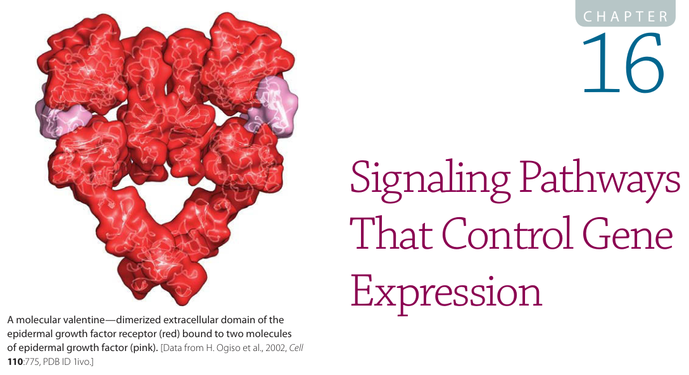
细胞外信号对细胞既有短期效应，也有长期效应。短期效应通常由对已有酶或其他蛋白质的修饰所引发，正如我们在第15章所见。许多细胞外信号还影响基因表达，从而诱导细胞功能的长期改变。这些改变包括细胞分裂与发育方面的变化，例如在细胞命运决定和分化过程中发生的那些变化。机体响应本章后面将讨论的细胞因子而产生红细胞、白细胞和血小板，这是信号诱导的基因表达改变影响细胞增殖与分化的一个很好例子。基因表达的改变还使已分化的细胞能够通过改变其形状、代谢或运动来对自身环境作出应答。例如在免疫系统细胞中，若干激素激活一类转录因子（NF-κB），最终影响150多个参与对感染免疫应答的基因的表达。鉴于基因转录在介导发育、代谢和运动等关键方面具有广泛作用，下述现象就不足为奇了：
此类信号通路中的突变会导致许多人类疾病，包括癌症、糖尿病和免疫系统疾病。
在本章中，我们探讨细胞用来影响基因表达的主要信号通路。在真核生物中，约有十几类高度保守的细胞表面受体，这些受体激活若干类高度保守的细胞内信号转导通路。其中许多通路由多种激酶、GTP结合蛋白、其他调节蛋白、小的细胞内分子以及Ca2+之类的离子组成，它们共同构成复杂的信号级联。鉴于这种复杂性，细胞信号传导对初次接触的学习者来说可能是一个令人生畏的课题；每条通路中分子的众多名称和缩写确实颇具挑战性。然而，这个课题值得认真钻研：一旦熟悉了这些通路，人们就能深刻地理解控制大量生物学过程的调控机制。
为简明起见，信号转导通路可依据以下顺序划分为几种基本类型：
细胞内事件的顺序。在一种非常常见的信号转导通路类型中（图16-1a），配体与受体结合会触发一种受体相关激酶的激活。这类受体通常只有一个跨膜结构域，并通过配体诱导的受体二聚化而被激活。该激酶可能是受体蛋白胞质结构域固有的一部分，也可能紧密结合在受体的胞质结构域上。这些激酶往往直接磷酸化并激活多种信号转导蛋白，包括位于胞质中的转录因子（图16-1a，步骤1）。有些受体激酶还激活像Ras这样的小GTP结合"开关"蛋白（图16-1a，步骤2）。许多信号转导通路，例如由Ras激活的那些通路，涉及多种激酶，其中一种激酶磷酸化并由此激活（偶尔也抑制）另一种激酶的活性；这些激酶中的一种或多种最终磷酸化并激活转录因子。
大多数其他受体则通过配体结合所诱导的构象变化而被激活。有些受体，主要是那些
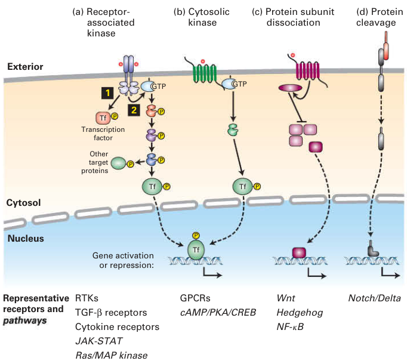
| RTKs | 受体酪氨酸激酶（RTK） |
| TGF-β receptors | TGF-β受体 |
| Cytokine receptors | 细胞因子受体 |
| JAK-STAT | JAK-STAT |
| Ras/MAP kinase | Ras/MAP激酶 |
| GPCRs | G蛋白偶联受体（GPCR） |
| cAMP/PKA/CREB | cAMP/PKA/CREB |
| Wnt | Wnt |
| Hedgehog | Hedgehog |
| NF-κB | NF-κB |
| Notch/Delta | Notch/Delta |
| Nucleus | 细胞核 |
| Cytosol | 胞质 |
| Exterior | 胞外 |
| Receptor-associated kinase | 受体相关激酶 |
| Gene activation or repression | 基因激活或阻遏 |
| Cytosolic kinase | 胞质激酶 |
| GTP | GTP |
| Protein subunit dissociation | 蛋白亚基解离 |
| Protein cleavage | 蛋白质切割 |
| Transcription factor | 转录因子 |
| Other target proteins | 其他靶蛋白 |
在第15章介绍过的具有七个跨膜区段的受体，会激活GTP结合的Gα蛋白（图16-1b）。它们的激活通常导致一种或多种蛋白激酶活化，后者继而磷酸化并激活多种靶蛋白，包括转录因子。
在另一些信号通路中，配体与受体结合会触发胞质中一个多蛋白复合物的解离，释放出一个转录因子，后者随即转位进入细胞核并影响基因表达（图16-1c）。最后，在最后一种常见类型中，抑制剂或受体本身的蛋白酶解切割释放出一个有活性的转录因子，随后进入细胞核（图16-1d）。尽管每条信号通路都有其自身的精妙与独特之处，但几乎每一条都可归入这些基本类型之一。
本章讨论的这些通路在整个进化过程中一直保守，在果蝇、线虫、涡虫和人类中以大致相同的方式运作。这些通路中蛋白质之间所表现出的高度同源性
使研究人员能够在多种实验系统中对它们进行研究。例如，分泌型信号蛋白Hedgehog（Hh）及其受体最早是在发育受损的果蝇突变体中被鉴定出来的。随后，这些蛋白的人类和小鼠同源物被克隆，并证明它们参与细胞分化过程中若干重要的信号事件，由此发现Hh通路的异常激活发生于几种人类肿瘤中。此类发现说明了从遗传学角度（在果蝇、小鼠、线虫、酵母及其他生物中）和生物化学角度研究信号通路的重要性。
许多受体在多种机体细胞中都有表达，但同一种激素激活这些受体后，会在每种细胞类型中触发截然不同的基因集合的诱导（或阻遏）。换句话说，同一个被激活的转录因子会在不同类型的细胞中诱导（或阻遏）不同基因集合的表达。要理解这一要点，请回顾第9章：高等生物中每个基因的表达都受多种转录因子和染色质修饰酶的调控，而且许多基因在多种细胞类型中都表达，其表达水平非常精确但往往各不相同。
由细胞表面受体激活的转录因子能否在某一特定细胞中诱导（或阻遏）某个基因，首先取决于由该细胞发育历史所决定的表观遗传状态（图16-2）。正如我们在第9章所学到的，表观遗传状态决定了一个基因是处于有活性的"开放"染色质构象，因而
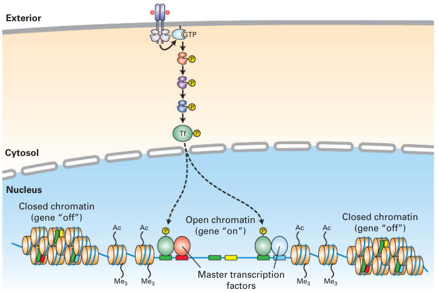
| Nucleus | 细胞核 |
| Cytosol | 胞质 |
| Exterior | 胞外 |
| GTP | GTP |
| Closed chromatin | 关闭的染色质 |
| Open chromatin | 开放的染色质 |
| Master transcription factors | 主控转录因子 |
| Ac | 乙酰化 |
| Me | 甲基化 |
可被该转录因子结合，还是处于沉默的"关闭"状态、无法进行转录调控。换句话说，某个给定的转录因子有可能结合染色体DNA上的多个基因调控位点，但在任何特定细胞类型中，这些位点只有一部分可供结合。
其次，与该特定活化转录因子相互作用的其他转录因子、组蛋白阅读器与修饰酶以及染色质重塑复合物，决定了该因子结合到基因调控序列后将会诱导或阻遏哪些基因。特别地，许多细胞类型表达一种或多种主控转录因子，它们决定细胞的同一性和发育命运；最近的一项发现是，许多由细胞表面受体激活的转录因子会结合到染色体DNA上邻近这些主控因子的调控位点——主要是增强子——从而诱导（或阻遏）细胞特异性基因（见图16-2）。
没有哪条信号通路是孤立起作用的。许多细胞会对多种激素和其他信号分子作出应答；有些哺乳动物细胞表达大约一百种不同类型的细胞表面受体，每一种结合不同的配体。由于许多基因受多种转录因子的调控，而这些转录因子又由不同的细胞内信号通路激活或阻遏，因此任何一个基因的表达都可能受多种细胞外信号调控。特别是在早期发育过程中，信号通路之间的这种"交互作用"以及由此导致的基因表达模式的一系列改变，最终可能变得如此广泛，以致细胞呈现出
不同的发育命运。在本章中，我们将看到多条信号通路如何相互作用，以调控代谢的关键方面，例如血液中的葡萄糖水平和脂肪（储脂）细胞的形成。
我们首先讨论一大类受体——受体丝氨酸激酶——它们在受到相应激素激活时，直接磷酸化并激活一种或多种直接进入细胞核的转录因子。我们将确切地看到，这些转录因子如何根据染色质的表观遗传状态以及主控转录因子和其他细胞特异性蛋白质是否存在，在不同细胞类型中激活迥然不同的基因。
16.1 激活Smad的受体丝氨酸激酶
在本节中，我们讨论一个进化上保守的受体丝氨酸激酶家族（TGF-β受体家族），以及与它们结合的保守的大信号分子家族（TGF-β家族）。这些受体磷酸化并由此触发一类保守转录因子（Smad）的激活，后者调控若干生长与分化通路。在未受刺激的细胞中，Smad位于胞质中，但被激活后便进入细胞核调控转录。TGF-β通路在不同类型细胞中具有极为多样的效应，因为TGF-β家族的不同成员激活TGF-β受体家族的不同成员，进而激活Smad类转录因子的不同成员。此外，我们还将看到，同一个被激活的Smad蛋白在不同类型的细胞中与不同的转录因子配对，从而激活不同的基因集合。
转化生长因子β（TGF-β）家族包含若干相关的细胞外信号分子，它们在调控无脊椎动物和脊椎动物的发育中发挥广泛作用。TGF-β家族的创始成员TGF-β1，是根据其能在若干培养的早期哺乳动物癌细胞系中诱导恶性表型而被鉴定出来的（"转化生长因子"）；在这里，TGF-β1促进了转移，即原发肿瘤的扩散与侵袭，正如第24章所讨论的。然而，全部三种人类TGF-β同种型（TGF-β1、2和3）在大多数正常（非癌性）哺乳动物细胞中的主要功能，是通过诱导包括p15INK4B在内的蛋白质合成来阻止细胞增殖，这些蛋白质抑制对进入细胞周期S期至关重要的细胞周期蛋白依赖性激酶（CDK）（见图1-21和图19-10）。
TGF-β由体内许多细胞产生，既抑制分泌细胞自身的生长（自分泌信号传导），也抑制邻近细胞的生长（旁分泌信号传导）。TGF-β受体或TGF-β通路中若干细胞内信号转导蛋白中任何一个的缺失，都会使细胞摆脱这种生长抑制，这常见于人类肿瘤的早期发展过程。TGF-β蛋白
还促进细胞黏附分子和细胞外基质分子的表达，这些分子在组织构建中发挥重要作用（见第20章）。TGF-β在果蝇中的同源物Dpp参与果蝇胚胎的背腹模式形成。TGF-β家族的其他哺乳动物成员，即激活素和抑制素，影响泌尿生殖道的早期发育。该家族的另一个成员，一种骨形态发生蛋白（BMP），最初是因其能在培养细胞中诱导骨形成而被鉴定出来的。它现在被称为BMP7，临床上用于在严重骨折后强化骨骼。在随后被认识到的众多BMP蛋白中，许多诱导发育中的关键步骤，包括中胚层和最早造血细胞的形成；有些对维持胚胎干细胞和成体干细胞培养物的未分化状态很重要（见第21章）。它们中的大多数与骨骼毫无关系。
TGF-β蛋白以无活性形式储存于细胞外基质中
TGF-β合成时带有一个较长的N端前结构域，该结构域在高尔基体中被切掉。TGF-β的单体形式含有三个保守的分子内二硫键。每个单体中央的一个额外半胱氨酸将TGF-β单体连接成有功能的同二聚体和异二聚体（见图16-3a），这些二聚体在内质网中形成。蛋白质分泌时，前结构域仍以非共价方式附着在TGF-β生长因子结构域上，并阻止TGF-β与其细胞表面受体结合。潜伏的前激素–TGF-β复合物储存在分泌细胞附近，附着于细胞外基质的特定组分上。
包括蛋白酶消化在内的若干机制可将有活性的TGF-β从细胞外基质中释放出来，并导致细胞信号传导的迅速激活——这是许多信号通路的一个重要特征。第二种重要且不寻常的TGF-β激活方式源于这样的认识：TGF-β1和TGF-β3的前结构域含有一个三氨基酸基序RGD（Arg-Gly-Asp），它能与一类称为整合素的细胞表面膜蛋白结合（第20章将讨论）；整合素可与许多细胞外基质蛋白中的RGD基序结合。值得注意的是，两种整合素（称为αvβ6或αvβ8）中的任何一种与TGF-β前结构域中的RGD基序结合后，表达该整合素的细胞发生收缩，从而以机械力将前结构域从潜伏的TGF-β上拉离，使其得以与同一细胞表面的受体结合并启动信号传导。
三种不同的TGF-β受体蛋白参与结合TGF-β并激活信号转导
研究人员很快确定TGF-β1是一种关键的生长抑制因子，但要理解其作用方式，他们必须找到它所结合的受体。他们开展这项搜寻的思路代表了
鉴定受体的典型生物化学方法（见15.2节）。研究者首先将纯化的生长因子与放射性同位素碘-125（125I）反应，所用条件使碘共价连接到暴露的酪氨酸残基上，从而给它们标记上放射性标签。随后将125I标记的TGF-β蛋白与培养细胞一起孵育，并用一种化学试剂处理孵育混合物，使标记的TGF-β与细胞表面的受体共价交联。对125I标记的TGF-β–受体复合物进行纯化，显示出三种不同的多肽，分子量分别为55、85和280 kDa，分别称为RI、RII和RIII TGF-β受体。
图16-3（步骤1和2）描绘了这三种TGF-β受体蛋白之间的关系和功能。最
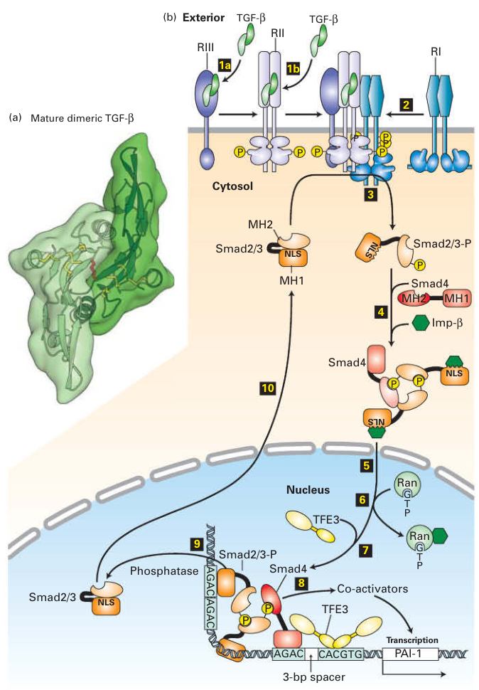
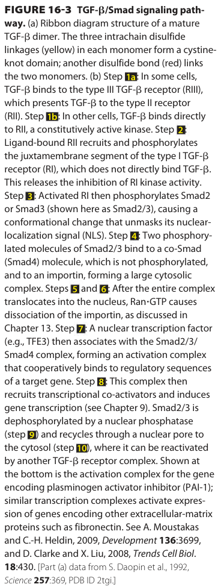
| Smad2/3 | Smad2/3 |
| NLS | 核定位信号（NLS） |
| Mature dimeric TGF-β | 成熟二聚体TGF-β |
丰富的RIII，也称为β-聚糖，是一种细胞表面蛋白聚糖。蛋白聚糖由与糖胺聚糖（GAG）链（如硫酸乙酰肝素和硫酸软骨素）结合的蛋白质构成（见图20-32）。RIII是一种跨膜蛋白，它结合TGF-β分子并将其富集在细胞表面附近，从而促进它们与RII受体结合。RI和RII受体是二聚体跨膜蛋白，其胞质结构域的一部分是丝氨酸/苏氨酸激酶。RII具有组成型激酶活性；也就是说，即使未与TGF-β结合它也有活性。TGF-β与RII结合会在TGF-β–RII界面产生一个新的分子表面，该表面与RI对接，诱导形成各含两份RI和两份RII的复合物——这是配体诱导的受体异源寡聚化的一个例子，我们在本章中会经常遇到。随后一个RII亚基
磷酸化RI亚基中靠近质膜胞质面的高度保守序列里的丝氨酸和苏氨酸残基，从而激活RI的激酶活性。
活化的TGF-β受体磷酸化Smad转录因子
研究人员通过对果蝇和秀丽隐杆线虫突变体的研究，鉴定出TGF-β受体下游的转录因子。果蝇中的这些转录因子以及相关的脊椎动物蛋白质，现在被称为Smad。有三类Smad蛋白在TGF-β信号通路中发挥作用：R-Smad（受体调控的Smad；Smad2和3）、共Smad（Smad4）和抑制性Smad（I-Smad；Smad7）。
如图16-3所示，一个R-Smad（Smad2或Smad3）含有两个结构域，称为MH1和MH2，二者被一段柔性的连接区隔开。N端MH1结构域含有一个DNA结合片段，以及一个称为核定位信号（NLS）的结构域。NLS几乎存在于所有胞质中的转录因子中，是它们转运入核所必需的（见第13章）。然而，当R-Smad处于无活性、未磷酸化的状态时，NLS被遮蔽，因而不能与输入蛋白结合（见图13-36），并且MH1与MH2结构域以某种方式相互结合，使它们无法与DNA或共Smad结合。活化TGF-β RI受体使R-Smad C端附近的两个丝氨酸残基磷酸化，从而使两个结构域分开，暴露出NLS并允许输入蛋白结合，后者催化该Smad进入细胞核。
与此同时，每个Smad3中被RI受体激酶磷酸化的那两个丝氨酸，会与一个Smad3或Smad4的MH2结构域中的磷酸丝氨酸结合位点结合，形成一个稳定的复合物，其中含有两个磷酸化Smad3（或Smad2）分子和一个共Smad（Smad4）分子。结合的输入蛋白随即介导异源R-Smad/共Smad复合物转位进入细胞核。输入蛋白在核内解离后，Smad3/Smad4（或Smad2/Smad4）复合物与其他转录因子结合，激活特定靶基因的转录。
在细胞核内，R-Smad还会被进一步修饰：其连接区被磷酸化，MH1结构域被乙酰化，MH2结构域被单泛素化，以及C端丝氨酸被核内磷酸酶去磷酸化。总体而言，这些众多的修饰导致转录活性的调控，并最终导致R-Smad/共Smad复合物解离，Smad通过输出蛋白被输出细胞核。因此，核内活性Smad的浓度密切反映了细胞表面活化TGF-β受体的水平，使转录调控能够紧密跟随环境中活性TGF-β的水平。
BMP蛋白也属于TGF-β家族，它们结合并激活一组不同的受体，这些受体
与TGF-β的RI和RII蛋白相似，但磷酸化其他R-Smad。其中两个被磷酸化的Smad随后与Smad4形成三聚体复合物，而这个Smad复合物所激活的转录应答不同于由TGF-β受体所诱导的那些应答。
Smad3/Smad4复合物在不同细胞类型中激活不同基因的表达
几乎所有哺乳动物细胞都分泌至少一种TGF-β同种型，且大多数细胞表面都有TGF-β受体。然而，由TGF-β诱导的细胞应答因细胞类型而异。例如在上皮细胞和成纤维细胞中，TGF-β诱导细胞外基质蛋白（如纤连蛋白和胶原蛋白；见第20章）的表达。它还诱导能抑制血清蛋白酶的蛋白质的表达，否则这些蛋白酶会降解这些细胞外基质蛋白。这种抑制使基质稳定，让细胞得以形成稳定的组织。这类蛋白酶抑制蛋白包括纤溶酶原激活物抑制剂1（PAI-1）。PAI-1基因的转录需要转录因子TFE3与R-Smad/共Smad（Smad3/Smad4）复合物形成复合体，并且所有这些蛋白质都要结合到PAI-1基因调控区内的特定序列上（图16-3，下部）。通过与被表达于成纤维细胞中的其他转录因子配对，R-Smad/共Smad复合物促进编码其他蛋白质（如p15INK4B）的基因的表达，后者使细胞周期阻滞在G1期，从而阻断细胞增殖（见第19章）。
更一般地说，Smad3/Smad4复合物要结合到DNA调控区并激活某个基因，其DNA结合片段必须处于有活性的"开放"染色质构象中。同样重要的是，Smad3/Smad4复合物的结合还需要其他转录因子结合到DNA上的相邻位点；这些转录因子常常是决定细胞在发育过程中身份的主控转录因子。例如，我们将在第21章学到，转录因子Oct4与另外两个转录因子Sox2和Nanog形成复合物，对维持胚胎干细胞（ES细胞）处于未分化状态至关重要，并且表达这三种主控转录因子再加上一两个其他转录因子，就足以将已分化的细胞（例如免疫系统的细胞）重编程为ES细胞。TGF-β对Smad3/Smad4复合物的激活也是维持ES细胞未分化状态所必需的。
图16-4a所总结的染色质免疫沉淀–DNA测序实验表明，在ES细胞中，Smad3/Smad4复合物结合到DNA上邻近Oct4所占位点的位置；类似的实验显示，Sox2和Nanog也结合在这些位点中的大多数上。相反，MyoD及相关转录因子Myf5是横纹肌发育中的主控转录因子，而Oct4、Sox2和Nanog不表达；在肌细胞中，Smad3/Smad4复合物结合到基因
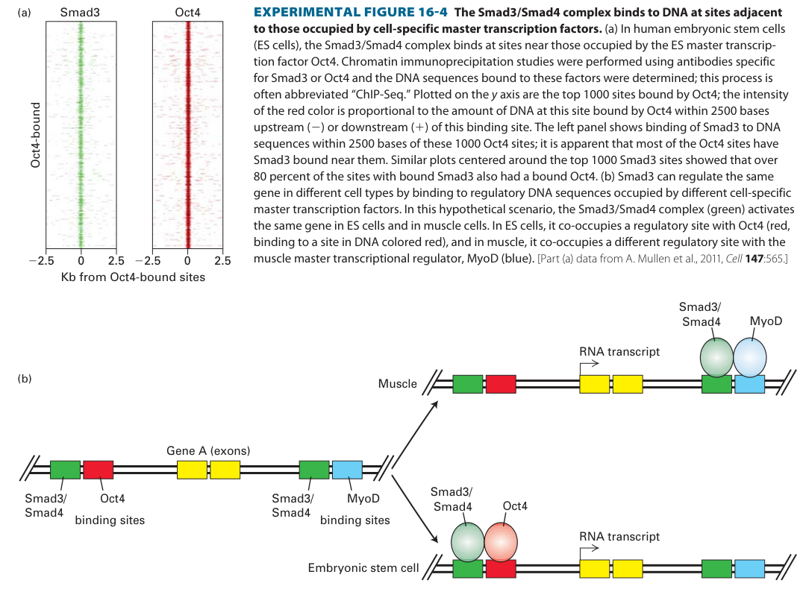
| Oct4 | Oct4 |
| Smad3 | Smad3 |
| Smad4 | Smad4 |
| Smad3/Smad4 | Smad3/Smad4 |
| MyoD | MyoD |
| binding sites | 结合位点 |
| Gene A (exons) | 基因A（外显子） |
| RNA transcript | RNA转录本 |
| Muscle | 肌肉 |
| Embryonic stem cell | 胚胎干细胞 |
| Kb from Oct4-bound sites | 距Oct4结合位点的距离（kb） |
| Oct4-bound | 结合Oct4的位点 |
调控位点，即邻近MyoD所占位点的位置，而这些DNA位点与ES细胞中结合Smad3/Smad4复合物的位点非常不同。在肌细胞中其调控区被Smad3/Smad4复合物结合的肌肉基因中，约有13%在ES细胞中也被Smad3/Smad4复合物结合，但对这些结合位点的详细分析表明，Smad3/Smad4复合物在这些不同细胞类型中通过结合不同的调控DNA序列（很可能是增强子区域）来调控同一个基因，而这些序列被不同的细胞特异性主控转录因子占据（图16-4b）。正如我们前面提到的，由其他类型细胞表面受体激活的其他类型转录因子，也会在不同类型细胞中激活或阻遏不同的基因集合。我们将在本章中看到，那些转录因子调控那些基因的方式与TGF-β受体激活的Smad相同。
TGF-β信号传导的缺失在许多癌症的早期发展中起关键作用。许多人类肿瘤在TGF-β受体或Smad蛋白中带有失活突变，因而对TGF-β的生长抑制作用具有抗性（见图24-24）。大多数人类胰腺癌
例如，在编码Smad4的基因中存在缺失，因而无法响应TGF-β而诱导细胞周期抑制因子。事实上，Smad4最初被称为DPC（deleted in pancreatic cancer，胰腺癌中缺失）。视网膜母细胞瘤、结肠癌和胃癌、肝癌以及某些T和B细胞恶性肿瘤也对TGF-β的生长抑制无应答。这种应答性的丧失与TGF-β RI或RII的缺失相关；通过重组表达"缺失的"蛋白质可以恢复对TGF-β的应答性。Smad2的突变也常见于几种人类肿瘤中。■
负反馈环路调控TGF-β/Smad信号传导
在大多数信号通路中，对生长因子或其他信号分子的应答会随时间减弱（这一现象称为脱敏）。这种反应具有适应性，因为它能防止过度反应，并使细胞应答的精细调控成为可能。两种胞质蛋白SnoN和Ski（Ski代表"Sloan-Kettering Cancer Institute"，即斯隆-凯特琳癌症研究所）在几乎所有机体细胞中由TGF-β信号诱导产生，其作用是下调TGF-β/Smad信号通路。这些蛋白质最初被鉴定
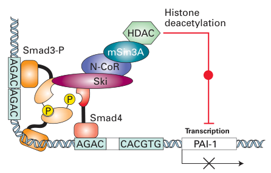
| Ski | Ski |
| Smad4 | Smad4 |
| Smad3-P | 磷酸化Smad3 |
| N-CoR | N-CoR |
| mSin3A | mSin3A |
| HDAC | 组蛋白脱乙酰酶（HDAC） |
| Histone deacetylation | 组蛋白去乙酰化 |
| PAI-1 | PAI-1 |
| Transcription | 转录 |
为致癌癌蛋白，因为它们在许多癌症（包括黑色素瘤和某些乳腺癌）中表达升高，原因是由TGF-β正常诱导的生长抑制蛋白没有被产生。事实上，当在培养的原代成纤维细胞中过表达时，Ski或SnoN会导致细胞异常增殖，而在胰腺癌中下调Ski可减小肿瘤生长。
SnoN和Ski如何触发细胞异常增殖，直到多年以后才被人们理解，那时发现它们在TGF-β刺激后既结合共Smad（Smad4），也结合磷酸化的R-Smad（Smad3）。SnoN和Ski并不阻止R-Smad/共Smad复合物的形成，也不影响Smad复合物结合DNA调控区的能力。相反，它们阻断已结合Smad复合物的转录激活，部分是通过诱导邻近染色质片段中组蛋白的去乙酰化来实现的。这使细胞对TGF-β的生长抑制效应产生抗性（图16-5）。由TGF-β诱导的这些蛋白质水平升高，被认为可减弱因持续暴露于TGF-β而产生的长期信号效应；这是负反馈的又一个例子，即由TGF信号诱导的基因（此处为SnoN）抑制TGF-β的进一步信号传导。
在TGF-β刺激后诱导产生的其他蛋白质中，有抑制性Smad，尤其是Smad7。Smad7阻断活化的I型TGF-β受体（RI）磷酸化R-Smad蛋白的能力，并且Smad7还可能使TGF-β受体被靶向降解。通过这些方式，Smad7像Ski和SnoN一样参与一个负反馈环路：它的诱导产生抑制了因长期暴露于刺激激素而进行的细胞内信号传导。
- 转化生长因子β（TGF-β）家族包含若干相关的细胞外信号分子，它们在调控发育中发挥广泛作用。
- TGF-β二聚体以无活性形式储存在细胞表面或细胞外基质中；活性二聚体的释放（例如通过前结构域的机械拉伸或蛋白酶消化）启动TGF-β信号传导。
- TGF-β受体包括三种类型（RI、RII、RIII）。TGF-β家族成员与RII受体激酶的结合使RII能够磷酸化RI受体的胞质结构域并激活其固有的丝氨酸/苏氨酸激酶活性。随后RI磷酸化一个R-Smad，暴露出核定位信号（见图16-3）。
- 磷酸化的R-Smad与共Smad结合后，由此形成的复合物转位进入细胞核，在核内与多种转录因子相互作用，诱导靶基因的表达（见图16-3）。
- Smad3/Smad4复合物通过结合位于细胞特异性主控转录因子所占位点附近的调控DNA序列，在不同细胞中诱导不同的基因（见图16-4）。
- TGF-β信号传导通常抑制细胞增殖。该信号通路中各组分的缺失会导致细胞异常增殖和恶性变。
- 癌蛋白（如Ski和SnoN）和抑制性Smad（如Smad7）通过抑制由Smad2/3/Smad4复合物介导的转录，充当TGF-β信号传导的负调控因子（见图16-5）。
16.2 细胞因子受体与JAK/STAT信号通路
本节和下节将讨论两大类能激活蛋白酪氨酸激酶的受体。蛋白酪氨酸激酶在人类基因组中约有90种，它们磷酸化靶蛋白上特定的酪氨酸残基，而该酪氨酸通常嵌在一段特定的线性氨基酸序列之中。磷酸化后的靶蛋白随后能激活一条或多条信号通路。这些通路值得关注，因为它们调控细胞增殖、分化、存活和代谢的绝大多数方面。
激活酪氨酸激酶的受体有两大类：(1) 酪氨酸激酶是受体多肽链固有组成部分的受体，称为受体酪氨酸激酶（RTK），我们将在16.3节讨论；(2) 受体与激酶彼此分开的受体，如细胞因子受体，其中的受体与激酶是分开的
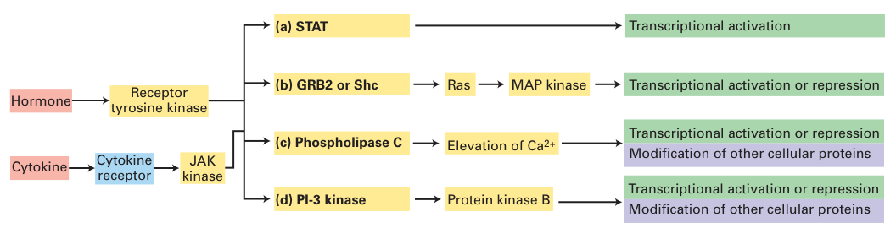
| Cytokine | 细胞因子 |
| receptor | 受体 |
| Hormone | 激素 |
| JAK | JAK |
| tyrosine kinase | 酪氨酸激酶 |
| Ras | Ras |
| MAP kinase | MAP激酶 |
| Protein kinase B | 蛋白激酶B |
| Phospholipase C | 磷脂酶C |
| PI 3-kinase | PI 3-激酶 |
| STAT | STAT |
| GRB2 or Shc | GRB2或Shc |
| Transcriptional activation or repression | 转录激活或阻遏 |
| Modification of other cellular proteins | 其他细胞蛋白的修饰 |
| Elevation of Ca2+ | Ca2+升高 |
多肽，由不同的基因编码，却紧密结合在一起。在细胞因子受体中，这种紧密结合的激酶称为JAK激酶。两类受体激活类似的胞内信号转导通路（图16-6）。我们先从细胞因子受体讲起，因为它们主要采用一条称为JAK/STAT通路的短信号转导通路：STAT转录因子结合到被激活的受体上，被JAK激酶磷酸化，移动到细胞核，并直接激活转录。
细胞因子影响多种细胞类型的发育
细胞因子构成一个家族，其成员是相对较小的分泌型信号分子（一般含约160–200个氨基酸），控制特定类型细胞的生长与分化。其中一个大细胞因子家族——白细胞介素，对免疫系统中T细胞的增殖与功能以及产生抗体的B细胞是必需的（见第23章）。另一类细胞因子家族——干扰素，在病毒感染后由某些细胞类型产生并分泌，作用于邻近细胞，诱导使这些细胞对病毒感染更具抵抗力的酶。
生长激素（GH）正如其名，是一种由191个氨基酸组成的蛋白质，能刺激体内许多类型细胞的增殖；它由垂体前叶的细胞合成并分泌，以响应另一种激素——由脑内称为下丘脑的部位产生的生长激素释放激素。GH是最早用重组DNA制造的蛋白质药物之一；临床上用于治疗儿童生长障碍和成人GH缺乏症。牛的这种激素则用于提高奶牛的产奶量。妊娠期间，一种相关激素——细胞因子催乳素，诱导衬贴乳腺未成熟小管的上皮细胞分化为产生乳蛋白并把它们分泌到导管中的腺泡细胞。
GH和催乳素的三维结构与几种诱导重要类型血细胞形成的细胞因子非常相似。所有血细胞都来源于造血干细胞，后者形成一系列祖细胞，再分化为成熟的血细胞（见图21-17）。例如，细胞因子粒细胞集落刺激因子（G-CSF）诱导骨髓中的粒系祖细胞分裂数次，然后分化为粒细胞，即能使细菌和其他病原体失活的那类白细胞。一种相关的细胞因子——血小板生成素，刺激另一种祖细胞分裂并分化为巨核细胞，这种巨大的细胞碎裂成对血液凝固必不可少的血小板。
一种结构相关的细胞因子——促红细胞生成素（Epo），通过诱导骨髓中红系祖细胞的增殖与分化，触发红细胞（erythrocytes）的生成（图16-7）。促红细胞生成素由某些肾细胞合成。血氧下降，例如大伤口失血所造成的那种下降，意味着红细胞水平低于最佳值，而红细胞的主要功能是运输与血红蛋白结合的氧。转录因子HIF-1α在常氧水平下会被降解。肾细胞对低氧的响应是阻止HIF-1α降解；HIF-1α转录促红细胞生成素基因，于是细胞合成更多的促红细胞生成素并把它分泌到血液中。随着促红细胞生成素水平升高，越来越多的红系祖细胞被诱导分裂和分化；每个祖细胞在短短几天内就产生30到50个红细胞。通过这种方式，机体能够对失血作出响应，加快红细胞的生成。
GH、催乳素、G-CSF、血小板生成素和Epo无疑都是从同一个祖先蛋白演化而来的，因为所有这些细胞因子都具有相似的三级结构，由四条保守的长α螺旋折叠在一起构成。
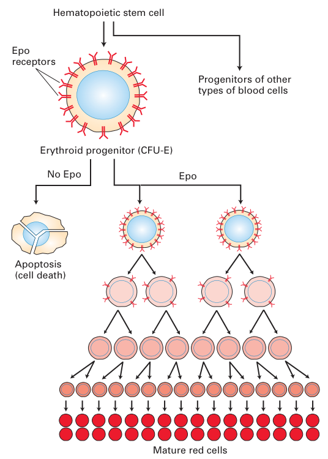
| Epo | Epo |
| No Epo | 无Epo |
| Erythroid progenitor (CFU-E) | 红系祖细胞（CFU-E） |
| Hematopoietic stem cell | 造血干细胞 |
| Progenitors of other types of blood cells | 其他类型血细胞的祖细胞 |
| receptors | 受体 |
| Apoptosis (cell death) | 凋亡（细胞死亡） |
| Mature red cells | 成熟红细胞 |
Epo和G-CSF都是通过在培养的哺乳动物细胞中重组表达而商业化生产的。肾病患者，尤其是接受透析的患者，常患贫血（红细胞计数偏低），因此用重组Epo治疗以提高红细胞水平。Epo和G-CSF被用作某些癌症疗法的辅助手段，因为许多癌症治疗会影响骨髓，减少红细胞和粒细胞的生成。■
细胞因子与其受体的结合激活一个或多个紧密结合的JAK蛋白酪氨酸激酶
GH、催乳素、G-CSF、血小板生成素和Epo都具有相似的结构，它们通过形成两个相同细胞因子受体蛋白的二聚体来激活结构相似的受体，这一过程称为受体同二聚化。随后，这些受体蛋白中的每一个都激活与之结合的JAK激酶，即JAK2。这些细胞因子受体的胞外结构域由两个亚结构域构成，每个亚结构域都含七条以特征性方式折叠在一起的保守β链。
许多其他细胞因子——包括激活免疫系统细胞的白细胞介素，以及诱导那些触发抗病毒感染能力的蛋白质表达的干扰素——同时结合两个或更多不同的细胞因子受体，这一过程称为受体异源寡聚化。一般来说，这些细胞因子受体结合并激活JAK激酶家族的两个成员。尽管如此，所有细胞因子受体所激活的信号通路大体相似（见图16-6），而且由激素结合诱导的受体二聚化，是许多其他能激活酪氨酸激酶的受体类型所共有的。
白细胞介素2（IL-2）对功能性T细胞的形成是必需的，而T细胞是免疫系统的重要组成部分（见第23章）。IL-2受体是由α、β和γ三个不同亚基组成的寡聚体。γ链也是其他几种白细胞介素受体的必需亚基，这些白细胞介素包括IL-4、IL-7、IL-9、IL-15和IL-21，它们全都是形成产生抗体的B细胞及其他类型免疫系统细胞所必需的细胞因子。重症联合免疫缺陷（SCID）是一种既不产生T细胞也不产生B细胞的遗传病。SCID患者无法抵御任何细菌或病毒感染，因此必须被置于无菌环境中（就像著名的"泡泡男孩"）。许多SCID病例是由IL-2受体γ链缺陷引起的。这些患儿现在可以通过基因治疗治愈：用病毒载体（见图6-30）把有功能的γ链基因导入能产生所有免疫系统细胞的造血干细胞（见第23章）。■
这里我们聚焦于较简单的受体同二聚化情形。一个促红细胞生成素分子与两个相同的促红细胞生成素受体（EpoR）蛋白的相互作用，如图16-8所描绘，是本组细胞因子与其受体结合的范例。GH-GH受体复合物的结构与之相似，详细的诱变研究表明，生长激素中只有八个氨基酸（绿色）贡献了实现紧密受体结合所需能量的85%；这些氨基酸在一级序列中彼此相距很远，但在折叠后的蛋白质中却相邻（图16-9）。由于这种结合涉及多种弱的非共价力（即离子键、范德华力和疏水相互作用），以及
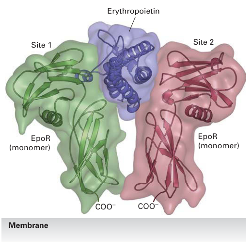
| Erythropoietin | 促红细胞生成素 |
| Site 1 | 位点1 |
| Site 2 | 位点2 |
| EpoR (monomer) | EpoR（单体） |
| Membrane | 膜 |
受体与配体相互作用表面之间的分子互补性，所以这种结合极其紧密；约10−10 M的解离常数（Kd）是大多数细胞因子受体的特征。因此极低浓度的GH和大多数其他细胞因子——约1微克/升
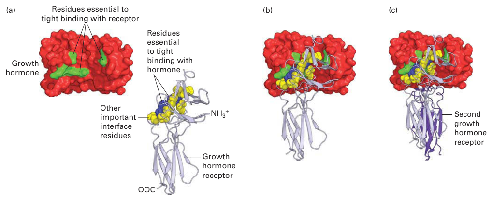
| Growth hormone | 生长激素 |
| Growth hormone receptor | 生长激素受体 |
| Second growth hormone receptor | 第二个生长激素受体 |
| Residues essential to tight binding with receptor | 与受体紧密结合所必需的残基 |
| Residues essential to tight binding with hormone | 与激素紧密结合所必需的残基 |
| Other important interface residues | 其他重要的界面残基 |
（大致相当于十亿分之一）——就足以激活细胞因子受体。
细胞因子受体本身不具备酶活性。相反，一个JAK激酶紧密结合在受体的胞质结构域上（图16-10）。JAK激酶家族的四个成员各含一个N端受体结合结构域、一个通常催化活性很弱的C端激酶结构域，以及一个以未知机制调节激酶活性的中间"假激酶"结构域。（JAK之所以得名，是因为它们最初被克隆和鉴定时功能未知，被称作"just another kinase"。）这些激酶在配体结合和受体二聚化之后被激活（图16-10，步骤1）。
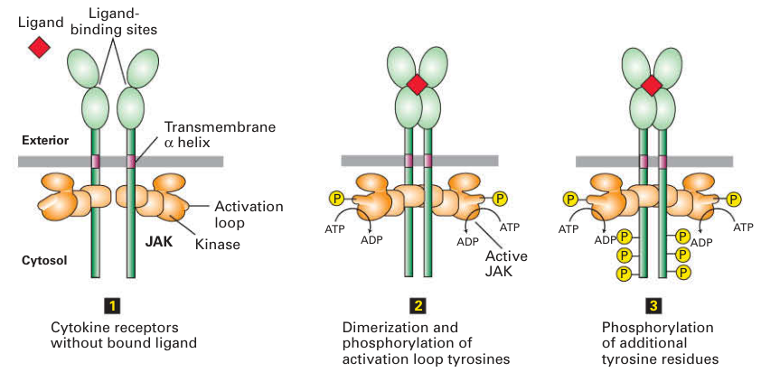
| ATP | ATP |
| ADP | ADP |
| Active JAK | 活性JAK |
| Ligand-binding sites | 配体结合位点 |
| Transmembrane α helix | 跨膜α螺旋 |
| Kinase | 激酶 |
| Exterior | 膜外 |
| Cytosol | 胞质溶胶 |
| Activation loop | 激活环 |
| Ligand | 配体 |
| Dimerization and phosphorylation of activation loop tyrosines | 激活环酪氨酸的二聚化与磷酸化 |
| Cytokine receptors without bound ligand | 未结合配体的细胞因子受体 |
| Phosphorylation of additional tyrosine residues | 额外酪氨酸残基的磷酸化 |
有些细胞因子受体，如Epo受体，在没有配体时就是同二聚体；另一些则只在配体存在时才二聚化。在这两种情况下，配体结合都会触发JAK发生构象变化，使它们能够在一个称为激活环的区域中彼此磷酸化一个关键酪氨酸（图16-10，步骤2）。与许多其他激酶一样，激活环的磷酸化导致激酶发生构象变化，增强酶对ATP或待磷酸化底物的亲和力，从而提高激酶活性（图16-10，步骤3）。支持这一激活机制的一项证据来自对一种突变JAK2的研究，其中那个关键酪氨酸被突变为苯丙氨酸。该突变JAK2能正常结合EpoR，但不能被磷酸化，且没有催化活性。在红系祖细胞中，以高于正常的量表达这种突变JAK2会完全阻断EpoR信号传导，因为突变JAK2结合了大多数EpoR蛋白，阻止了野生型JAK2蛋白的结合与发挥功能。这类突变称为显性失活突变，即使在携带野生型基因拷贝的细胞中也会导致功能丧失，因为突变蛋白阻止了正常蛋白发挥功能（见第6章）。
磷酸酪氨酸残基是多种含保守结构域蛋白的结合表面
JAK激酶一旦被激活，首先会磷酸化细胞因子受体胞质结构域上的若干酪氨酸残基（见图16-10）。其中几个磷酸酪氨酸残基随后充当
具有保守磷酸酪氨酸结合结构域的信号转导蛋白的结合位点。其中一种这样的磷酸酪氨酸结合结构域称为SH2结构域。SH2结构域的全称是Src同源2结构域，得名于它与由src基因编码的原型Src胞质酪氨酸激酶中一个区域的同源性。（Src是sarcoma（肉瘤）的缩写，在患有肉瘤的鸡中发现了细胞src基因的一种突变形式，详见第24章。）不同信号转导蛋白中SH2结构域的三维结构非常相似，但每一个都结合围绕磷酸酪氨酸残基的一段不同的短氨基酸序列。每个SH2结构域独特的氨基酸序列决定了它所结合的特定磷酸酪氨酸残基（图16-11）。不同蛋白SH2结构域中疏水凹槽的差异，使它们能够结合与不同序列相邻的磷酸酪氨酸，从而造成了它们结合伴侣的差异。例如，Src酪氨酸激酶的SH2结构域能强结合于任何含有关键四残基核心序列的肽：磷酸酪氨酸–谷氨酸–谷氨酸–异亮氨酸（见图16-11）。这四个氨基酸与Src SH2结构域中的肽结合位点紧密接触。结合的过程类似于把一个两叉的"插头"——肽的磷酸酪氨酸和异亮氨酸侧链——插入SH2结构域中一个两叉的"插座"。两个谷氨酸恰好贴合在SH2结构域表面上、磷酸酪氨酸插座与接受异亮氨酸残基的疏水插座之间。这种特异性在决定哪些信号转导蛋白结合哪些受体、从而激活哪些通路方面起着重要作用。
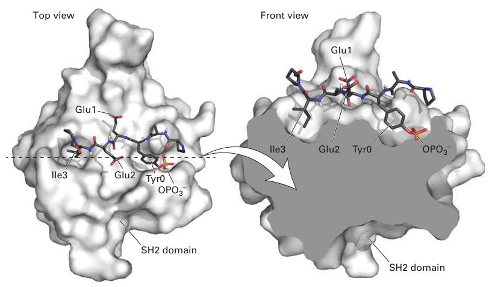
| Tyr0 | Tyr0 |
| Ile3 | Ile3 |
| Glu1 | Glu1 |
| Glu2 | Glu2 |
| SH2 domain | SH2结构域 |
| Front view | 正视图 |
| Top view | 俯视图 |
SH2结构域在行动：JAK激酶激活STAT转录因子
为了说明SH2结构域与特定磷酸酪氨酸残基的结合如何诱导特定的信号通路，我们来讨论所有JAK激酶以及某些RTK直接激活STAT家族转录因子成员的简明机制。所有STAT蛋白都含一个N端DNA结合结构域、一个能结合细胞因子受体胞质结构域中一个或多个特定磷酸酪氨酸的SH2结构域，以及一个含关键酪氨酸残基的C端结构域。单体STAT一旦通过其SH2结构域结合到受体上的磷酸酪氨酸，其C端酪氨酸就会被与之结合的JAK激酶磷酸化（图16-12a）。这种安排确保在特定细胞中，只有那些具有能结合特定受体的SH2结构域的STAT蛋白才会被激活，而且只有在该受体被激活时才会被激活。例如，促红细胞生成素受体以及GH、催乳素、G-CSF和另外几种细胞因子的受体都激活STAT5，而不激活STAT1、2、3或4；那些STAT由其他细胞因子受体激活。磷酸化的STAT自发从受体上解离，两个磷酸化STAT蛋白形成同二聚体，其中每一个的SH2结构域都结合另一个上的磷酸酪氨酸（图16-12b）。由于二聚化涉及暴露出核定位信号（NLS）的构象变化，STAT二聚体进入细胞核，在那里结合控制靶基因的特定增强子或启动子（DNA调控序列）（见图16-12a），从而改变基因表达。
由于不同细胞类型拥有各自独特的转录因子组合和独特的染色质表观遗传修饰，任何STAT能够被激活的基因在不同细胞类型中是不同的。例如，在乳腺细胞中，STAT5——与红系祖细胞中被EpoR激活的同一个STAT——在催乳素结合催乳素受体后被激活，并诱导编码乳蛋白的基因转录。相反，当STAT5在红系祖细胞中因Epo结合EpoR而被激活时，它诱导蛋白Bcl-xL的表达。Bcl-xL阻止这些祖细胞的程序性细胞死亡，即凋亡（见第21章），使它们得以增殖并分化为红细胞。更一般地说，人们认为在每种细胞类型中，被激活的STAT蛋白就像前面讨论的Smad一样，只结合开放染色质中的DNA位点，并且主要结合那些在相邻位点已有主控转录因子或其他细胞特异性基因调控蛋白结合的位点。这种组合多样性使得一组相对有限的受体、JAK激酶和STAT蛋白就能控制种类繁多的细胞活动。
多种机制下调来自细胞因子受体的信号传导
上一章我们看到了几种终止G蛋白偶联受体信号传导的方式。例如，受体和下游信号蛋白的磷酸化会抑制信号传导，而这种抑制可以被磷酸酶的可控作用逆转。这里我们
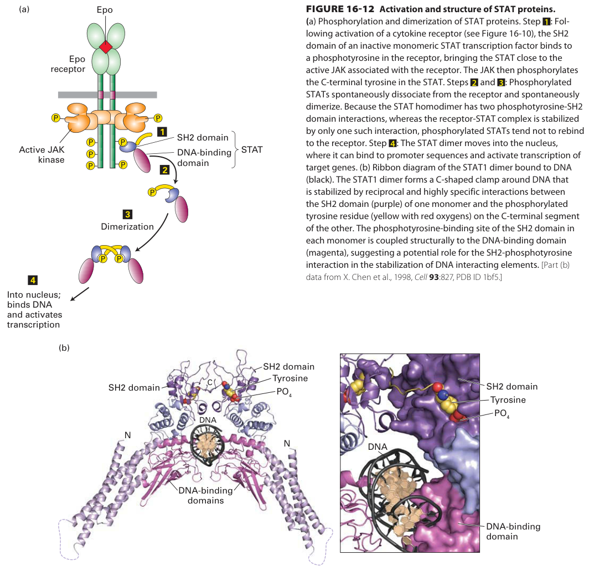
| DNA | DNA |
| SH2 domain | SH2结构域 |
| DNA-binding domain | DNA结合结构域 |
| Tyrosine | 酪氨酸 |
| Into nucleus; binds DNA and activates transcription | 进入细胞核；结合DNA并激活转录 |
讨论调控细胞因子受体信号传导的两种机制；下调蛋白酪氨酸激酶信号传导的其他机制将在下一节详述，因为它们主要是用RTK研究的。
磷酸酪氨酸磷酸酶 磷酸酪氨酸磷酸酶是去磷酸化酶，能专一性地水解特定靶蛋白上的磷酸酪氨酸连接。SHP1为磷酸酪氨酸磷酸酶如何抑制蛋白酪氨酸激酶活性提供了一个极好的例子，它是一种负调控若干类型细胞因子受体信号传导的磷酸酶。它的作用最初是通过分析缺失这种
蛋白的小鼠而被鉴定出来的，这些小鼠因包括红细胞在内的几种血细胞过量生成而死亡。
SHP1通过结合细胞因子受体并使与之结合的JAK蛋白失活来抑制细胞因子信号传导，如图16-13a所描绘。除一个磷酸酶催化结构域外，SHP1还有两个SH2结构域。当细胞处于静息状态、未受细胞因子刺激时，SHP1中的一个SH2结构域会与酶磷酸酶结构域中的催化位点物理结合并将其遮蔽。然而在受刺激状态下，这个起阻断作用的SH2结构域会结合被激活受体上的一个特定磷酸酪氨酸残基。伴随这一结合发生的构象变化使SHP1催化位点暴露出来，并且还把它带到靠近
与受体结合的JAK激活环中的磷酸酪氨酸残基处。通过去除这个磷酸基团，SHP1使JAK失活，使其不能再磷酸化受体或其他底物（如STAT），除非有额外的细胞因子分子结合细胞表面受体，启动新一轮信号传导。
SOCS蛋白 在一个负反馈的经典例子中，STAT蛋白诱导转录的基因中有一类编码小蛋白的基因，这些蛋白称为细胞因子信号传导抑制因子（SOCS）蛋白，它们终止细胞因子受体的信号传导。所有SOCS蛋白都含一个SH2结构域和另一个称为SOCS盒的结构域，后者招募E3泛素连接酶的组分（见图3-31）。SOCS的SH2结构域结合被激活受体上的特定磷酸酪氨酸（图16-13b）；结果是受体本身以及与之结合的JAK激酶被多聚泛素化（一段泛素聚合物共价连接到赖氨酸侧链上），随后在蛋白酶体中被降解
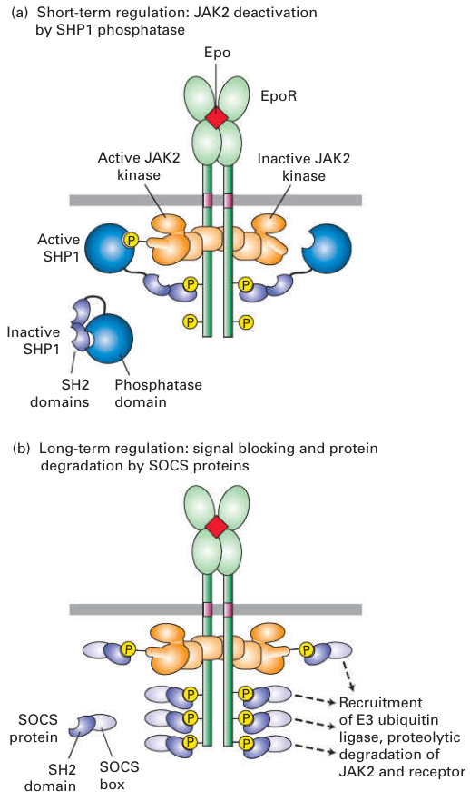
| SH2 domain | SH2结构域 |
| SOCS box | SOCS盒 |
| SOCS protein | SOCS蛋白 |
| Active JAK2 kinase | 活性JAK2激酶 |
| Inactive JAK2 kinase | 无活性JAK2激酶 |
| Inactive SHP1 | 无活性SHP1 |
| Active SHP1 | 活性SHP1 |
| Phosphatase domain | 磷酸酶结构域 |
| Recruitment of E3 ubiquitin ligase | 招募E3泛素连接酶 |
| Proteolytic degradation of JAK2 and receptor | JAK2与受体的蛋白水解降解 |
| EpoR | EpoR |
| Epo | Epo |
| Short-term regulation: JAK2 deactivation by SHP1 phosphatase | 短期调节：SHP1磷酸酶使JAK2失活 |
| Long-term regulation: signal blocking and protein degradation by SOCS proteins | 长期调节：SOCS蛋白阻断信号并降解蛋白质 |
（见第3章），从而永久关闭所有由JAK2介导的信号通路，直到新的受体和JAK2蛋白能够被合成。蛋白酶体抑制剂会延长JAK2信号转导这一观察结果支持了这一机制。一种SOCS蛋白——SOCS-1，还能结合被激活的JAK2激酶激活环中的关键磷酸酪氨酸，从而抑制其催化活性。
用培养的哺乳动物细胞进行的研究表明，属于细胞因子受体家族的生长激素受体受另一种SOCS蛋白——SOCS-2的下调。引人注目的是，缺乏SOCS-2的小鼠比野生型同类长得明显更大；这些小鼠有较长的骨骼，并且大多数器官按比例增大。因此，SOCS蛋白在调控来自促红细胞生成素、生长激素和其他细胞因子受体的胞内信号传导中，起着必不可少的负向作用。
- 有两类受体激活酪氨酸激酶：(1) 受体酪氨酸激酶（RTK），其激酶是受体的固有组成部分；(2) 细胞因子受体，其激酶紧密结合在受体的胞质结构域上。来自受体酪氨酸激酶和细胞因子受体的信号激活相似的下游信号通路（见图16-6）。
- 细胞因子在发育中发挥众多作用。促红细胞生成素是由肾细胞分泌的一种细胞因子，它促进骨髓中红系祖细胞的增殖与分化（见图16-7），以增加血液中成熟红细胞的数量。
- GH、催乳素、Epo和G-CSF等细胞因子具有非常相似的三级结构，它们的受体也是如此。这些及相关细胞因子在细胞表面形成1个细胞因子:2个受体的复合物（见图16-8和图16-9）。
- 细胞因子受体的胞质结构域与一个JAK蛋白酪氨酸激酶紧密结合，后者在细胞因子结合和受体二聚化后被激活，并磷酸化受体中的酪氨酸残基（见图16-10）。
- 在RTK和细胞因子受体中，含磷酸酪氨酸残基的短氨基酸序列会被带有保守SH2结构域的信号转导蛋白结合。磷酸化的酪氨酸周围的氨基酸序列决定哪个SH2结构域会与它结合（见图16-11）。这类蛋白质-蛋白质相互作用在许多信号通路中都很重要（见图16-12）。
- JAK/STAT通路作用于所有细胞因子受体和某些RTK的下游。结合到受体上磷酸酪氨酸的STAT单体被与受体结合的JAK磷酸化，然后二聚化并移动到细胞核，在那里激活转录（见图16-12）。
- 来自细胞因子受体的信号由磷酸酪氨酸磷酸酶SHP1和若干SOCS蛋白终止（见图16-13）。
16.3 受体酪氨酸激酶
激活受体酪氨酸激酶的信号分子是可溶性或膜结合的肽类或蛋白质激素，其中包括许多最初被鉴定为特定类型细胞生长因子的分子。这些RTK配体中的许多，如神经生长因子（NGF）、血小板衍生生长因子（PDGF）、成纤维细胞生长因子（FGF），
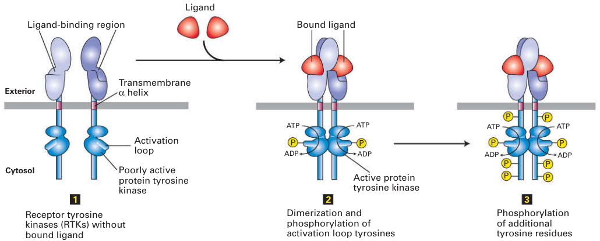
| Receptor tyrosine kinases without bound ligand | 未结合配体的受体酪氨酸激酶 |
| Poorly active protein tyrosine kinase | 活性很低的蛋白质酪氨酸激酶 |
| Active protein tyrosine kinase | 有活性的蛋白质酪氨酸激酶 |
| Transmembrane helix | 跨膜螺旋 |
| Ligand-binding region | 配体结合区 |
| Bound ligand | 结合的配体 |
| Ligand | 配体 |
| Exterior | 外侧 |
| Cytosol | 胞质溶胶 |
| Activation loop | 激活环 |
| Phosphorylation of additional tyrosine residues | 其他酪氨酸残基的磷酸化 |
| ATP | ATP |
| ADP | ADP |
和表皮生长因子（EGF），可刺激特定类型细胞的增殖与分化。另一些配体，如胰岛素，则调节控制肝脏、肌肉和脂肪（adipose）细胞中糖和脂质代谢的多个基因的表达。许多RTK及其配体是在研究人类癌症时被鉴定出来的，这些癌症与突变形式的生长因子受体有关，这类受体即使在缺乏生长因子时也能刺激增殖。该突变"诱使"受体表现得仿佛配体始终存在，因此受体持续处于活性状态（组成型活性；见第24章）。其他RTK则是在分析导致秀丽隐杆线虫（C. elegans）、果蝇和小鼠中特定细胞类型分化受阻的发育突变时被发现的。
配体结合促进RTK二聚化并导致其内在酪氨酸激酶被激活
所有RTK都有三个基本组成部分：一个含配体结合位点的胞外结构域、一条单一的疏水性跨膜α螺旋，以及一个包含具有蛋白质酪氨酸激酶活性之结构域的胞质片段（图16-14）。大多数RTK是单体，配体与胞外结构域的结合诱导受体二聚体的形成。与细胞因子受体一样，功能性二聚体的形成是所有RTK激活的必要步骤。
RTK的激活可总结如下：在静息、未受刺激（未结合配体）的状态下，RTK的内在激酶活性非常低（图16-14，第1步）。与包括前面讨论过的JAK激酶在内的大多数其他激酶一样，RTK含有一个可弯曲的结构域，称为激活
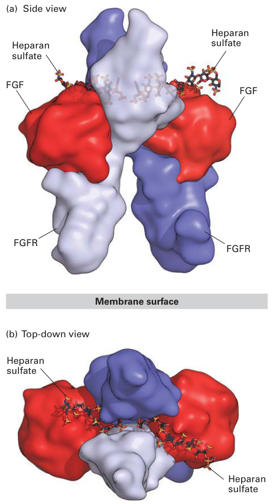
| Heparan sulfate | 硫酸乙酰肝素 |
| FGF | FGF |
| FGFR | FGFR |
| Membrane surface | 膜表面 |
| Side view | 侧视图 |
| Top-down view | 俯视图 |
环。在静息状态下，激活环未被磷酸化，并采取一种阻断激酶活性的构象。在某些受体（例如胰岛素受体）中，它阻止ATP的结合。在另一些受体（例如FGF受体）中，它阻止
底物的结合。配体的结合引起构象变化，促进RTK胞外结构域的二聚化，从而使它们的跨膜片段——因而它们的胞质结构域——彼此靠近。与JAK激酶的激活方式相似，每个亚基中的激酶随后磷酸化另一个亚基激活环中的一个特定酪氨酸残基（图16-14，第2步）。这种磷酸化导致激活环发生构象变化，通过降低ATP或待磷酸化底物的KD而解除对激酶活性的阻断。由此增强的激酶活性随后可磷酸化受体胞质结构域中的其他酪氨酸残基（图16-14，第3步），这些磷酸酪氨酸残基可结合信号蛋白的SH2结构域或其他结构域，同时也能磷酸化其他靶蛋白，从而引发胞内信号传导。
尽管二聚化是所有RTK激活的必要步骤，但功能性二聚体可以通过多种方式形成。许多受体的二聚化方式与成纤维细胞生长因子（FGF）受体相似（图16-15），其中两个FGF分子各同时结合两个受体亚基的胞外结构域，从而使二聚体稳定。FGF还能与硫酸乙酰肝素紧密结合，后者是一些细胞表面蛋白和细胞外基质中带负电荷的多糖组分（见第20章）；这种结合增强了配体结合以及二聚化受体-配体复合物的形成（见图16-15）。硫酸乙酰肝素的参与对于高效的受体激活是必需的。
还有一些RTK，如胰岛素受体，即使在无激素的情况下也形成二硫键连接的二聚体；配体与这类RTK的结合会以某种方式改变其构象，使受体激酶被激活。最后一个例子凸显了这样一个事实：仅仅让两个受体单体紧密接触并不足以激活受体——受体二聚化必须伴随恰当的构象变化，才能导致酪氨酸激酶激活。一旦RTK被锁定在功能性二聚体状态，其相关的酪氨酸激酶就被激活。
表皮生长因子受体的同源寡聚体和异源寡聚体结合表皮生长因子家族的成员
有四种RTK参与由表皮生长因子（EGF）信号分子家族的众多成员所介导的信号传导；这些受体被称为Erb-B1、2、3和4。在人类中，这些受体也分别被称为HER（人表皮生长因子受体）1、2、3和4。表皮生长因子及其受体已被深入研究，因为它们涉及许多人类疾病；针对在肿瘤中过量产生或带有激活性突变的受体的药物已用于治疗许多癌症，正如我们将在第24章了解到的。
在静息状态下，大多数EGF受体分子是单体。HER1（Erb-B1）直接结合EGF以及EGF家族的其他六个成员：
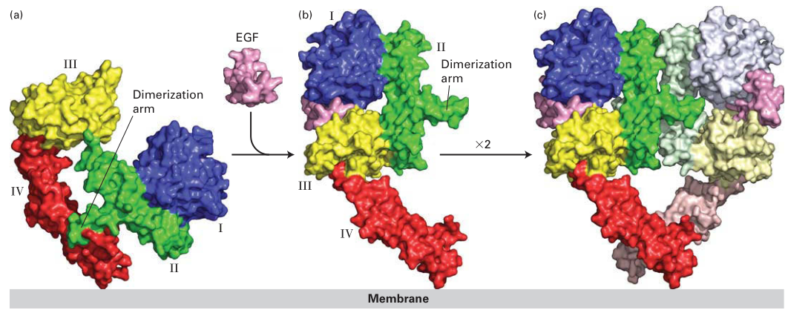
| EGF | EGF |
| Dimerization arm | 二聚化臂 |
| Membrane | 膜 |
肝素结合型EGF（HB-EGF）、转化生长因子α（TGF-α）、双调蛋白（AREG）、表皮调节素（EREG）、epigen（EPGN）和betacellulin（BTC）。上述任一配体的结合都会导致HER1胞外结构域同源二聚化（图16-16）。在静息的单体状态下，受体结构域II片段中称为二聚化臂的β发夹与结构域IV形成紧密的分子内相互作用。EGF的结合诱导HER1胞外结构域发生剧烈的构象变化，受体"钳住"激素，使二聚化臂暴露出来。随后，两个活化受体的二聚化臂紧密结合在一起，形成稳定的受体同源二聚体。与FGF受体（见图16-15）不同，配体并不直接稳定活性的同源二聚体。
HER3和HER4也结合EGF家族的成员。神经调节蛋白1和2（NRG1和NRG2）既结合HER3也结合HER4；HB-EGF、NRG3和NRG4仅结合HER4。HER4与HER1一样，在结合生长因子后可形成稳定的同源二聚体，但HER3不能。那么HER3如何发出信号？答案涉及HER2，它不结合配体。相反，HER2以与结合了EGF的HER1非常相似的构象存在于质膜上；HER2的二聚化臂向外突出，能够结合配体结合的HER3以及配体结合的HER1和HER4，形成异源二聚体（图16-17）。HER2只能通过与配体结合的HER1、HER3或HER4形成异源复合物来发出信号；因此它促进了所有EGF家族成员的信号传导（见图16-17）。尽管HER3缺乏功能性激酶结构域，它仍能参与信号传导；结合配体后，它与HER2形成异源二聚体，并
被HER2激酶磷酸化，从而激活下游信号转导通路。
因此，细胞表面HER2的增加使细胞对许多EGF家族成员的信号更加敏感，因为配体结合后信号性异源二聚体形成的速率将得到提高。正如我们将在第24章了解到的，对HER的了解有助于解释为什么一种常见形式的乳腺癌——其中HER2基因被扩增且HER2过量表达——如此危险，并已促成重要的药物疗法。HER2的过量表达使肿瘤细胞对低水平EGF家族任一成员的生长刺激敏感——而这些水平原本不会刺激HER2水平正常的细胞增殖。
EGF受体的激活导致形成不对称的有活性激酶二聚体
与大多数受体酪氨酸激酶的情况一样，FGF受体中的激酶结构域通过激活环中一个酪氨酸的磷酸化而被激活。相比之下，EGF受体激酶的激活不涉及激活环的磷酸化；其激活机制直到最近才通过对受体胞质结构域在活性和非活性两种状态下的结构研究而被揭示。激酶结构域通过一段所谓的近膜片段与跨膜片段隔开，该片段在图16-18中显示为蓝色。在非活性的单体状态下，激活环定位于激酶的活性位点，阻断其活性；激酶以此方式维持在"关"状态（图16-18，左）。受体二聚化产生一个不对称的激酶二聚体
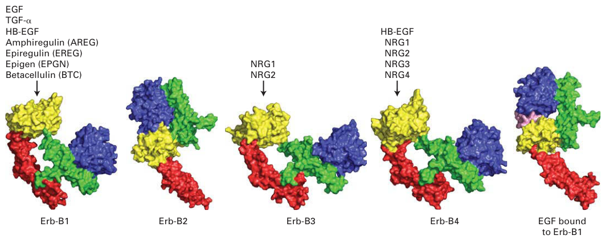
| Erb-B1 | Erb-B1 |
| Erb-B2 | Erb-B2 |
| Erb-B3 | Erb-B3 |
| Erb-B4 | Erb-B4 |
| EGF bound to Erb-B1 | 结合于Erb-B1的EGF |
| EGF | EGF |
| HB-EGF | 肝素结合型EGF（HB-EGF） |
| Amphiregulin (AREG) | 双调蛋白（AREG） |
| Epiregulin (EREG) | 表皮调节素（EREG） |
| Epigen (EPGN) | epigen（EPGN） |
| Betacellulin (BTC) | betacellulin（BTC） |
| NRG1 | 神经调节蛋白1（NRG1） |
| NRG2 | 神经调节蛋白2（NRG2） |
| NRG3 | 神经调节蛋白3（NRG3） |
| NRG4 | 神经调节蛋白4（NRG4） |
（图16-18，右），其中一个激酶结构域——称为供体——结合第二个激酶结构域——即接受体。这种结合改变了接受体顶部叶片的构象，使激活环移出激酶活性位点并激活该激酶。
因此，进化围绕这一简单的配体-RTK机制的主题产生了许多变体：RTK通过二聚化被激活，但不同受体采用不同的机制来实现这一点。类似地，激酶通过激活环离开
激酶催化位点而被激活，但不同受体采用不同的机制来完成这一任务。RTK信号的下调也很常见，同样也进化出了不同的机制来完成这一任务。
多种机制下调来自RTK的信号
在本章前面，我们讨论了细胞因子受体信号被下调的两种机制——即
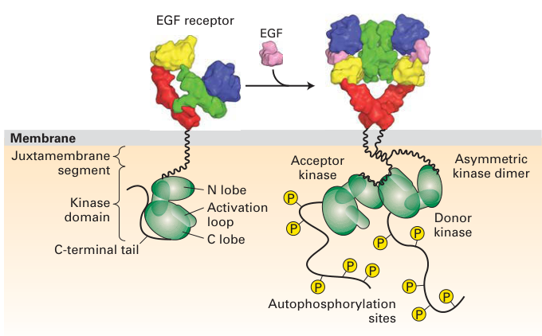
| EGF receptor | EGF受体 |
| Asymmetric kinase dimer | 不对称激酶二聚体 |
| Donor kinase | 供体激酶 |
| Acceptor kinase | 接受体激酶 |
| C lobe | C叶片 |
| N lobe | N叶片 |
| Activation loop | 激活环 |
| C-terminal tail | C端尾部 |
| Juxtamembrane segment | 近膜片段 |
| Kinase domain | 激酶结构域 |
| Membrane | 膜 |
| Autophosphorylation sites | 自磷酸化位点 |
| EGF | EGF |
涉及磷酸酪氨酸磷酸酶和SOCS蛋白的那些机制（见图16-13）。这些蛋白也被用于抑制某些RTK的信号传导，但另外两种机制——受体介导的内吞以及在溶酶体中的降解——更为常见。
受体介导的内吞 用配体长时间处理细胞常会减少可用的细胞表面受体数量，以致细胞对给定浓度配体的反应不如加入配体之前那样强。这种脱敏反应有助于防止受体活性不适当地延长。例如，在缺乏EGF的情况下，细胞表面HER1受体相对长寿，平均半衰期为10–15小时。未结合的受体通过网格蛋白有被小窝以相对缓慢的速率内吞进入内体，平均每30分钟一次，并且往往迅速返回质膜，因此总的表面受体数量几乎没有减少。在结合EGF配体之后，HER1的内吞速率增加约十倍，且只有一部分内化的受体返回质膜；其余的在溶酶体中被降解。每当一个HER1–EGF复合物通过受体介导的内吞过程被内化时（见图14-29），该受体被降解的概率约为20%~80%，具体取决于细胞类型。将成纤维细胞暴露于高水平EGF数小时会诱导多轮内吞，导致大多数细胞表面EGF受体分子被降解，从而降低细胞对EGF的敏感性。这样，用给定浓度的EGF长时间处理会使细胞对该水平的激素脱敏，不过如果EGF水平升高，细胞仍可能作出反应。
缺乏激酶活性的HER1突变体在配体存在时不会发生加速的内吞。很可能，正常HER1中配体诱导的激酶活性激活会引起胞质尾部构象变化，暴露出一个分选基序，该基序促进受体被招募到网格蛋白有被小窝中，以及随后受体-配体复合物的内化。尽管对突变HER1胞质结构域进行了广泛研究，这些"分选基序"的身份仍有争议，而且很可能有多个基序共同作用以增强内吞。有趣的是，内化的受体在降解之前可以继续从内体或其他胞内区室发出信号，这一点由它们与GRB2和Sos等信号蛋白的结合所证明，这些蛋白将在下一节讨论。
溶酶体降解 若干过程影响表面受体是回收至质膜还是在溶酶体中降解；其中之一是受到小蛋白泛素的共价修饰（见第3章）。HER1胞质结构域的单泛素化（在蛋白质的某个特定赖氨酸上添加单个泛素）与HER1降解之间有很强的相关性。这种单泛素化也发生在其他配体激活的RTK上，由c-Cbl酶介导。这种酶是一种E3泛素连接酶（见图3-31），含有一个EGF
受体结合结构域，它直接结合磷酸化的EGF受体，以及一个RING指结构域，后者招募泛素结合酶并介导泛素向受体的转移。泛素充当受体上的一个"标签"，刺激其从内体进入最终在溶酶体中被降解的多囊内体（见图14-33）。c-Cbl在EGF受体转运中的作用来自对秀丽隐杆线虫的遗传学研究，这些研究证实c-Cbl负向调节线虫EGF受体（Let-23）的功能，很可能是通过诱导其降解。类似地，缺乏c-Cbl的敲除小鼠表现出乳腺上皮过度增殖，这与c-Cbl作为EGF信号负调节因子的作用一致。
用突变细胞系进行的实验证明，RTK的内化在调节细胞对EGF和其他生长因子的反应中发挥重要作用。例如，HER1 EGF受体中一个使其无法被掺入有被小窝的突变，使它不受配体诱导内吞的影响。结果，这一突变导致细胞上EGF受体数量大幅升高，从而使细胞作为促有丝分裂信号对EGF的敏感性增强。这类突变细胞容易发生EGF诱导的向肿瘤细胞的转化（见第24章）。有趣的是，其他EGF家族受体——HER2、HER3和HER4——不发生配体诱导的内化，这一观察强调了每种受体是如何进化出各自恰当的调控方式的。
- 受体酪氨酸激酶结合肽类和信号蛋白，如生长因子和胰岛素，它们可以以预先形成的二聚体形式存在，也可以在结合配体的过程中二聚化。配体结合触发功能性二聚体受体的形成，这是受体相关激酶激活的必要步骤，不同受体以不同方式完成这一功能（见图16-14、图16-15和图16-16）。
- 许多RTK的激活导致作为胞质结构域固有组成部分的蛋白质酪氨酸激酶中激活环的磷酸化，从而增强其催化活性（见图16-14）。随后，被激活的激酶磷酸化受体胞质结构域以及其他蛋白质底物中的酪氨酸残基。
- 人类表达许多RTK，其中四种（HER1–HER4）构成了表皮生长因子受体家族，该家族介导来自表皮生长因子信号分子家族不同成员的信号（见图16-17）。其中一种受体HER2不结合配体；它与另外三种HER蛋白中结合了配体的单体形成有活性的异源二聚体。HER2的过量表达与许多乳腺癌有关。
- 受体-激素复合物的内吞及其在溶酶体中的降解，是减少细胞表面受体酪氨酸激酶和细胞因子受体数量、从而降低细胞对许多肽类激素敏感性的一种主要方式。
16.4 Ras/MAP激酶通路
几乎所有受体酪氨酸激酶和细胞因子受体都激活Ras/MAP激酶通路（见图16-6b）。单体Ras蛋白属于胞内开关蛋白的GTP酶超家族（见图15-5）。活化的Ras在质膜的胞质面促进形成一种信号转导复合物，其中含有三种依次起作用的蛋白激酶。这一激酶级联最终激活MAP激酶家族的某些成员，这些成员能转位进入细胞核并磷酸化许多不同的蛋白质。MAP激酶的靶蛋白中包括转录因子，它们调控在细胞周期和细胞分化中具有重要作用的蛋白质的表达。重要的是，不同的细胞表面受体能激活不同的信号通路，从而激活MAP激酶家族的不同成员。
由于在几乎所有类型的人类肿瘤中都能发现RTK、Ras或MAP激酶级联中某个蛋白发生激活突变，因此RTK/Ras/MAP激酶通路得到了广泛研究，人们对这条通路各组分已了解得相当清楚（见第24章）。我们先回顾Ras如何在活性状态与非活性状态之间循环，然后描述Ras如何被激活并把信号传递给MAP激酶通路。最后，我们考察近来的研究，它们表明酵母细胞和高等真核细胞都含有多条MAP激酶通路；我们还将讨论细胞如何通过支架蛋白使不同的MAP激酶通路彼此隔开。
Ras是一种GTP酶开关蛋白，作用于大多数RTK和细胞因子受体的下游
与第15章讨论的三聚体G蛋白中的Gα亚基一样，单体Ras蛋白也是"开关"蛋白，在结合GTP的活性"开"状态与结合GDP的非活性"关"状态之间交替（复习这一概念见图15-4和图15-5）。与三聚体G蛋白不同，Ras并不直接与细胞表面受体相连。与三聚体G蛋白一样，Ras的活性也受其他几种蛋白质的调节。鸟嘌呤核苷酸交换因子（GEF）结合到Ras∙GDP复合物上，促使结合的GDP解离，从而加速Ras的活化（见图15-4）。与其他G蛋白一样，GTP会自发地结合到"空载"的Ras分子上，形成有活性的Ras∙GTP。
Ras（约170个氨基酸）比Gα蛋白（约300个氨基酸）小，但这两类蛋白质的GTP结合结构域
具有相似的结构（复习Ras的结构见图15-5）。结合的GTP水解为GDP即使Ras失活。结构与生化研究表明，Gα蛋白含有一个GTP酶激活蛋白（GAP）结构域，能提高GTP水解的固有速率。由于Ras中不存在这一结构域，因此该蛋白的GTP水解固有速率较慢。所以，与Ras结合的GTP的平均寿命约为1分钟，远长于Gα∙GTP复合物的平均寿命。由于Ras∙GTP的固有GTP酶活性低于Gα∙GTP，Ras∙GTP需要另一种蛋白质——GTP酶激活蛋白（GAP）——的协助才能失活。GAP与Ras∙GTP的结合使Ras的固有GTP酶活性提高一百倍以上；GTP水解为GDP和Pi的实际反应由Ras和GAP双方的氨基酸共同催化。特别是，GAP的一个精氨酸侧链插入Ras的活性位点，稳定了水解反应的中间体。
哺乳动物Ras蛋白已被研究得非常详尽，因为突变的Ras蛋白与许多类型的人类癌症相关。这些突变蛋白能结合GTP但不能水解GTP，永久处于"开"状态，并促进肿瘤性转化（见第24章）。对Ras-GAP复合物三维结构的测定以及对Ras突变体的检验，解释了这样一个令人困惑的观察结果：大多数具有致癌性、组成性活性的Ras蛋白（RasD）都在第12位含有突变。把正常的甘氨酸12替换为任何其他氨基酸（脯氨酸除外）都会阻断GAP蛋白的功能性结合，实质上把Ras"锁"在活性GTP结合态。■
Ras在一条共同信号通路中作用于RTK下游的最初迹象，来自这样一些实验：用能激活RTK的两种蛋白激素——PDGF和EGF——的混合物处理培养的成纤维细胞，诱导其增殖。向这些细胞中显微注射抗Ras抗体阻断了细胞增殖。反过来，注射RasD（一种组成性活性的突变Ras蛋白，水解GTP效率极低因而能以活性状态持续存在）可使细胞在缺乏生长因子的情况下增殖。这些结果与采用图15-11详述的pull-down检测法的研究一致：向成纤维细胞加入FGF会使处于GTP结合活性形式的Ras比例迅速升高。然而，正如我们将看到的，活化的RTK（或细胞因子受体）不能直接激活Ras。相反，必须先有其他蛋白质被招募到活化受体上，在那里充当接头。
果蝇的遗传学研究鉴定了Ras/MAP激酶通路中关键的信号转导蛋白
我们对Ras/MAP激酶通路中所涉及蛋白质的认识，主要来自对突变果蝇（Drosophila）和线虫（C. elegans）的遗传学分析，这些突变体
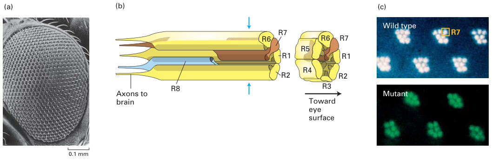
| Wild type | 野生型 |
| Mutant | 突变体 |
| sevenless | sevenless |
| ommatidia | 小眼 |
| R cells | R细胞 |
| R1–R8 | R1–R8（光感受器编号） |
| Axons to brain | 通往脑的轴突 |
| Toward eye surface | 朝向眼表面 |
这些突变体在特定的分化阶段被阻断。为说明这种实验方法的威力，让我们考察果蝇复眼中某一特定类型细胞的发育。
果蝇的复眼由约800个小眼（ommatidia）组成（图16-19a）。每个小眼由二十二个细胞构成，其中八个是称为小网膜细胞（retinula）或称R细胞的光敏神经元，编号为R1–R8（图16-19b）。一种称为Sevenless（Sev）的RTK特异性地在R7细胞中表达，并且是R7细胞发育所必需的；Sev不为任何其他已知功能所需。在sevenless（sev）基因突变的果蝇中，每个小眼中的R7细胞不能形成（图16-19c，下）。但由于R7光感受器只在果蝇感受紫外光时才为果蝇所需，因此很容易分离到缺乏功能性R7细胞而其他方面正常的突变体。所以，果蝇R7细胞是研究RTK下游信号转导的理想遗传学系统。
在每个小眼的发育过程中，一种称为Boss（Bride of Sevenless）的蛋白质表达在R8细胞表面。这种膜锚定蛋白的胞外结构域是相邻R7前体细胞表面Sev RTK的配体，向该前体细胞发出信号使其发育为光敏神经元（图16-20a）。在不表达功能性Boss蛋白或Sev RTK的突变果蝇中，Boss与Sev蛋白之间不能发生相互作用，因而没有R7细胞发育（图16-20b）；这一结果正是R7细胞中该RTK得名"Sevenless"的由来。
为了鉴定Sev RTK通路中的胞内信号转导蛋白，研究者培育出表达温度敏感型Sev蛋白的突变果蝇。当这些果蝇保持在许可温度时，它们所有的小眼都含有R7细胞；当保持在非许可温度时，则没有R7细胞发育。然而在某个特定的中间温度下，恰好有足够量的Sev RTK发挥功能，足以介导正常的R7发育。
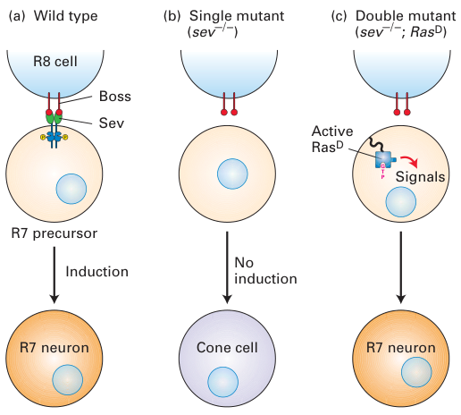
| Boss | Boss |
| Sev | Sev（Sevenless） |
| Wild type | 野生型 |
| Single mutant | 单突变体 |
| Double mutant | 双突变体 |
| R7 precursor | R7前体细胞 |
| R8 cell | R8细胞 |
| R7 neuron | R7神经元 |
| Cone cell | 锥形细胞 |
| Active RasD | 活性RasD |
| No induction | 无诱导 |
| Induction | 诱导 |
| Signals | 信号 |
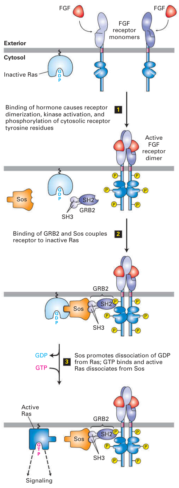
| Inactive Ras | 非活性Ras |
| Active Ras | 活性Ras |
| Sos | Sos |
| GRB2 | GRB2 |
| SH2 | SH2结构域 |
| SH3 | SH3结构域 |
| FGF | 成纤维细胞生长因子（FGF） |
| FGF receptor monomer | FGF受体单体 |
| Active FGF receptor dimer | 活化的FGF受体二聚体 |
| Cytosol | 胞质 |
| Exterior | 外侧 |
| Signaling | 信号传导 |
| GDP | GDP |
| GTP | GTP |
研究者推断，在这个中间温度下，如果通路中另一种蛋白质的水平降低，从而使整条通路的活性降到形成R7细胞所需水平以下，信号通路就会变得有缺陷（因而不会有R7细胞发育）。影响这种蛋白质的隐性突变就会产生这种效应，因为在果蝇这样的二倍体生物中，含有一个野生型等位基因和一个突变等位基因的杂合子只产生正常量一半的基因产物；因此，即使这种隐性突变发生在必需基因中，生物体通常仍能存活。然而，如果一只果蝇在sev基因中携带温度敏感突变，同时又带有影响该信号通路中另一种蛋白质的第二个突变，那么在中间温度下就应缺少R7细胞。
通过这种筛选，研究人员鉴定出三个编码Sev通路中重要蛋白质的基因：一个含SH2的蛋白，与人GRB2（growth factor receptor–bound protein 2，生长因子受体结合蛋白2）的氨基酸序列同一性为64%；一个称为Sos（Son of Sevenless）的GEF，与小鼠对应物的同一性为45%；以及一个Ras蛋白，与哺乳动物对应物的同一性为80%。后来发现，这三种蛋白质还参与由其他RTK结合配体所启动的其他信号通路，并且在发育中的果蝇里于不同时间和部位发挥作用。
在随后的研究中，研究人员把突变的rasD基因导入sevenless基因突变的果蝇胚胎中。如前所述，rasD基因编码一种组成性活性的Ras蛋白，即使在缺少激素信号时也以活性GTP结合形式存在。虽然这些双突变体（sev−/−; rasD）中不表达功能性Sev RTK，R7细胞却正常形成，表明有活化的Ras蛋白存在就足以诱导R7细胞发育（图16-20c）。这一发现与前述培养成纤维细胞的实验结果一致，支持这样的结论：Ras的活化是大多数（即便不是全部）RTK和细胞因子受体的胞内信号传导中的一个主要步骤。
受体酪氨酸激酶通过接头蛋白与Ras相连
为了使活化的RTK和细胞因子受体激活Ras，必须先招募两种胞质蛋白——GRB2和Sos——在受体与Ras之间提供连接（图16-21）。GRB2是一种接头蛋白，这意味着
它没有酶活性，只是在另外两种蛋白质之间充当连接或支架——在这里就是在活化受体与Sos之间。Sos是一种鸟嘌呤核苷酸交换蛋白（GEF），催化非活性的GDP结合态Ras转变为活性的GTP结合形式。
GRB2之所以能充当接头蛋白，是因为它有一个SH2结构域，可与活化RTK（或细胞因子受体）胞质结构域中特定的磷酸酪氨酸残基结合。除SH2结构域外，GRB2接头蛋白还含有两个SH3结构域，它们与Sos结合（见图16-21）。与结合磷酸酪氨酸的SH2结构域一样，SH3结构域也存在于大量参与胞内信号传导的蛋白质中。虽然各种SH3结构域的三维结构相似，但它们的具体氨基酸序列各不相同。GRB2中的SH3结构域选择性地结合Sos中富含脯氨酸的序列；其他蛋白质中不同的SH3结构域则结合与Sos中不同的富含脯氨酸序列。
在接头蛋白（如GRB2）的SH3结构域与另一蛋白质（如Sos）的富含脯氨酸序列之间的相互作用中，脯氨酸残基起两种作用。第一，富含脯氨酸序列采取伸展构象，能与SH3结构域广泛接触，从而促进相互作用。第二，其中一部分脯氨酸嵌入SH3结构域表面的结合"口袋"（图16-22）。若干非脯氨酸残基也与SH3结构域相互作用，并决定结合特异性。因此，蛋白质与SH3及SH2结构域的结合遵循相似的策略：某些残基提供结合所需的关键结构基序，相邻残基则赋予结合特异性。
Sos与非活性Ras的结合引起构象变化，触发GTP置换GDP
RTK（如FGF受体）活化后，在质膜的胞质面形成含有活化受体、GRB2和Sos的复合物（见图16-21）。复合物的形成取决于GRB2能否同时结合受体和Sos。因此，受体活化导致Sos从胞质重新定位到膜上，使Sos靠近其底物Ras∙GDP——后者已通过共价连接的脂质锚定在质膜上。Sos与Ras∙GDP的结合引起Ras的switch I和switch II片段发生构象变化，从而打开GDP的结合口袋，使GDP扩散出去（图16-23）。换言之，Sos充当Ras的GEF。GTP与Ras的结合则诱导switch I和switch II形成特定构象，使Ras∙GTP能够激活Ras/MAP激酶通路中的下一个蛋白。
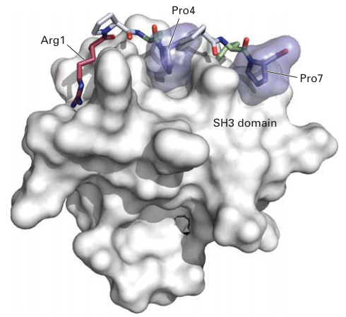
| Arg1 | Arg1（精氨酸） |
| Pro4 | Pro4（脯氨酸） |
| Pro7 | Pro7（脯氨酸） |
| SH3 domain | SH3结构域 |
信号从活化的Ras传向以MAP激酶告终的蛋白激酶级联
在酵母、C. elegans、果蝇和哺乳动物中进行的生化与遗传研究表明，Ras下游是一条高度保守的、由三种蛋白激酶组成的级联，最终汇聚到MAP激酶。虽然在所有细胞中激酶级联的活化并不产生相同的生物学结果，但一组共同且依次起作用的激酶定义了Ras/MAP激酶通路，如图16-24所示：Ras → Raf → MEK → MAP激酶。
Ras通过GDP与GTP的交换而被激活（步骤1）。活化的Ras∙GTP结合到Raf的N端调节结构域上，从而激活其激酶活性，Raf是一种丝氨酸/苏氨酸（而非酪氨酸）激酶（步骤2）。在未受刺激的细胞中，Raf被磷酸化并由14-3-3蛋白以非活性状态结合，14-3-3能结合许多重要信号蛋白中的磷酸丝氨酸残基。Ras∙GTP水解为Ras∙GDP使活化的Raf从其与14-3-3的复合物中释放（步骤3），随后现在有活性的Raf磷酸化并由此激活MEK（步骤4）。MEK是一种双重特异性蛋白激酶，能同时磷酸化其靶蛋白的酪氨酸和丝氨酸/苏氨酸残基。活化的MEK主要磷酸化并激活MAP激酶，后者也是一种丝氨酸/苏氨酸激酶，又称ERK（步骤5）。在不同的细胞中，MAP激酶磷酸化许多不同的蛋白质，包括介导细胞应答的核转录因子（步骤6）。
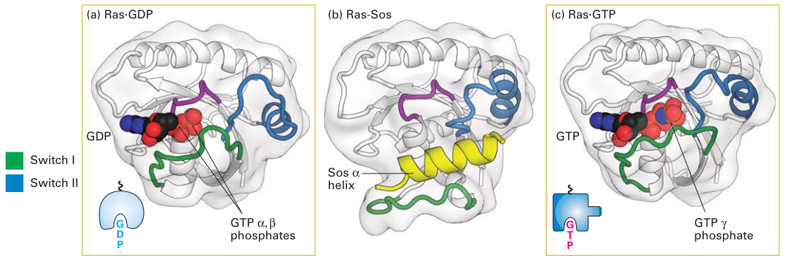
| Ras∙GDP | Ras∙GDP |
| Ras∙GTP | Ras∙GTP |
| Ras-Sos | Ras-Sos复合物 |
| Sos | Sos |
| Switch I | switch I |
| Switch II | switch II |
| α helix | α螺旋 |
| γ phosphate | γ磷酸基 |
| β phosphate | β磷酸基 |
| P loop | P loop |
| effectors | 效应物 |
| GDP | GDP |
| GTP | GTP |
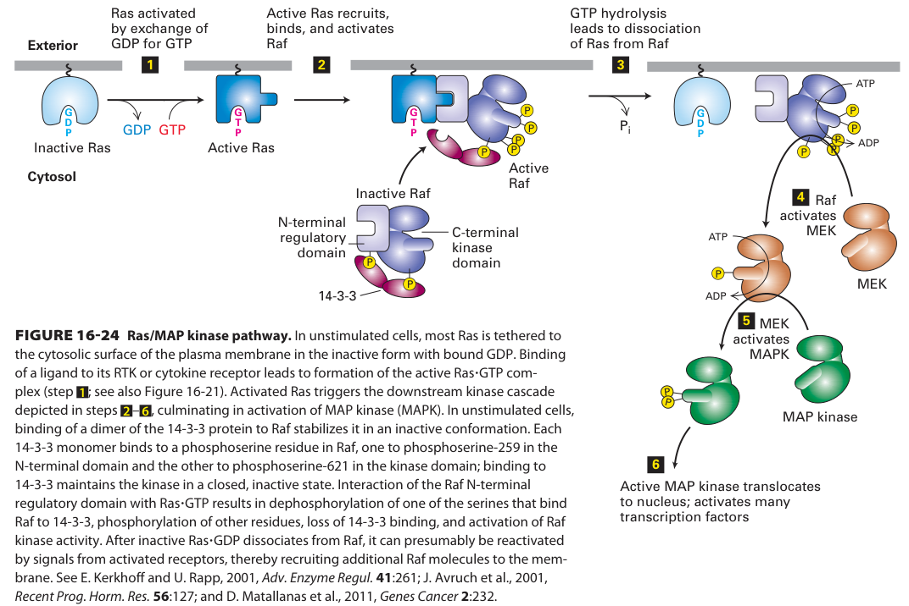
| Inactive Ras | 非活性Ras |
| Active Ras | 活性Ras |
| Inactive Raf | 非活性Raf |
| Active Raf | 活性Raf |
| N-terminal regulatory domain | N端调节结构域 |
| C-terminal kinase domain | C端激酶结构域 |
| MEK | MEK |
| MAP kinase | MAP激酶 |
| 14-3-3 | 14-3-3 |
| ATP | ATP |
| ADP | ADP |
| GDP | GDP |
| GTP | GTP |
| Cytosol | 胞质 |
| Exterior | 外侧 |
有几类实验证明Raf、MEK和MAP激酶位于Ras下游，并揭示了这些蛋白在通路中的先后顺序。例如，表达无功能突变Raf蛋白的培养哺乳动物细胞，不能被组成性活性的RasD蛋白刺激而发生失控增殖。这一发现确立了Raf与Ras蛋白之间的联系，并表明在信号通路中Raf位于Ras下游。体外结合研究进一步表明，纯化的Ras∙GTP蛋白直接结合Raf的N端调节结构域并激活其催化活性。
MAP激酶因Ras活化而被激活这一点，在表达组成性活性RasD蛋白的静息培养细胞中得到了证明。在这些细胞中，无需生长促进激素的刺激就能产生活化的MAP激酶。更重要的是，在缺乏功能性Ras或Raf蛋白但表达组成性活性MAP激酶的果蝇突变体发育中的眼里，R7光感受器正常发育。这一发现表明，MAP激酶的活化足以传递通常由配体结合受体酪氨酸激酶（如Sevenless）所启动的增殖或分化信号（见图16-20）。然而生化研究表明，Raf不能直接磷酸化MAP激酶，也不能以其他方式激活其活性。
由Ras∙GTP激活的激酶级联中最后一个环节，来自这样的研究：科学家对培养细胞的提取物进行分级分离，寻找一种能磷酸化MAP激酶、且只存在于受生长因子刺激的细胞中而不存在于未受刺激细胞中的激酶活性。这项工作鉴定出了MEK，这种激酶特异性地磷酸化MAP激酶激活环上的一个苏氨酸和一个酪氨酸残基，从而激活其催化活性。（缩写MEK来自MAP and ERK kinase。）后来的研究表明，MEK结合Raf的C端催化结构域并被Raf丝氨酸/苏氨酸激酶磷酸化；这一磷酸化激活了MEK的催化活性。
因此，Ras的活化诱导出一条包括Raf、MEK和MAP激酶的激酶级联：活化的RTK → Ras → Raf → MEK → MAP激酶。虽然我们在此不加以强调，但这条通路的复杂性因其各组分存在多种同工型而增加。在人类中，有三种RAS、三种Raf、两种MEK和两种ERK蛋白，它们各自的功能既有重叠也有非冗余之处。
约50%的黑色素瘤中存在Raf基因的激活突变，黑色素瘤这种皮肤癌常由暴露于阳光中的紫外线辐射引起。在这些黑色素瘤中，一种特定的突变——第600位缬氨酸被谷氨酸取代——出现在90%以上。这种突变型Raf在缺乏生长因子的情况下刺激细胞中的MEK-ERK信号传导，而突变Raf转基因能在小鼠中诱导黑色素瘤。最近，非常强效且具选择性的Raf抑制剂已进入
临床，并在由这种突变Raf蛋白引起的黑色素瘤患者中产生了极好的疗效。■
MAP激酶的磷酸化导致构象变化，从而增强其催化活性并促进其二聚化
生化与X射线晶体学研究为磷酸化如何激活MAP激酶提供了详细的图景。与JAK激酶和受体酪氨酸激酶一样，在非活性、未磷酸化形式的MAP激酶中，催化位点被激活环阻断（图16-25a）。MEK与MAP激酶的结合使环的结构变得不稳定，导致在非活性构象中被埋藏的酪氨酸185暴露出来。在这个关键酪氨酸被磷酸化之后，MEK再磷酸化相邻的苏氨酸183（图16-25b）。MAP激酶中被磷酸化的酪氨酸残基和苏氨酸残基都与额外的氨基酸相互作用，从而使环区呈现改变后的构象，这又允许ATP结合到催化位点——与所有激酶一样，该位点位于上下两个激酶结构域之间的沟槽中。磷酸酪氨酸残基（pY185）还在把特定底物蛋白结合到MAP激酶表面方面起关键作用。磷酸化不仅促进
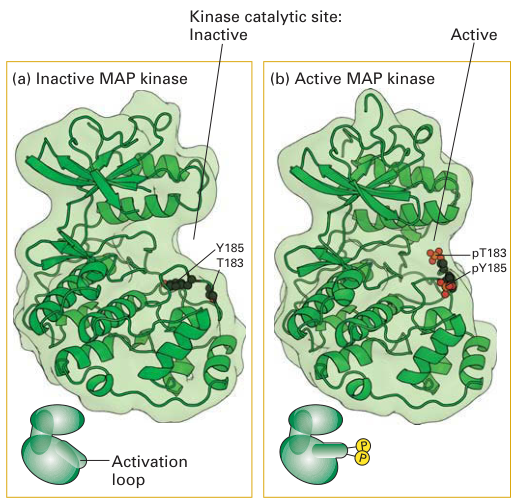
| Inactive MAP kinase | 非活性MAP激酶 |
| Active MAP kinase | 活性MAP激酶 |
| Activation loop | 激活环 |
| Kinase catalytic site | 激酶催化位点 |
| Y185 | Y185 |
| T183 | T183 |
| pY185 | pY185 |
| pT183 | pT183 |
| Inactive | 非活性 |
MAP激酶的催化活性，也促进其二聚化。MAP激酶的二聚体形式被转位到细胞核，在那里调节许多核转录因子的活性。
MAP激酶调节许多控制早期应答基因的转录因子的活性
向静息（不生长）的培养哺乳动物细胞中加入生长因子（如EGF或PDGF），会引起多达一百种不同基因的表达迅速升高。这些基因称为早期应答基因，因为它们在细胞进入S期并复制DNA之前很早就被诱导（见第19章）。一个重要的早期应答基因编码转录因子c-Fos。c-Fos与其他转录因子（如c-Jun）一起，诱导许多基因的表达，这些基因编码细胞通过细胞周期所必需的蛋白质。大多数结合生长因子的RTK都利用MAP激酶通路来激活编码c-Fos之类蛋白的基因，这些蛋白进而推动细胞通过细胞周期。
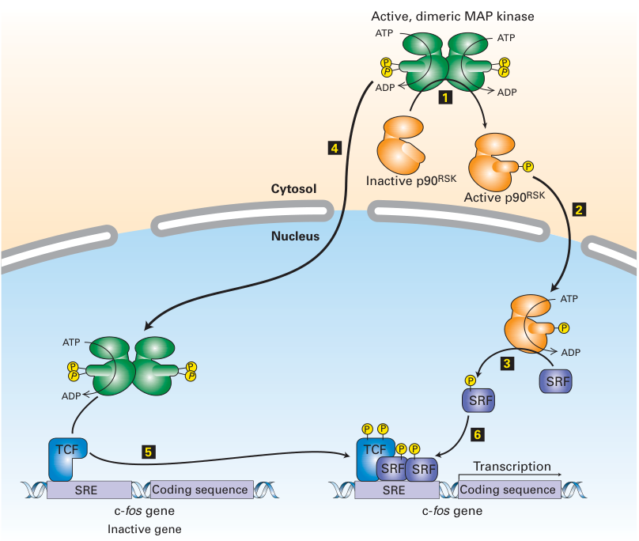
| Cytosol | 胞质 |
| Nucleus | 细胞核 |
| SRE | SRE（血清应答元件） |
| Coding sequence | 编码序列 |
| c-fos gene | c-fos基因 |
| Inactive gene | 非活性基因 |
| Transcription | 转录 |
| TCF | TCF（三元复合物因子） |
| SRF | SRF（血清应答因子） |
| Inactive p90RSK | 非活性p90RSK |
| Active p90RSK | 活性p90RSK |
| Active, dimeric MAP kinase | 活化的二聚体MAP激酶 |
| ATP | ATP |
| ADP | ADP |
调控c-fos基因的增强子含有一个血清应答元件（SRE），它因能被血清中的许多生长因子激活而得名。这个复杂的增强子含有可结合多种转录因子的DNA序列。如图16-26所示，活化的（磷酸化的）二聚体MAP激酶通过直接激活一种转录因子——三元复合物因子（TCF），并间接激活另一种转录因子——血清应答因子（SRF），来诱导c-fos基因的转录。在胞质中，MAP激酶磷酸化并激活一种称为p90RSK的激酶，后者转位到细胞核，在那里磷酸化SRF中特定的丝氨酸。转位到细胞核后，MAP激酶直接磷酸化TCF中特定的丝氨酸。磷酸化的TCF与两分子磷酸化的SRF结合，形成一个有活性的三聚体因子，激活c-fos基因的转录。
与只磷酸化MAP激酶级联中少数几个靶激酶的Raf和MEK激酶不同，已知MAP激酶能磷酸化细胞核和胞质中175种以上的蛋白质。许多MAP激酶的靶蛋白是基因表达的调节因子，而不同的MAP激酶靶蛋白在不同的哺乳动物细胞类型中表达。与Stats、Smads以及其他
由细胞表面受体直接或间接激活的转录因子一样，MAP激酶所诱导的具体蛋白质取决于细胞中表达的特定靶蛋白、DNA和染色质蛋白上的表观遗传标记，以及其他转录因子的存在（见图16-2）。
G蛋白偶联受体在酵母交配通路中把信号传给MAP激酶
虽然在多细胞动物中MAP激酶常由RTK或细胞因子受体激活，但在其他真核细胞中，来自其他受体的信号也能激活MAP激酶（见图15-32）。为加以说明，我们考察酵母S. cerevisiae的交配通路；这是与G蛋白偶联受体（GPCR）相连的MAP激酶级联的一个研究得很清楚的例子，这里的GPCR针对的是两种分泌型肽信息素——a因子和α因子。
单倍体酵母细胞要么是a交配型，要么是α交配型。它们分泌称为信息素的蛋白信号，诱导相反交配型的单倍体酵母细胞之间发生交配。a单倍体细胞分泌a交配因子，其细胞表面具有针对α因子的GPCR；α细胞分泌α因子，并具有针对a因子的GPCR（见图1-23）。因此，每种细胞都能识别由相反类型产生的交配因子。由a或α GPCR激活MAP激酶通路，会诱导一些基因的转录，这些基因有的抑制细胞周期的推进，有的使相反交配型的细胞融合在一起并最终形成二倍体细胞。
配体与两种酵母信息素GPCR中的任何一种结合，都会触发Gα亚基上GTP置换GDP，并使Gα∙GTP从Gβγ复合物解离。这一激活过程与上一章讨论的GPCR完全相同（见图15-14）。在许多哺乳动物GPCR启动的通路中，活化的Gα传导信号。相反，在酵母信息素GPCR活化所诱导的全部生理应答中，起介导作用的是解离后的Gβγ复合物（图16-27a）。作为证据，在缺乏Gα的酵母细胞中，Gβγ亚基始终是游离的。这类细胞在没有交配因子的情况下也能交配；也就是说，交配应答是组成性开启的。然而，在Gβ或Gγ亚基有缺陷的细胞中，交配通路完全无法被诱导。如果解离的Gα是转导者，那么在这些突变细胞中该通路就应当是组成性激活的。
在酵母交配通路中，Gβγ通过触发一条与Ras下游那条类似的激酶级联而起作用；级联中的每种蛋白都有酵母特有的名称，但与图16-24所示的相应哺乳动物蛋白共享序列，并在结构和功能上类似。这条级联的各组分主要是通过对这样一些突变体的分析而被发现的：它们具有功能性的a和α受体及G蛋白，但却是无菌的（Ste，sterile）或在交配应答上有缺陷。级联各组分之间的物理相互作用，是通过对
酵母细胞提取物进行的免疫沉淀实验以及其他类型的研究来评估的。基于这些研究，科学家提出了图16-27a所示的激酶级联。游离的Gβγ通过结合在γ亚基上的脂质锚定于膜上，它结合Ste5蛋白，从而把Ste5及其结合的激酶招募到质膜。Ste5没有明显的催化功能，它充当支架，装配级联中的其他组分（Ste11、Ste7和Fus3）。Gβγ还激活cdc24，后者是Ras样蛋白Cdc42的GEF；GTP∙Cdc42则激活Ste20蛋白激酶。Ste20磷酸化并激活Ste11，后者是一种丝氨酸/苏氨酸激酶，与Raf及其他哺乳动物MEK激酶（MEKK）蛋白类似。活化的Ste11随后磷酸化Ste7，后者是一种双重特异性MEK，接着磷酸化并激活Fus3——一种等同于MAP激酶的丝氨酸/苏氨酸激酶。转位到细胞核后，Fus3磷酸化两种蛋白Dig1和Dig2，解除它们对Ste12转录因子的抑制。活化的Ste12则诱导参与交配特异性细胞应答的蛋白质表达。Fus3还通过磷酸化其他蛋白质来影响基因表达。
支架蛋白在真核细胞中分隔多条MAP激酶通路
正如我们刚刚看到的，酵母和高等真核细胞都含有一种Ras/MAP激酶信号通路，它被胞外蛋白信号激活，最终由MAP激酶介导磷酸化转录因子和其他信号蛋白，共同触发细胞行为的特定变化。重要的是，所有真核生物都具有多条高度保守的MAP激酶通路，它们被不同的胞外信号激活，并激活不同的MAP激酶蛋白，后者再磷酸化不同的转录因子；这些转录因子则引发细胞分裂、分化或功能上的不同变化。哺乳动物的MAP激酶包括Jun N端激酶（JNK）和p38激酶，它们被响应各种类型应激的信号通路激活，并磷酸化多种影响细胞分裂的转录因子和其他类型的信号蛋白。
目前在小鼠和果蝇中进行的遗传学与生化研究，旨在确定在高等真核生物中哪些MAP激酶介导对哪些信号的哪些应答。对于较简单的生物S. cerevisiae，这一目标已在很大程度上实现。S. cerevisiae基因组所编码的六种MAP激酶，都已通过遗传学分析归属于由各种胞外信号（如信息素、高渗透压、饥饿、低渗冲击以及碳源或氮源缺乏）所触发的特定信号通路。作为例子，图16-27b显示了一条称为渗透调节通路的酵母MAP激酶级联；这条通路最终激活MAP激酶Hog1，Hog1则磷酸化并激活一些蛋白质，这些蛋白质诱导酵母在高渗透压培养基中生存所必需的基因表达。
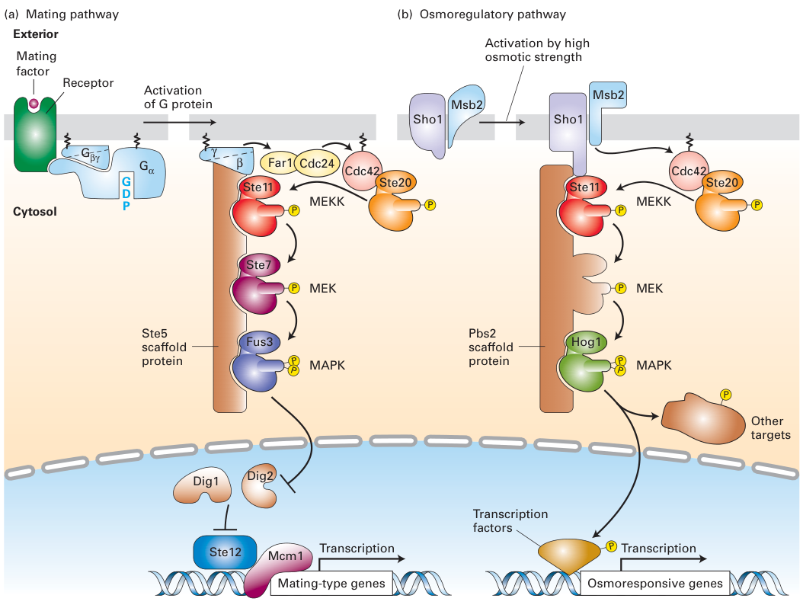
| Exterior | 外侧 |
| Cytosol | 胞质 |
| Receptor | 受体 |
| Mating factor | 交配因子 |
| Ste5 scaffold protein | Ste5支架蛋白 |
| Pbs2 scaffold protein | Pbs2支架蛋白 |
| Mating pathway | 交配通路 |
| Osmoregulatory pathway | 渗透调节通路 |
| Activation of G protein | G蛋白的激活 |
| Activation by high osmotic strength | 高渗透压激活 |
| Gα | Gα |
| Gβγ | Gβγ |
| MEKK | MEKK（MAP激酶激酶激酶） |
| MAPK | MAPK（MAP激酶） |
| Ste11 | Ste11 |
| Ste7 | Ste7 |
| Ste20 | Ste20 |
| Fus3 | Fus3 |
| Cdc42 | Cdc42 |
| Hog1 | Hog1 |
| Sho1 | Sho1 |
| Msb2 | Msb2 |
| Ste12 | Ste12 |
| Mating-type genes | 交配型基因 |
| Osmoresponsive genes | 渗透应答基因 |
| Transcription factors | 转录因子 |
出现了一个复杂之处，因为在酵母和高等真核细胞中，不同的MAP激酶级联共享一些共同的组分。例如，MEKK Ste11在三条酵母信号通路中发挥作用：
交配通路、渗透调节通路，以及由饥饿诱导的丝状生长通路。尽管如此，每条通路激活的是一种不同的MAP激酶。同样，在哺乳动物细胞中，共同的上游
信号转导蛋白参与激活多种JNK。
一旦认识到不同MAP激酶通路之间共享组分，研究人员就想知道细胞对特定信号应答的特异性是如何实现的。酵母研究提供了最初的证据：通路特异性的支架蛋白使某条特定通路中的信号转导激酶能够彼此相互作用，而不与其他通路中的激酶相互作用。例如，支架蛋白Ste5稳定一个包含交配通路中各激酶的大复合物；同样，渗透调节通路中的激酶级联使用Pbs2支架（见图16-27）。Ste11参与这两条通路，但在每条通路中，它都被约束在一个响应特定胞外信号而形成的大复合物内，因此Ste11下游的信号传递只限于它所在的那个复合物。结果是，酵母细胞接触交配因子只诱导一种MAP激酶Fus3的活化，而接触高渗透压则诱导另一种MAP激酶Hog1的活化。
MAP激酶通路的支架在酵母、果蝇和线虫细胞中已有充分的记载，但在哺乳动物细胞中一直难以证明其存在。后生动物中记载最充分的支架蛋白或许是Ksr（kinase suppressor of Ras，Ras的激酶抑制物）。Ksr通过结合MAP激酶级联的若干信号组分（包括MEK和MAP激酶）而充当分子支架；因此它可以通过调节这些相互作用的效率来增强MAP激酶的激活。在果蝇中，丧失Ksr同源物会阻断组成性活性Ras蛋白的信号传导，提示Ksr在果蝇细胞的Ras/MAP激酶通路中起正向作用。在线虫中，若干发育通路中由Ras介导的信号传导都需要Ksr。哺乳动物细胞中不同MAP激酶的信号特异性，可能源于它们与Ksr蛋白或其他类支架蛋白的结合，但要检验这种可能性还需要大量进一步的研究。
- Ras是一种胞内GTP酶开关蛋白，作用于大多数RTK和细胞因子受体的下游。与Gα一样，Ras在非活性的GDP结合形式与活性的GTP结合形式之间循环。Ras的循环需要两种蛋白的协助：鸟嘌呤核苷酸交换因子（GEF）和GTP酶激活蛋白（GAP）。
- RTK通过两种蛋白间接与Ras相连：接头蛋白GRB2，以及具有GEF活性的Sos（见图16-21）。
- GRB2中的SH2结构域结合活化RTK中的磷酸酪氨酸，而它的两个SH3结构域结合Sos，从而使Sos靠近膜结合的Ras∙GDP并激活其GEF活性。
- Sos与非活性Ras的结合引起大幅构象变化，使GDP得以释放、GTP得以结合，形成有活性的Ras（见图16-23）。
- 活化的Ras触发一条激酶级联，其中Raf、MEK和MAP激酶被依次磷酸化并因此激活。活化的MAP激酶随后转位到细胞核（见图16-24）。
- 生长因子受体受刺激后MAP激酶的活化，导致两种转录因子被磷酸化并激活，它们结合成三聚体复合物，促进多种早期应答基因的转录（见图16-26）。
- 不同的胞外信号诱导不同的MAP激酶通路活化，这些通路通过磷酸化不同的转录因子组合来调控多样的细胞过程。
- 每条MAP激酶级联的激酶组分装配成一个由支架蛋白稳定的、通路特异性的大复合物（见图16-27）。这确保由某一特定胞外信号激活一条MAP激酶通路时，不会导致含有共享组分的其他通路也被激活。
16.5 磷酸肌醇信号通路
在前面的小节中，我们已经看到来自受体酪氨酸激酶（RTK）和细胞因子受体的信号转导如何以与质膜结合的多蛋白复合物的形成开始（见图16-10和图16-14），以及这些复合物如何启动Ras/MAP激酶通路。这里我们要讨论的是，这些同样的受体如何启动一些以源自磷脂酰肌醇的特殊磷酸化磷脂作为中间体的信号通路。正如第15章所讨论的，这些膜结合脂质统称为磷酸肌醇。这些磷酸肌醇信号通路既包括在质膜胞质面合成不同磷酸肌醇的若干酶，也包括一些胞质蛋白，它们带有能结合这些分子、因而被招募到质膜胞质面的结构域。除了我们在第15章遇到的对细胞代谢的短期效应之外，这些磷酸肌醇通路还对基因表达模式有长期效应。我们将看到，磷酸肌醇通路以多种激酶告终，其中包括蛋白激酶C（PKC）和蛋白激酶B（PKB），它们在细胞生长和代谢中起关键作用。举例来说，我们将在本章后面看到，胰岛素激活PKB如何在刺激葡萄糖进入肌肉中起关键作用。
磷脂酶Cγ被某些RTK和细胞因子受体激活
正如第15章所讨论的，激素对某些G蛋白偶联受体的刺激会导致磷脂酶C（PLC）的激活。这种膜结合酶随后切割磷脂酰肌醇4,5-二磷酸[PI(4,5)P2]，生成两种重要的第二信使：1,2-二酰甘油（DAG）和肌醇1,4,5-三磷酸（IP3）。经由IP3/DAG通路的信号传导会导致胞质Ca2+升高并激活蛋白激酶C（见图15-34）。
尽管我们在第15章讨论磷脂酶C时没有提到，被GPCR激活的正是该酶的β亚型（PLCβ）。许多RTK和细胞因子受体也能通过激活磷脂酶C的另一种亚型——γ亚型（PLCγ）——来启动IP3/DAG通路，PLCγ含有SH2结构域并定位于胞质。PLCγ的SH2结构域与被激活受体上的特定磷酸酪氨酸结合，从而使该酶靠近其在质膜胞质面上的底物PI(4,5)P2。此外，与受体激活相关的激酶活性会磷酸化结合在受体上的PLCγ的酪氨酸残基，增强其水解酶活性。因此，被激活的RTK和细胞因子受体以两种方式促进PLCγ的活性：使该酶定位到膜上以及将其磷酸化。正如第15章所见，由PLC启动的IP3/DAG通路具有多种生理效应。
PI-3激酶被招募到激活的受体上导致三种磷酸化磷脂酰肌醇的合成
除IP3/DAG通路之外，许多被激活的RTK和细胞因子受体还通过把磷脂酰肌醇-3激酶（PI-3激酶）招募到膜上，启动另一条磷酸肌醇通路。PI-3激酶通过其SH2结构域与许多被激活的RTK和细胞因子受体胞质结构域上的磷酸酪氨酸结合，从而被招募到质膜的胞质面。这种招募使PI-3激酶的催化结构域靠近其在质膜胞质面上的磷酸肌醇底物。与我们早先遇到的磷酸化蛋白质的激酶不同，PI-3激酶是在两种彼此独立的磷脂酰肌醇底物之一上给3′碳添加一个磷酸基团，导致两种磷脂酰肌醇3-磷酸的形成：磷脂酰肌醇3,4-二磷酸[PI(3,4)P2]或磷脂酰肌醇3,4,5-三磷酸[PI(3,4,5)P3]（图16-28）。通过充当各种信号转导蛋白的停靠位点，PI-3激酶反应产生的这些膜结合PI 3-磷酸产物反过来在若干重要通路中向下游转导信号。
在某些细胞中，这条PI-3激酶通路能触发细胞分裂并阻止凋亡，从而确保细胞存活。
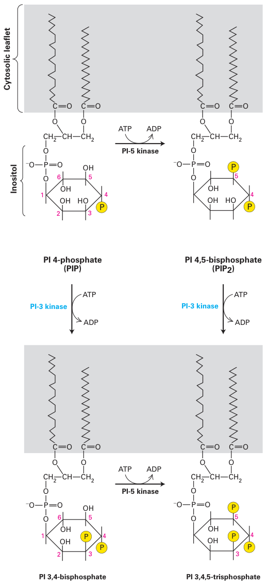
| ATP | ATP |
| ADP | ADP |
| PI-5 kinase | PI-5激酶 |
| PI 4-phosphate | PI 4-磷酸 |
| PI 4,5-bisphosphate | 磷脂酰肌醇4,5-二磷酸（PIP2） |
| PI 3,4-bisphosphate | 磷脂酰肌醇3,4-二磷酸 |
| PI 3,4,5-trisphosphate | 磷脂酰肌醇3,4,5-三磷酸 |
| PI-3 kinase | PI 3-激酶 |
| Cytosolic leaflet | 胞质侧小叶 |
| Inositol | 肌醇 |
在其他细胞中，这条通路诱导细胞代谢发生特定变化。PI-3激酶最早是在对多瘤病毒的研究中被鉴定出来的，多瘤病毒是一种能使某些哺乳动物细胞转化的DNA病毒。转化需要若干由病毒编码的癌蛋白，其中包括一种被称为"middle T"的癌蛋白。为了弄清middle T如何发挥作用，研究者在中度纯化的middle T制品中发现了PI-3激酶，这提示两者之间存在特异性相互作用。随后他们着手确定PI-3激酶可能如何影响细胞行为。
当一种无活性、显性负性的PI-3激酶形式在被多瘤病毒转化的细胞中表达时，它抑制了病毒转化细胞所特有的不受控制的细胞增殖。这一发现提示，正常的这种激酶在某些对细胞增殖或对阻止程序性细胞死亡至关重要的信号通路中很重要（凋亡；见第21章）。后续工作表明，PI-3激酶参与许多与细胞生长和凋亡相关的信号通路。在人类基因组编码的九种PI-3激酶同源物中，表征最清楚的一种含有一个具催化活性的p110亚基和一个带有SH2磷酸酪氨酸结合结构域的p85亚基。
质膜中PI 3-磷酸的积累导致若干激酶的激活
许多蛋白激酶通过与质膜胞质面上的磷脂酰肌醇3-磷酸结合而被激活。这些激酶反过来影响许多细胞蛋白的活性。一种能与PI 3-磷酸结合的重要激酶是蛋白激酶B（PKB），它是一种丝氨酸/苏氨酸激酶，也称Akt。除激酶结构域之外，PKB还含有一个PH结构域，这是一种存在于多种信号蛋白中的保守蛋白结构域，它
以高亲和力与PI(3,4)P2和PI(3,4,5)P3中的3-磷酸结合。由于这些肌醇磷酸存在于质膜的胞质面，结合会把整个蛋白招募到细胞膜上。在未受刺激的静息细胞中，这些磷酸肌醇（统称为PI 3-磷酸）的浓度很低，PKB以无活性形式存在于胞质中（图16-29）。在激素刺激及随之而来的PI 3-磷酸升高之后，PKB通过其PH结构域与这些膜结合分子结合，从而定位于质膜。PKB与PI 3-磷酸的结合不仅把该酶招募到质膜，还解除了PH结构域对催化位点的抑制。然而，PKB的最大激活依赖于另外两种激酶——PDK1和PDK2——的招募。
PDK1通过其自身的PH结构域与PI 3-磷酸结合而被招募到质膜。锚定在PI 3-磷酸上之后，PKB和PDK1都在质膜平面内随机扩散，最终彼此靠近到足以让PDK1磷酸化PKB激活环中一个关键苏氨酸残基的程度——这又是一个激酶通过磷酸化被激活的例子。PDK2对环段之外第二个丝氨酸的磷酸化是PKB最大活性所必需的（见图16-29）。正如Raf活性的调控一样（见图16-24），抑制性结构域的释放以及其他激酶的磷酸化共同调控蛋白激酶B的活性。
被激活的蛋白激酶B诱导许多细胞应答
一旦被完全激活，PKB就能从质膜上解离，并磷酸化其在全细胞范围内的众多靶蛋白，这些蛋白对细胞行为有广泛的影响。在许多细胞中，被激活的PKB直接
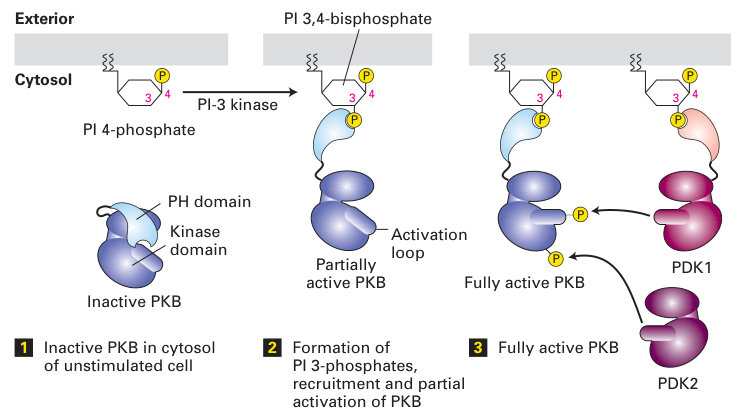
| Inactive PKB | 无活性PKB |
| Kinase domain | 激酶结构域 |
| PH domain | PH结构域 |
| PI-3 kinase | PI 3-激酶 |
| PI 3,4-bisphosphate | 磷脂酰肌醇3,4-二磷酸 |
| PI 4-phosphate | PI 4-磷酸 |
| Partially active PKB | 部分激活的PKB |
| Activation loop | 激活环 |
| Fully active PKB | 完全激活的PKB |
| PDK1 | PDK1 |
| PDK2 | PDK2 |
| Exterior | 外侧 |
| Cytosol | 胞质 |
| Inactive PKB in cytosol of unstimulated cell | 未受刺激细胞胞质中的无活性PKB |
| Formation of PI 3-phosphates, recruitment and partial activation of PKB | PI 3-磷酸的形成、PKB的招募与部分激活 |
磷酸化并灭活诸如Bad之类的促凋亡蛋白，这是一种阻止通向细胞死亡的凋亡通路被激活的短期效应（见图21-40）。被激活的PKB还通过在多个丝氨酸/苏氨酸残基上磷酸化Forkhead转录因子FOXO3a，从而降低其诱导若干促凋亡基因表达的能力，促进许多培养细胞的存活。在没有生长因子时，FOXO3a不被磷酸化，主要定位于细胞核，在那里激活若干编码促凋亡蛋白的基因的转录。当向细胞中加入生长因子时，PKB变为有活性并磷酸化FOXO3a。这使得胞质中的磷酸丝氨酸结合蛋白14-3-3能与FOXO3a结合，从而把它隔离在胞质中。（回想一下，14-3-3还把包括Raf在内的许多其他磷酸化蛋白以无活性状态保留在胞质中；见图16-24。）一种FOXO3a突变体，其中作为PKB靶点的三个丝氨酸残基被突变为丙氨酸，它具有组成型活性，即使在有活性PKB存在时也会启动凋亡。这一发现证明了FOXO3a和PKB在控制培养细胞凋亡中的重要性。PKB的失调与癌症和糖尿病的发病机制都有关，在第16.8节中我们将看到，在胰岛素RTK下游被激活的PKB如何促进肌肉和肝脏中的葡萄糖摄取和储存。这是同一条信号通路在不同细胞中控制不同细胞功能的又一个例子。
PI-3激酶通路受PTEN磷酸酶负调控
与几乎所有细胞内信号事件一样，PI-3激酶进行的磷酸化是可逆的。相应的磷酸酶称为PTEN，它具有异常宽泛的底物特异性。尽管PTEN能去除连接在蛋白质丝氨酸、苏氨酸和酪氨酸残基上的磷酸基团，但它从PI(3,4,5)P3上去除3-磷酸的能力被认为是其在细胞中的主要功能。在培养的哺乳动物细胞中过表达PTEN会降低PI(3,4,5)P3的水平，从而减少PKB的激活及其抗凋亡效应，促进凋亡。
PTEN基因在多种晚期人类癌症中被缺失。由此导致的PTEN蛋白缺失促成细胞的不受控制生长。确实，缺乏PTEN的细胞具有升高的PI(3,4,5)P3水平和PKB活性。由于PKB发挥抗凋亡效应，PTEN的缺失减少了作为许多细胞正常命运的程序性细胞死亡。在某些细胞（如神经干细胞）中，PTEN的缺失不仅阻止凋亡，还导致细胞周期进程受到刺激、细胞增殖速率提高。缺乏PTEN的敲除小鼠具有增大的脑以及数量过多的神经元，这证明了PTEN在控制正常发育中的重要性。■
- 许多RTK和细胞因子受体能通过激活磷脂酶Cγ（PLCγ）启动IP3/DAG信号通路，PLCγ是与G蛋白偶联受体所激活的亚型不同的另一种PLC亚型。
- 被激活的RTK和细胞因子受体还能通过结合PI-3激酶启动另一条磷酸肌醇通路，从而使该酶得以接触其膜结合的磷酸肌醇底物，这些底物随后在3位被磷酸化（PI 3-磷酸；见图16-28）。
- 各种蛋白质中的PH结构域与PI 3-磷酸结合，形成与质膜胞质面结合的信号复合物。
- 蛋白激酶B（PKB）通过其PH结构域与PI 3-磷酸结合而部分激活。PKB的完全激活需要激酶PDK1（它也通过与PI 3-磷酸结合而被招募到膜上）以及第二种激酶PDK2对其进行磷酸化（见图16-29）。
- 被激活的PKB通过直接磷酸化并灭活若干促凋亡蛋白，以及磷酸化并灭活FOXO3a转录因子（否则该因子会诱导促凋亡蛋白的合成），促进许多细胞的存活。
- 经由PI-3激酶通路的信号传导由PTEN磷酸酶终止，后者水解PI 3-磷酸中的3-磷酸。PTEN的缺失是人类肿瘤中常见的事件，会促进细胞存活和增殖。
16.6 受泛素化与蛋白质降解控制的信号通路：Wnt、Hedgehog与NF-κB
我们迄今讨论的所有信号通路都是可逆的，因此如果细胞外信号被移除，它们可以相对迅速地被关闭。在本节中，我们讨论若干不可逆或仅缓慢可逆的通路，其中某个关键组分——要么是转录因子，要么是转录因子的抑制物——被泛素化，随后被蛋白水解切割。我们首先讨论Wnt和Hedgehog（Hh）蛋白的信号传递，这两个在进化上保守的信号蛋白家族在许多发育通路中发挥关键作用，并常诱导细胞获得新身份或命运所需基因的表达。尽管Wnt和Hedgehog信号通路使用不同的受体和信号蛋白组合，它们确实具有相似之处，这正是我们把它们归在一起的原因：
● 在静息状态下，这两条通路中的关键转录因子都被泛素化并被导向蛋白水解切割，从而使其失活。
● 每条通路的激活都涉及大型胞质蛋白复合物的解体、泛素化的抑制，以及活性转录因子的释放。
● 激酶，包括糖原合酶激酶3（GSK3），在两条信号通路中都发挥关键作用。
接下来我们考察NF-κB通路，这是第三条受泛素化控制的信号通路。在这种情况下，被泛素化后降解的是转录因子的抑制物，而不是转录因子本身。在静息状态下，称为NF-κB的转录因子被隔离在胞质中并与一个抑制物结合。若干种诱导应激的条件导致该抑制物泛素化并立即降解，使细胞能够通过激活基因转录而立即且强烈地作出应答。在了解NF-κB通路如何被一类表面受体激活的过程中，我们还看到多聚泛素化的一种非常不同的功能：形成支架以组装一个关键的信号转导复合物。
Wnt信号触发转录因子从胞质蛋白复合物中释放
Wnt和Hedgehog信号通路的组分在后生动物的整个进化过程中一直保守，主要是通过对果蝇发育突变体的遗传学分析而被阐明的。在脊椎动物中，这些通路中的突变被认为会引发若干种癌症。事实上，第一个被发现的脊椎动物Wnt基因——小鼠Wnt-1基因——之所以引人注意，是因为它在某些乳腺癌中过表达，原因是一段小鼠逆转录病毒DNA，即乳腺肿瘤病毒（MMTV）基因组，插入到了Wnt-1基因附近；该逆转录病毒的LTR启动子（见图8-13）激活了Wnt-1基因的不当表达。
Wnt这个词是由wingless（对应的果蝇基因）与int（代表小鼠中的逆转录病毒整合位点）拼合而成。人类基因组编码19种不同的Wnt蛋白，而Wnt蛋白对许多关键的发育事件都是必需的，例如脑发育、肢体图式形成和器官发生。Wnt信号在骨形成中的主要作用，是通过以下发现揭示的：Wnt通路组分中的失活突变会影响人的骨密度。现已知道Wnt信号控制成骨细胞（形成骨的细胞）的形成。此外，Wnt信号对许多类型干细胞的增殖（见第21章）以及发育的许多其他方面都是必需的。
Wnt蛋白是分泌型信号分子，它们通过把一个单不饱和脂肪酸——棕榈油酸——连接到蛋白质中部的某个丝氨酸上而被修饰。与其他生长因子一样，Wnt蛋白与若干细胞表面蛋白相互作用，并激活多条下游信号转导通路。Wnt蛋白的主要信号受体是Frizzled（Fz），它含有七个跨膜α螺旋。与胰高血糖素受体（见图15-13c）一样，Fz有一个大的胞外结构域，它
与第一个跨膜α螺旋相连，并构成主要的配体结合位点，但Fz并不激活G蛋白。连接到Wnt蛋白上的棕榈酸酯结合到Fz胞外结构域上的一个特定位点，并稳定Wnt-Fz复合物。这种脂质对Wnt蛋白与受体的结合至关重要，也是目前已知唯一一个由脂质介导配体-受体相互作用的翻译后修饰的例子。
不同的Wnt蛋白与Fz结合至少激活三种不同的信号转导通路。最普遍的是"经典"Wnt信号通路，它使用第二种跨膜蛋白LRP（在果蝇中称为Arrow），该蛋白以依赖Wnt信号的方式与Frizzled结合（图16-30）。编码Wnt蛋白、Frizzled或LRP的基因发生失活突变，对胚胎发育都有相似的影响，表明这三种蛋白都是Wnt信号传递所必需的。
"经典"Wnt胞内信号转导通路的核心角色在脊椎动物中称为β-连环蛋白，在果蝇中称为Armadillo。这种多才多艺的蛋白既作为转录激活因子，又作为膜-细胞骨架连接蛋白（见图20-14）。在没有Wnt信号时，未连接到细胞黏附分子上的β-连环蛋白分子结合在以支架蛋白Axin为基础的胞质复合物中。该复合物含有腺瘤性结肠息肉病（APC）蛋白，之所以这样命名，是因为它的丢失可能导致结直肠癌。在静息状态下，复合物中的两种激酶——酪蛋白激酶1（CK1）和GSK3——依次在多个丝氨酸和苏氨酸残基上磷酸化β-连环蛋白。其中一些磷酸化残基充当名为TrCP的泛素连接酶的结合位点。随后β-连环蛋白被泛素化，并被26S蛋白酶体迅速降解（图16-30a；关于泛素化的更多内容，见图3-31和图3-36）。
Wnt信号阻断β-连环蛋白降解的完整通路尚未被确定。我们确实知道，Wnt与Fz和LRP复合物的结合导致LRP胞质结构域被磷酸化，这可能是由游离的GSK3或CK1完成的。这使Axin能够结合到LRP共受体的胞质结构域上。Axin定位的这一转移破坏了稳定含Axin、GSK3、CK1和β-连环蛋白的胞质复合物的那些相互作用，从而阻止了CK1和GSK3对β-连环蛋白的磷酸化。这一变化反过来又阻止了β-连环蛋白的泛素化及其随后的降解，并使其在胞质中稳定下来（图16-30b）。这一过程需要Dishevelled（Dsh）蛋白，它结合到Frizzled受体的胞质结构域上，并稳定Axin与LRP的结合。被释放的β-连环蛋白易位到细胞核，在那里与转录因子（TCF）结合，作为共激活因子诱导特定靶基因的表达，这些靶基因常常包括促进细胞增殖的基因。（这个名称不幸容易混淆；这里的TCF与在MAP激酶通路中发挥作用的TCF蛋白不同；见图16-26。）
异常的Wnt信号过度活跃与许多癌症的进展有关；超过90%的人类结肠癌表现出Wnt信号通路过度活跃，即游离β-连环蛋白的水平异常高（见第24章）。这一观察提供了最早的线索之一，表明β-连环蛋白能激活许多促进生长的基因。在多种类型的人类癌症中都发现了编码APC和Axin的基因的失活突变，也发现了β-连环蛋白上GSK3或CK1磷酸化位点的突变；这些突变减少了使β-连环蛋白失活的胞质复合物的形成（见图16-30a），降低了β-连环蛋白的降解，并使β-连环蛋白在没有正常Wnt信号的情况下也能激活基因表达。■
Wnt靶基因中有许多也控制Wnt信号传递，表明存在高度的反馈调节。β-连环蛋白稳定性和定位的重要性意味着，Wnt信号影响细胞中三个β-连环蛋白池之间的关键平衡：膜-细胞骨架界面、胞质中以及细胞核中。
为了传递信号，Wnt还必须结合细胞表面蛋白聚糖。蛋白聚糖参与Wnt信号的证据来自果蝇Sugarless（Sgl）突变体，它们缺乏合成糖胺聚糖类肝素和硫酸软骨素所需的一种关键酶。这些突变体中Wingless（果蝇的
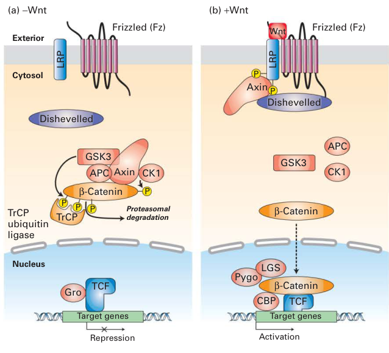
| Cytosol | 胞质 |
| Exterior | 胞外 |
| Nucleus | 细胞核 |
| Wnt | Wnt |
| Frizzled (Fz) | Frizzled（Fz） |
| LRP | LRP |
| Dishevelled | Dishevelled |
| β-Catenin | β-连环蛋白 |
| Axin | Axin |
| APC | APC |
| CK1 | CK1 |
| GSK3 | GSK3 |
| TrCP | TrCP |
| ubiquitin ligase | 泛素连接酶 |
| TCF | TCF |
| Target genes | 靶基因 |
| Gro | Gro |
| Pygo | Pygo |
| LGS | LGS |
| Proteasomal degradation | 蛋白酶体降解 |
Wnt蛋白）的水平大大降低，并表现出其他与Wnt信号缺陷相关的表型。蛋白聚糖如何促进Wnt信号尚不清楚，但也许Wnt与特定糖胺聚糖链的结合是它与受体Fz或共受体LRP结合所必需的。这一机制将类似于成纤维细胞生长因子与硫酸肝素的结合，后者增强FGF与其受体酪氨酸激酶的结合（见图16-15）。
Wnt蛋白的浓度梯度对发育的许多步骤都是必需的
Wnt是分泌型蛋白；然而，部分由于共价连接到这些蛋白上的疏水脂质，它们从发出信号的细胞只能扩散很短的距离，通常只有局部效应。随着Wnt扩散得离分泌细胞越来越远，其浓度逐渐降低。不同的Wnt浓度在靶细胞中诱导不同的命运：接受大量Wnt的细胞开启某些基因并形成某些结构；接受较少Wnt的细胞开启不同的基因，从而形成不同的结构。根据其在靶细胞处的浓度诱导不同细胞命运的信号被称为形态发生素。
Wnt作为形态发生素最引人注目的例子或许发生在涡虫Schmidtea mediterranea的再生过程中（见图1-22e）。如果切掉涡虫的头，一个新的头会在14天内再生出来；一条正常的、虽然
更小的虫体会被再生出来。同样，切除尾部后，新的尾也会再生。最引人注目的是，从动物中部取出的一个小身体片段会从前部伤口（朝向头的那个伤口）再生出正常的头，并从后部伤口再生出尾（图16-31a）。Wnt的梯度控制这种极性。在正常成体涡虫中，Wnt蛋白呈由后向前的梯度表达（图16-31b），并且主要集中在被切除身体片段的后缘（见图16-31a）。相反，分泌型胞外酶Notum仅在前部伤口处产生。Notum通过切下棕榈油酸来抑制Wnt信号，棕榈油酸是共价连接到Wnt上的脂肪酸，正如我们上面所知，它对Wnt信号传递是必需的。
图16-31c展示了一些漂亮的实验，证明后部伤口处由Wnt进行的信号传递引起尾的诱导，而诱导头部形成的是前部伤口处Wnt信号的缺失，而非Notum的存在：
1. 在完全没有Wnt信号的情况下（通过对切下的身体片段用针对β-连环蛋白的抑制性RNA处理造成），再生出的是双头涡虫；在这种情况下，前部和后部伤口处都缺乏Wnt信号，因此两个伤口部位都诱导出头部。
2. 相反，在缺乏Notum信号的情况下（用针对Notum的抑制性RNA处理造成），
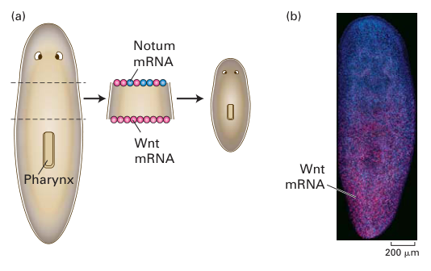
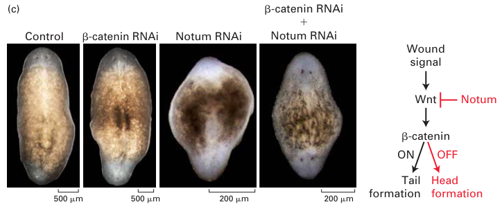
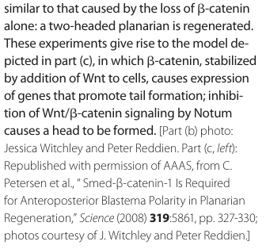
| Wnt | Wnt |
| Notum | Notum |
| mRNA | 信使RNA（mRNA） |
| Pharynx | 咽 |
| ON | 开启 |
| OFF | 关闭 |
| Wound signal | 伤口信号 |
| Control | 对照 |
| β-catenin RNAi | β-连环蛋白RNAi |
| Notum RNAi | Notum RNAi |
| Tail formation | 尾形成 |
| Head formation | 头形成 |
再生出的是双尾涡虫；在这种情况下，Wnt在前部和后部伤口处都存在并具有活性，因此形成两条尾。
3. 在Wnt和Notum信号都缺失的情况下（用针对β-连环蛋白和Notum两者的抑制性RNA处理造成），表型与仅缺失Wnt所造成的表型相似：再生出双头涡虫。前部和后部伤口处都缺乏Wnt信号，在两个部位都诱导头部再生，而在缺乏Wnt时，Notum的缺失无关紧要。因此，导致尾形成的是Wnt/β-连环蛋白信号的缺失，而不是Notum的表达。
这些实验支持Wnt浓度梯度在涡虫再生中的作用。在第21章中我们将学到，成熟涡虫含有称为neoblast的多能干细胞，它们能分化成任何身体细胞类型；显然，Wnt蛋白梯度在指导neoblast分化成构成涡虫头或尾的多种细胞类型中发挥重要作用。
Hedgehog信号解除对靶基因的抑制
Hedgehog（Hh）信号通路与Wnt通路相似，因为接收和转导信号也需要两种膜蛋白，其中一种具有七个
跨膜片段。Hh通路还涉及含有一个转录因子的胞内复合物的解体。Hh信号与Wnt信号的不同之处在于，它的两种膜受体在质膜和胞内囊泡之间移动，而且在哺乳动物中，Hh信号局限于从细胞表面伸出的初级纤毛。但是，与Wnt蛋白一样，Hh蛋白也能作为形态发生素向邻近细胞发出信号。Hh信号在脊椎动物几乎所有器官系统的发育中都发挥关键作用，从决定神经系统不同节段的命运到调控肺的形态发生和毛囊形成。哺乳动物三种Hh蛋白之一——Sonic Hedgehog（Shh）——对四肢的正常图式形成是必需的；Shh在发育中肢体的前部区域异常表达（除了其在后部结构域的正常表达之外），会导致多指（趾）畸形（多余的手指或脚趾）。
Hh前体蛋白的加工 Hedgehog蛋白由一种具有自身蛋白水解活性的前体蛋白形成，这种活性使该蛋白在内质网中就能把自己切成两半。切割产生一个N端片段，它随后被分泌出去向其他细胞发出信号，以及一个C端片段，后者被降解。如图16-32所示，前体的切割伴随着胆固醇这种脂质被共价加到N端片段新的羧基末端上。对Hedgehog的第二种修饰——在N端添加一个棕榈酰基——使该蛋白更加疏水。
Hh蛋白能移动相对较长的距离——在发育中的脊椎动物肢体中可达300 μm——但一个带有两个脂质基团的Hh蛋白如何在细胞外空间的亲水环境中扩散，人们还不太清楚。Hh和Wnt都通过其连接的脂质或胆固醇基团，锚定在细胞外脂蛋白颗粒的磷脂单分子层上（关于典型脂蛋白的结构，见图14-27）。在许多情况下，一个细胞产生的大部分Hh蛋白仍结合在其质膜上；在这种情况下，Hh主要通过细胞-细胞接触发出信号。实验还观察到由脂质基团之间的疏水相互作用所稳定的Hh蛋白胞外聚集体。无论涉及的详细机制如何，这两个连接的疏水基团限制了Hh的扩散，从而限制了它在组织中的作用范围。与Wnt蛋白一样，空间限制在约束Hh蛋白的作用中起关键作用。
果蝇中的Hedgehog信号通路 果蝇的遗传学研究表明，接收Hedgehog信号并将其转导到细胞核需要两种膜蛋白：Smoothened（Smo）和Patched（Ptc）。Smoothened有七个跨膜α螺旋，在序列上与Wnt受体Fz相关。Patched被预测含有十二个跨膜α螺旋，在结构上与Niemann-Pick C1（NPC1）
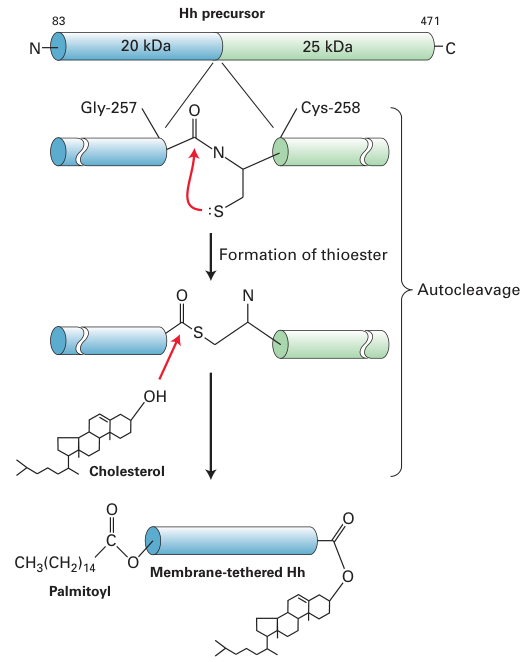
| Formation of thioester | 硫酯的形成 |
| Autocleavage | 自切割 |
| Membrane-tethered Hh | 膜拴系的Hh |
| Gly-257 | Gly-257 |
| Cys-258 | Cys-258 |
| Cholesterol | 胆固醇 |
| Palmitoyl | 棕榈酰基 |
| Hh precursor | Hh前体 |
蛋白最相似，后者是膜转运蛋白ABC超家族的一员（见表11-3）。
图16-33描绘了目前关于果蝇Hedgehog通路的模型。支持这一模型的证据最初来自对hedgehog（Hh）或smoothened（Smo）基因功能缺失突变的果蝇胚胎的研究。两种突变胚胎的发育表型非常相似；hedgehog这个名字来自Hh突变胚胎的外观，它们被排列紊乱的毛发状刚毛覆盖，酷似刺猬的刺。此外，在胚胎发育过程中，Hh和Smo基因都是激活同一批靶基因（例如patched和wingless）转录所必需的。相反，patched（Ptc）基因的功能缺失突变产生相当不同的表型，一种类似于
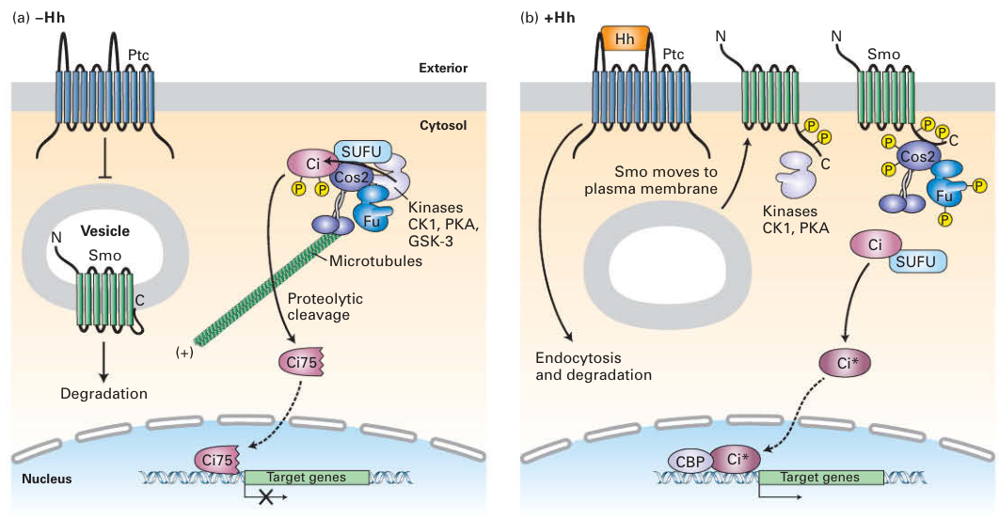
| Cytosol | 胞质 |
| Exterior | 胞外 |
| Nucleus | 细胞核 |
| Target genes | 靶基因 |
| Hh | Hh |
| Ptc | Ptc |
| Smo | Smo |
| Ci | Ci |
| Ci75 | Ci75 |
| Ci* | Ci* |
| Cos2 | Cos2 |
| Fu | Fu |
| SUFU | SUFU |
| CBP | CBP |
| Microtubules | 微管 |
| Proteolytic cleavage | 蛋白水解切割 |
用Hedgehog蛋白淹没胚胎所产生的效应。这些发现提示，在缺乏Hh时，Ptc通过抑制基因激活所需的信号通路来抑制靶基因。另一个观察结果——在缺乏patched功能的突变体中，Smo是Hh靶基因转录所必需的——把Smo置于Hh通路中Ptc的下游。结合其他表明Hh直接结合Ptc的实验，这些证据表明，Hh与Ptc的结合阻止了Ptc阻断Smo的作用，从而激活靶基因的转录。
随后的生化和细胞生物学研究表明，在缺乏Hh时，Ptc富集于质膜，而Smo则存在于内部囊泡的膜上。此外，Smo较长的胞质C端片段以某种方式折叠，使其无法结合下游信号蛋白（图16-33a）。Ptc如何抑制Smo的功能并增强其降解尚不清楚；一种理论认为，Ptc把一种抑制Smo功能的小分子转运进细胞。
Hh通路中的一个大型胞质蛋白复合物由若干蛋白组成，包括丝氨酸-苏氨酸激酶Fused（Fu）；蛋白激酶PKA、GSK3β和CK1，
我们此前在其他信号通路中已经遇到过这些激酶；微管相关的类驱动蛋白Costal-2（Cos2）；以及含锌指的转录因子Cubitis interruptus（Ci）。该复合物结合在胞质中的微管上，并可能沿微管移动。重要的是，复合物中至少三种激酶对Ci的磷酸化导致一个泛素连接酶复合物组分的结合，这反过来又指导Ci的泛素化及其被导向蛋白酶体。在那里Ci经历蛋白水解切割；由此产生的Ci片段（称为Ci75）易位到细胞核，并抑制Hh靶基因的表达。
Hh与受体Ptc结合后，Hh-Ptc复合物像其他受体-激素复合物一样，从细胞表面内吞进入内部囊泡并最终被降解；Hh与Ptc的结合也抑制了Ptc抑制Smo的能力（见图16-33a）。同时，Smo从内部囊泡移动到质膜；Smo的C端片段被磷酸化并采取"开放"构象。这一变化触发若干细胞应答，包括Fu和Cos2磷酸化的增加。重要的是，复合物
Fu、Cos2和Ci从微管上解离，而Cos2与Smo被磷酸化的C端尾部结合。由此造成的Fus/Cos2/Ci复合物破坏导致Ci的磷酸化和切割都减少。结果是，全长Ci被释放并易位到细胞核，在那里与转录共激活因子CREB结合蛋白（CBP）结合，促进而不是抑制Hh靶基因的表达。
Hh信号的调控 对Hh通路的反馈控制很重要，因为不受约束的Hh信号会导致癌性过度生长或形成错误的细胞类型。在果蝇中，由Hh信号诱导的基因之一就是patched。随后Patched表达的增加在很大程度上通过减少活性Smoothened蛋白的池来拮抗Hh信号。因此该系统受到缓冲：如果发育过程中产生了过多的Hh信号，Ptc随之增加将予以补偿；如果产生的Hh信号太少，Ptc的量就会减少。
脊椎动物中的Hedgehog信号需要初级纤毛
脊椎动物中的Hedgehog信号通路与果蝇通路有许多保守的共同特征，但也存在一些显著差异。第一，哺乳动物基因组含有三个Hh基因和两个Ptc基因，它们在不同组织中的表达各不相同。第二，哺乳动物表达三种Gli转录因子，它们共同承担果蝇中单一Ci转录因子的角色。果蝇Hh通路的所有其他组分在哺乳动物中也是保守的。
哺乳动物Hh通路最引人注目的方面是初级纤毛的重要性。纤毛是长长的、被质膜包裹的结构，从细胞表面伸出。纤毛和鞭毛在特化细胞类型中的作用——在气管细胞中沿气道表面移动物质，在精子中以鞭毛驱动的运动——已广为人知（见图1-14）。大多数脊椎动物细胞有一根称为初级纤毛的单一纤毛（图16-34），这是一种细长的、不运动的结构，从几乎所有脊椎动物细胞的表面伸出，但在所有已检查过的无脊椎动物细胞类型中都明显缺失。
正如我们将在第18章中了解到的，纤毛是通过沿其中央的一束微管运输蛋白质和颗粒来延伸和维持的；不同的纤毛内运输（IFT）马达蛋白把蛋白质和颗粒从纤毛基部运到顶端，以及朝相反方向运输。纤毛在Hh信号中起作用的最早证据之一，来自一项寻找以类似于Hh信号改变的胚胎的方式改变小鼠早期发育的突变的筛选：突变表型包括神经管中某些类型细胞的丢失，这些细胞需要高浓度的一种Hh蛋白才能发育。这些突变中有许多位于编码IFT蛋白的基因中，表明纤毛（或鞭毛）在Hh信号中起作用。
随后的分析表明，在没有Hh信号时，Ptc定位于初级纤毛的膜上，而Smo位于纤毛基部附近的内部囊泡中（图16-34a）。与果蝇中一样，由Gli、SUFU和若干激酶组成的胞质复合物导致Gli磷酸化、其蛋白水解切割，以及一个称为GliR的Gli片段易位入核，在那里它结合到Gli应答基因的调控区并阻断它们的诱导。
加入Hh后，Smo移动到纤毛膜，然后移动到初级纤毛的顶端，而Hh/Ptc复合物被内化并降解（图16-34b）。Smo的这些移动涉及β-肾上腺素能受体激酶（BARK）对Smo胞质C端结构域的磷酸化，这种酶与修饰G蛋白偶联受体的是同一种（见图15-32）。随后β-抑制蛋白（β-arrestin）结合Smo。反过来，β-抑制蛋白招募微管马达蛋白Kif7，后者结合到纤毛核心的微管上，并沿纤毛膜向上移动Smo。与此同时，含Gli的胞质复合物被破坏，从而阻止Gli被切割成抑制性片段。Gli随后在纤毛顶端积累，这一过程也需要Kif7马达蛋白。在那里，它通过一种细节尚不清楚的机制被Smo激活，接着另一种马达蛋白——动力蛋白——把被激活的、称为Gli*的Gli移到纤毛基部（见图16-34b）。与果蝇中一样，这个活性转录因子随后进入细胞核，在那里激活多个靶基因的表达。
Hh信号的不当激活是若干类型人类肿瘤的成因，包括髓母细胞瘤（小脑肿瘤）和横纹肌肉瘤（肌肉肿瘤）。初级纤毛对这种异常的Hh信号是必需的，抑制初级纤毛功能的药物正在这些癌症的动物模型上进行测试。例如，在出生后的小鼠脑中表达一种突变激活形式的Smoothened会引起髓母细胞瘤，但如果同时使一个编码必需纤毛蛋白的基因失活，这些肿瘤就不会形成。■
抑制物蛋白的降解激活NF-κB转录因子
在Wnt和Hedgehog两条通路的静息状态下，一个关键转录因子被泛素化并遭受蛋白水解降解，产生一个充当转录抑制物的蛋白片段；信号通路的激活涉及泛素化被阻断以及转录因子以活性状态释放。NF-κB通路的运作方式正好相反：在静息状态下，NF-κB转录因子与一个抑制物结合而滞留在胞质中；信号通路的激活涉及抑制物被泛素化随后降解，从而触发活性转录因子的释放。这一机制使细胞能够通过立即且强烈地激活基因转录来对多种应激信号作出应答。NF-κB通路的各个步骤是通过对哺乳动物细胞和果蝇的研究揭示的。
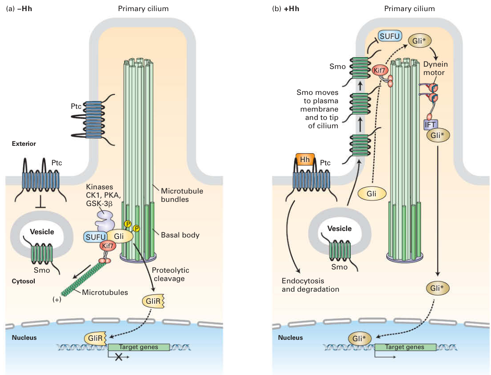
| Primary cilium | 初级纤毛 |
| Basal body | 基体 |
| Cytosol | 胞质 |
| Nucleus | 细胞核 |
| Target genes | 靶基因 |
| Hh | Hh |
| Ptc | Ptc |
| Smo | Smo |
| Gli | Gli |
| Gli* | Gli* |
| GliR | GliR |
| SUFU | SUFU |
| Kif7 | Kif7 |
| Dynein motor | 动力蛋白马达 |
| IFT | 纤毛内运输（IFT） |
| Microtubules | 微管 |
NF-κB（这个名称是那个颇为拗口的描述"活化B细胞核因子κ轻链增强子"的首字母缩写）在哺乳动物免疫系统细胞中会被迅速激活，以应答细菌和病毒感染、炎症以及许多其他应激情况，例如电离辐射。当细菌或真菌细胞壁的组分结合到细胞表面某些Toll样受体上时，免疫系统的某些细胞中NF-κB通路被激活（见图23-35）。这条通路也能被所谓的炎症细胞因子激活，例如肿瘤
坏死因子α（TNFα）和白细胞介素1（IL-1），它们由附近的细胞应答感染而释放。在所有这些情况中，配体与其受体的结合诱导在质膜附近的胞质中组装一个多蛋白复合物，该复合物触发一条导致NF-κB转录因子激活的信号通路。
NF-κB最初是基于它在B细胞中转录激活编码抗体（免疫球蛋白）轻链的基因而被发现的。它现在被认为是免疫系统的主转录调控因子
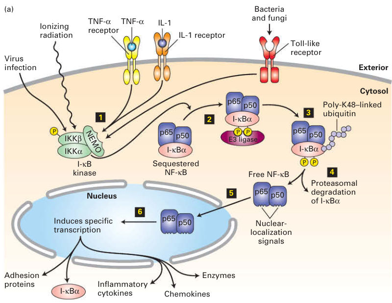
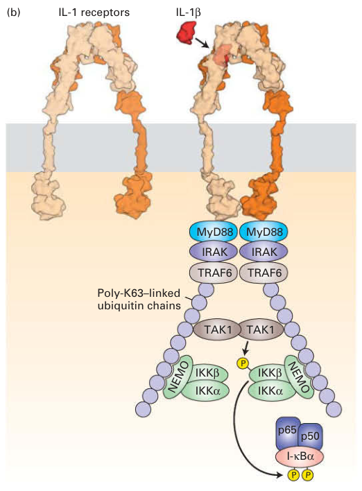
| p50 | p50 |
| p65 | p65 |
| NF-κB | NF-κB |
| I-κBα | I-κBα |
| I-κB kinase | I-κB激酶 |
| IKKα | IKKα |
| IKKβ | IKKβ |
| NEMO | NEMO |
| TRAF6 | TRAF6 |
| TAK1 | TAK1 |
| MyD88 | MyD88 |
| IRAK | IRAK |
| Cytosol | 胞质 |
| Nucleus | 细胞核 |
| Exterior | 胞外 |
| TNF-α | TNF-α |
| IL-1 | IL-1 |
| IL-1β | IL-1β |
| Toll-like receptor | Toll样受体 |
| IL-1 receptor | IL-1受体 |
| Nuclear-localization signals | 核定位信号 |
| Poly-K48–linked ubiquitin | 多聚K48连接的泛素 |
| Poly-K63–linked ubiquitin chains | 多聚K63连接的泛素链 |
在哺乳动物中。尽管果蝇不产生抗体，但果蝇中的NF-κB同源物在应答细菌和病毒感染时诱导合成大量分泌型抗微生物肽。这一现象表明，NF-κB调控系统在进化过程中一直保守，已有超过五亿年的历史。
对哺乳动物细胞的生化研究和对果蝇的遗传学研究，为NF-κB通路的运作提供了重要见解。异二聚体NF-κB转录因子的两个亚基（p65和p50）在其N端共享一个同源区域，这是它们二聚化和结合DNA所必需的。在未遭受应激或未对感染迹象作出应答的细胞中，与一种称为I-κBα的抑制物直接结合，把NF-κB以失活状态隔离在胞质中。一个I-κBα分子结合到p50–p65亚基成对的N端结构域上，从而掩蔽它们的核定位信号（图16-35a）。
一个称为I-κB激酶的三蛋白复合物就在NF-κB的上游运作，负责把它从隔离状态中释放出来。I-κB激酶的β亚基是上述所有激活NF-κB的细胞外信号的汇聚点。在细胞被感染因子或炎症细胞因子刺激后几分钟内，I-κB激酶的β亚基通过磷酸化被激活，然后磷酸化I-κBα上的两个N端丝氨酸残基（图16-35a，步骤1和2）。随后一个E3泛素连接酶结合到这些磷酸丝氨酸上，对I-κBα进行多聚泛素化，触发它被蛋白酶体立即降解（步骤3和4）。在表达突变型I-κBα（其中这两个丝氨酸已被改变为丙氨酸，因而不能被磷酸化）的细胞中，NF-κB永久失活，证明I-κBα的磷酸化对通路激活是必需的。
I-κBα的降解暴露出NF-κB上的核定位信号，随后NF-κB易位入核并激活众多靶基因的转录（图16-35a，步骤5和6）。尽管NF-κB是由蛋白水解激活的，但NF-κB信号最终会被一个负反馈环关闭，因为由NF-κB立即诱导转录的基因之一编码I-κBα。由此产生的I-κBα蛋白水平升高，在细胞核中结合活性NF-κB并把它带回胞质。
在许多免疫系统细胞中，NF-κB刺激150多个基因的转录，包括编码细胞因子和趋化因子的基因；后者把其他免疫系统细胞和成纤维细胞吸引到感染部位。NF-κB还促进受体蛋白的表达，这些受体蛋白使中性粒细胞（一种白细胞）能够从血液迁移到其下方的组织中（见图20-40）。此外，NF-κB刺激iNOS的表达——这是产生一氧化氮的酶的可诱导同工型（见图15-36），一氧化氮对细菌细胞有毒——以及若干抗凋亡蛋白的表达，后者阻止细胞死亡。因此，这一个转录因子协调并激活机体的防御，或是直接通过对病原体和应激作出应答，或是间接通过对其他受感染或受伤的组织和细胞释放的信号分子作出应答。
多聚泛素链在NF-κB通路中充当连接受体与下游蛋白的支架
正如我们刚刚看到的，I-κB激酶的β亚基是经由多种受体（包括Toll样受体和IL-1受体）传递的细胞外信号的汇聚点。由于Toll样受体和IL-1受体的胞质结构域没有酶活性，多年来一直是个谜：这些受体的激活如何导致I-κB激酶β亚基的磷酸化和激活。早期工作表明，IL-1的存在导致两种IL-1受体蛋白寡聚化，以及若干蛋白结合到其胞质结构域上，包括TRAF6——一种合成多聚泛素链的E3泛素连接酶。由于当时认为所有多聚泛素化都意味着被蛋白酶体降解，研究人员寻找那些被迅速破坏的泛素化靶蛋白。没有找到这些蛋白后，科学家们寻找多聚泛素的其他可能作用，并很快发现，取决于具体的E3泛素连接酶，泛素会形成多种类型的聚合物，具有不同的结构和生物学功能。
使I-κBα泛素化的E3泛素连接酶把一个泛素的羧基末端连接到另一个泛素上的赖氨酸48（K48）；这种多聚K48连接的泛素把所连接的蛋白导向蛋白酶体（见图16-35a）。相反，E3连接酶TRAF6把一个泛素的羧基末端连接到另一个泛素上的赖氨酸63（K63）（见图3-36）。由此产生的多聚K63泛素链并不把蛋白导向降解；相反，这些泛素链充当支架，结合具有多聚K63泛素结合结构域的蛋白。这些蛋白之一是蛋白激酶TAK1，它通过结合多聚泛素链而被激活；另一个是I-κB激酶的NEMO亚基。因此，与多聚K63泛素的结合使该激酶与其靶标——I-κB激酶的β亚基——相互靠近，使TAK1能够磷酸化并从而激活这个下游激酶（图16-35b）。如上所述，这个激酶随后磷酸化I-κBα。因此，不同类型的多聚泛素链以非常不同的方式参与把IL-1信号传递到NF-κB转录因子的激活。
- 许多信号通路涉及靶蛋白的泛素化和蛋白水解，因此是不可逆的或仅缓慢可逆的。这些靶蛋白既可以是转录因子，也可以是转录因子的抑制物。
- Wnt控制许多关键的发育事件，例如脑发育、肢体图式形成和器官发生。Hedgehog在发育过程中也作为形态发生素发挥作用。两条通路中的激活突变都能引起癌症。
- Hedgehog和Wnt都是含有脂质锚的分泌型蛋白，这些脂质锚减小了它们的信号作用范围。共价连接到Wnt上的脂肪酸是与其受体结合所必需的。
- Wnt信号通过两种细胞表面蛋白——受体Frizzled和共受体LRP——以及一个含β-连环蛋白的胞内复合物发挥作用（见图16-30）。Wnt的结合促进β-连环蛋白的稳定性和核定位，后者直接或间接促进TCF转录因子的激活。
- Wnt蛋白浓度的梯度对发育的许多步骤都是必需的，包括涡虫再生过程中头和尾的再生（见图16-31）。
- Hedgehog信号也通过两种细胞表面蛋白——Smoothened和Patched——以及一个含Cubitis interruptus（Ci）转录因子的胞内复合物发挥作用（见图16-33）。在Hedgehog存在时生成Ci的激活形式；在缺乏Hedgehog时生成抑制性的Ci片段。Patched和Smoothened都会因Hedgehog与Patched的结合而改变其亚细胞定位。
- 脊椎动物中的Hh信号需要初级纤毛和纤毛内运输蛋白。在缺乏Hh时Patched定位于纤毛膜，而当Hh存在时Smo移动到纤毛（见图16-34）。
- NF-κB转录因子调控许多使细胞能够对感染和炎症作出应答的基因。
- 在未受刺激的细胞中，NF-κB定位于胞质，与抑制物蛋白I-κBα结合。为应答许多类型的细胞外信号，I-κBα发生依赖磷酸化的泛素化并在蛋白酶体中被降解，从而释放出活性NF-κB，后者易位到细胞核（见图16-35a）。
- 连接到激活的IL-1受体上的多聚泛素链形成支架，把TAK1激酶带到其底物——I-κB激酶的β亚基——附近，从而使信号能够从受体传递到NF-κB通路的下游组分（见图16-35b）。
16.7 受蛋白质切割控制的信号通路：Notch/Delta、SREBP与阿尔茨海默病
本节我们讨论由细胞外空间中的蛋白质切割所激活的信号通路——这类切割通常发生在细胞表面——一般由基质金属蛋白酶（MMP）家族的成员执行，更具体地说，由跨膜ADAM（a-disintegrin-and-metalloproteases，即解整合素-金属蛋白酶；解整合素是一种保守的蛋白质结构域，可结合整合素并破坏细胞-基质相互作用——见第20章）亚类执行。例如在Notch/Delta通路中，ADAM对
Notch受体胞外部分的切割之后，Notch在质膜内被另一种蛋白酶切割，释放出作为转录因子发挥作用的胞质结构域。该通路在发育过程中决定许多类型细胞的命运。
本章前面我们看到，多种生长因子通过受体酪氨酸激酶传递信号。许多这类生长因子，包括表皮生长因子（EGF）家族的成员，都是以跨膜前体的形式合成的，它们结合相邻细胞表面的EGF受体即可向这些细胞传递信号。但这些蛋白质被基质金属蛋白酶切割后，会把有活性的生长因子释放到细胞外介质中，使它们能够向远得多的细胞传递信号，甚至向释放它们的细胞自身传递信号（自分泌信号）。由于这一过程涉及的蛋白酶解切割形式与Notch/Delta通路中发生的类似，我们在此也加以讨论。神经细胞中表达的某种跨膜蛋白若被MMP不适当切割，与阿尔茨海默病的病理过程有关，我们也会讨论这一过程。
调控性蛋白质切割也用于某些胞内信号通路。因此我们在讨论的最后描述这样一条通路：响应低胆固醇水平，在细胞内的高尔基体膜内切割某种转录因子前体。这条通路对于维持构建细胞膜所需的胆固醇与磷脂的恰当平衡至关重要（见第7章）。
结合Delta后，Notch受体被切割，释放出一种充当转录因子的组分
被称为Notch的受体与其配体Delta都是存在于细胞表面的单次跨膜蛋白。Notch还有其他的配体家族，但每种配体激活它的分子机制相同。信号细胞上Delta的胞外结构域与相邻应答细胞（而非同一细胞）上的Notch结合，激活Notch使之经历两次切割事件；这些事件导致Notch胞质结构域被释放，该结构域作为转录因子发挥作用。Notch蛋白在内质网中合成为单体膜蛋白。在高尔基体中，它经历一次蛋白酶解切割，产生一个胞外亚基和一个跨膜-胞质亚基；这两个亚基以非共价方式相互结合。
ADAM 10是一种基质金属蛋白酶（MMP），属于一类含金属的酶，它们切割靶蛋白靠近质膜外表面的胞外片段。ADAM 10执行对Notch胞外结构域的初次切割，但当相邻细胞上没有Delta时，Notch胞外结构域的折叠方式使ADAM 10无法接近蛋白酶切割位点（图16-36）。
Delta与应答细胞上的Notch蛋白结合后，信号细胞中的Delta发生内吞。伴随Delta移入信号细胞的力拉伸Notch蛋白，改变
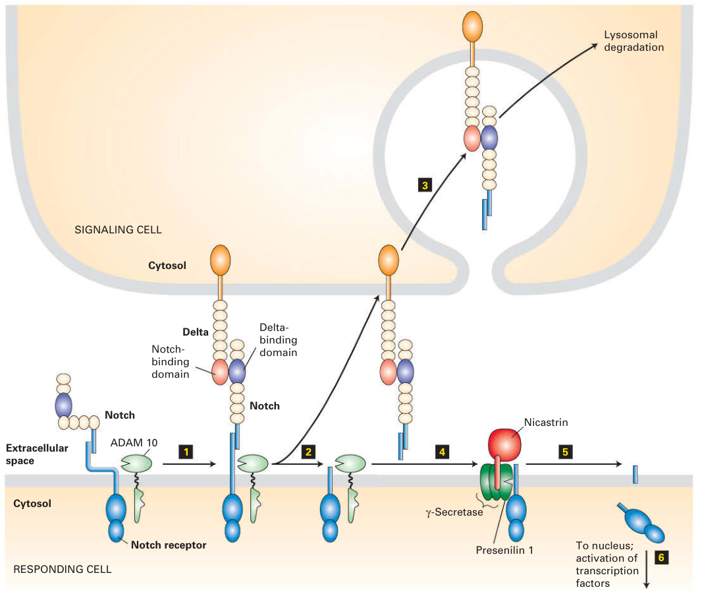
| Cytosol | 胞质 |
| Extracellular space | 细胞外空间 |
| SIGNALING CELL | 信号细胞 |
| RESPONDING CELL | 应答细胞 |
| Notch | Notch |
| Notch receptor | Notch受体 |
| Delta | Delta |
| Delta-binding domain | Delta结合结构域 |
| Notch-binding domain | Notch结合结构域 |
| Nicastrin | nicastrin |
| Presenilin 1 | 早老素1 |
| γ-Secretase | γ-分泌酶 |
| ADAM 10 | ADAM 10 |
| Lysosomal degradation | 溶酶体降解 |
| To nucleus; activation of transcription factors | 进入细胞核；转录因子的激活 |
其构象，使ADAM 10得以接近，从而切下Notch胞外结构域。Notch胞外结构域仍与Delta结合，被信号细胞内化，并可能在溶酶体中被降解。
Notch的第二次切割发生在Notch疏水的跨膜区之内，由一种称为γ-分泌酶的四蛋白跨膜复合物催化。这次切割释放Notch胞质段，该段
立即转位到细胞核，在那里影响靶基因的转录。它的作用与其他细胞表面受体下游激活的转录因子一样，取决于表观遗传染色质标记的整体格局以及细胞特异性转录因子的存在。
四蛋白的γ-分泌酶复合物包含早老素1（PS1）——即真正的蛋白酶——以及另外三个必需
亚基，即aph-1、pen-2和nicastrin。肽键水解如何在疏水的膜内环境中发生，目前尚不清楚，因为早老素的分子结构尚未解析到足够的分辨率（见图16-37b）。但一种同样具有九个跨膜段的古菌相关蛋白的分子结构提示，两个天冬氨酸残基——它们位于两条跨膜螺旋的胞质侧且彼此靠近——对催化必不可少，并被水包围；因此蛋白酶解切割很可能发生在一个部分含水的环境中。
对缺乏nicastrin的细胞和小鼠的研究，揭示了为何γ-分泌酶只能切割那些先被ADAM或其他基质金属蛋白酶切割过的蛋白质。nicastrin结合于第一种蛋白酶在膜蛋白上产生的N端胞外残桩（图16-36，第4步）。没有这个残桩，nicastrin乃至整个γ-分泌酶复合物就无法与其靶蛋白相互作用。下面我们考察ADAM蛋白和γ-分泌酶在阿尔茨海默病发生中的作用。
基质金属蛋白酶催化许多信号蛋白从细胞表面被切下
许多信号分子合成为跨膜蛋白，其信号结构域伸入细胞外空间。这类信号蛋白（如上文所述的Delta）往往具有生物学活性，但只能通过结合相邻细胞上的受体来传递信号。然而，许多生长因子和其他蛋白质信号合成为跨膜前体，其切割会把可溶的活性信号分子释放到细胞外空间。这种切割常由ADAM执行。人类基因组编码ADAM家族的21种基质金属蛋白酶，但已知只有12种具有催化活性；其余的可能作为解整合素发挥作用。许多ADAM参与切割信号蛋白前体紧邻其跨膜段外侧的部分。
信号蛋白前体受调控切割在医学上重要的例子是EGF家族的成员，包括EGF、HB-EGF、TGF-α、NRG1和NRG2（见图16-17）。在许多癌症中可见一种或多种ADAM活性升高，它可以通过三种方式促进癌症发生。第一，ADAM活性增强可导致细胞外EGF家族生长因子水平升高，刺激分泌细胞自身（自分泌信号）或相邻细胞（旁分泌信号）不适当增殖。第二，通过破坏细胞外基质的成分，ADAM活性升高被认为可促进转移，即肿瘤细胞向体内其他部位移动（见第24章）。第三，在金属蛋白酶切割胞外结构域之后，γ-分泌酶的切割会释放这些前体蛋白的胞质片段，方式类似于Notch胞内结构域的释放。其中若干蛋白片段会迁移进入细胞核，在那里像Notch胞内结构域一样刺激促生长基因的转录。
ADAM蛋白酶也是心脏病中的一个重要因素。如上一章所述，肾上腺素刺激心肌中的β-肾上腺素能受体，引起糖原分解并使肌肉收缩速率增加。然而，用肾上腺素长期处理心肌细胞，会通过一种未知机制导致某种ADAM被激活。这种基质金属蛋白酶切割HB-EGF的跨膜前体。释放出的HB-EGF随后结合心肌细胞上的EGF受体，刺激它们不适当生长。这种过度增殖可导致心脏扩大但功能减弱——这种病症称为心肌肥大，可能引起早死。■
淀粉样前体蛋白的不适当切割可导致阿尔茨海默病
阿尔茨海默病是另一种以基质金属蛋白酶活性不适当为特征的疾病。与阿尔茨海默病相关的一个主要病理变化是脑内淀粉样斑块的积聚，这些斑块含有一种称为Aβ42的42个氨基酸小肽的聚集体。该肽由淀粉样前体蛋白（APP）经蛋白酶解切割产生，APP是一种由神经元表达的跨膜细胞表面蛋白，其功能仍是个谜。
与Notch蛋白一样，APP经历一次胞外切割和一次膜内切割（图16-37a），但这一过程可按两种方式进行。第一种方式中，APP在胞外结构域的一个位点被ADAM 10（常称为α-分泌酶）切割，随后在单个膜内位点被γ-分泌酶切割，释放APP胞质结构域并产生一个26个氨基酸、部分嵌入膜的肽，该肽显然无害。相反，如果胞外结构域先被另一种酶β-分泌酶在另一个位点切割，随后又在同一膜内位点被γ-分泌酶切割，就会产生一个42个氨基酸的肽，称为Aβ42。Aβ42自发形成寡聚体，进而形成在阿尔茨海默病患者脑中发现的较大的淀粉样斑块。
通过对有家族史的那一小部分患者进行遗传学分析，APP被认定是阿尔茨海默病的主要致病因素。许多患者携带APP蛋白的突变，耐人寻味的是，这些突变集中在图16-37a所示的α-、β-或γ-分泌酶切割位点周围。另一些家族性阿尔茨海默病病例涉及早老素1（γ-分泌酶的催化亚基）的错义突变，这些突变增强Aβ42肽的形成，导致斑块形成，并最终导致神经元死亡。■
SREBP的调控性膜内蛋白水解释放出维持磷脂与胆固醇水平的转录因子
尽管本章关注的是由细胞外分子启动的信号通路，但那些感知内部分子水平并作出相应应答的信号通路
有时与从细胞外启动的通路共有某些分子调控原理、甚至相同的机制。一个这样的例子是细胞膜脂质的控制。如果一个细胞没有足够的磷脂来制造足量的膜，或者胆固醇过多以致形成大的结晶并损伤细胞结构，它很快就会面临危机（见第7章）。细胞能感知其膜中胆固醇与磷脂的相对含量；它们通过调节胆固醇生物合成和输入的速率来作出应答，使胆固醇:磷脂比值保持在一个狭窄的理想范围内。调控性膜内蛋白水解在这种对胆固醇水平变化的细胞应答中起重要作用。
如第14章所述，低密度脂蛋白（LDL）富含胆固醇，其功能是在水性循环系统中运输这种脂质（见图14-27）。当细胞胆固醇水平充足时，胆固醇生物合成通路中的两种酶（见图7-26）以及介导细胞摄取LDL的LDL受体的细胞水平都会被下调。由于LDL是通过受体介导的
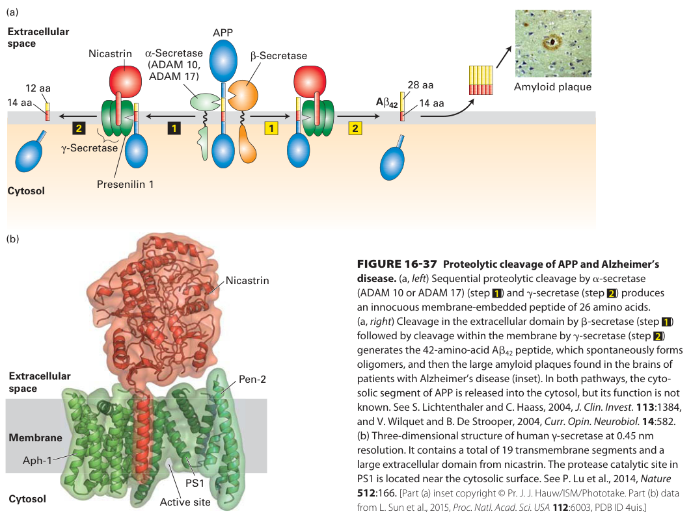
| Cytosol | 胞质 |
| Membrane | 膜 |
| Extracellular space | 细胞外空间 |
| Nicastrin | nicastrin |
| Pen-2 | pen-2 |
| Aph-1 | aph-1 |
| PS1 | PS1（早老素1） |
| Presenilin 1 | 早老素1 |
| γ-Secretase | γ-分泌酶 |
| Active site | 活性位点 |
| ADAM 10 | ADAM 10 |
| ADAM 17 | ADAM 17 |
| APP | 淀粉样前体蛋白（APP） |
| Amyloid plaque | 淀粉样斑块 |
内吞作用进入细胞的（见图14-29），LDL受体数量的减少会导致细胞胆固醇输入降低。
胆固醇生物合成和胆固醇输入都在基因转录水平受到调控。例如，把需要新膜以持续分裂的生长培养细胞与外部胆固醇来源（如LDL）一起孵育时，HMG-CoA还原酶（胆固醇生物合成中的限速酶）的水平和活性会被抑制。相反，酰基:胆固醇酰基转移酶（ACAT）——把胆固醇转变为酯化储存形式的酶——的活性升高。这样，能量就不会被浪费在制造多余的胆固醇上，从而实现了胆固醇稳态。
表达受胆固醇等固醇水平控制的基因，其启动子中常含有一个或多个10碱基对的固醇调节元件（SRE）或SRE半位点。（这些SRE不同于控制许多早期应答基因的血清应答元件，后者在16.4节中讨论。）称为SRE结合蛋白（SREBP）的胆固醇依赖性转录因子与这些应答元件的相互作用，调节
靶基因的表达。细胞如何感知自身有多少胆固醇，这一"信号"又如何被用来控制细胞核中SREBP的水平、从而控制基因表达？SREBP介导的通路始于内质网（ER）膜，除SREBP外还至少包括另外两种蛋白质。
当细胞胆固醇浓度充足时，SREBP存在于ER膜中，与SCAP（SREBP切割激活蛋白）、insig-1（或其近缘同源物insig-2）以及可能还有其他蛋白质形成复合物（图16-38a）。SREBP有三个不同的结构域：一个N端胞质结构域，含碱性螺旋-环-螺旋（bHLH）DNA结合基序（见图9-30d），当它从SREBP其余部分被切下时，作为转录因子发挥作用；一个中央膜锚定结构域，含两条跨膜α螺旋；以及一个C端胞质调节结构域。SCAP有八条跨膜α螺旋和一个大的C端胞质结构域，后者与SREBP的调节结构域相互作用。SCAP中五条跨膜α螺旋形成一个固醇感应结构域，类似于HMG-CoA还原酶中的固醇感应结构域（图16-38a；见
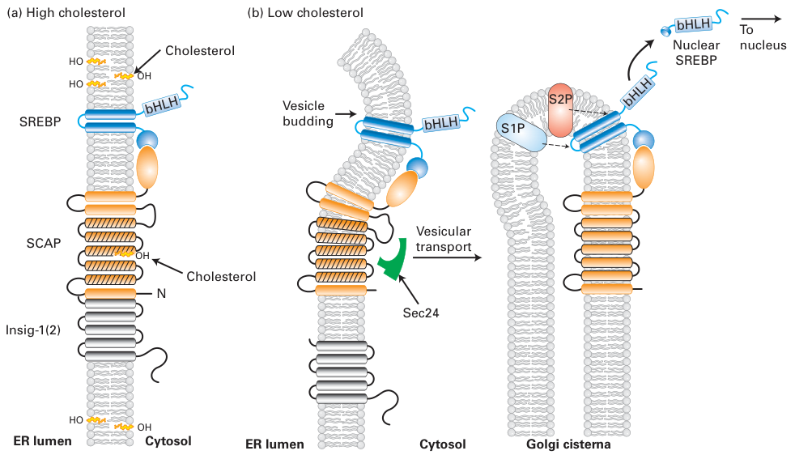
| Cytosol | 胞质 |
| ER lumen | ER腔（内质网腔） |
| Cholesterol | 胆固醇 |
| Insig-1(2) | insig-1(2) |
| SCAP | SCAP |
| SREBP | SREBP |
| Nuclear SREBP | 核内SREBP（nSREBP） |
| S1P | S1P |
| S2P | S2P |
| bHLH | bHLH |
| Sec24 | Sec24 |
| Vesicle budding | 囊泡出芽 |
| Vesicular transport | 囊泡运输 |
| Golgi cisterna | 高尔基体扁囊 |
| High cholesterol | 高胆固醇 |
| Low cholesterol | 低胆固醇 |
7.3节）。当SCAP中的固醇感应结构域结合胆固醇时，该蛋白还会结合insig-1(2)。当insig-1(2)与SCAP-胆固醇复合物紧密结合时，它会阻断SCAP与COPII囊泡外壳蛋白亚基Sec24的结合，从而阻止SCAP-SREBP复合物掺入从ER向高尔基体运输的囊泡（见第14章）。当ER膜中的胆固醇浓度超过ER膜总脂质的5%时，就会发生这种情况。因此，insig-1(2)依赖胆固醇地与SCAP-胆固醇-SREBP复合物结合，把这个复合物困在ER中。
当细胞胆固醇水平降至ER脂质的5%以下（该数值反映了细胞总胆固醇水平）时，结合在SCAP上的胆固醇被释放。于是insig-1(2)不再与无胆固醇的SCAP结合，SCAP–SREBP复合物经COPII囊泡从ER移向高尔基体（图16-38b）。SREBP在高尔基体膜中被两种蛋白酶S1P和S2P依次在两个位点切割；第二次切割是调控性膜内蛋白水解的又一个例子。位点2上的这第二次切割释放N端
含bHLH的结构域进入胞质。这个片段称为nSREBP（核内SREBP），被迅速转位进入细胞核。在那里它激活启动子中含固醇调节元件（SRE）的基因的转录，例如编码LDL受体和HMG-CoA还原酶的基因。因此，细胞胆固醇减少通过激活insig-1(2)/SCAP/SREBP通路，触发编码以下两类蛋白的基因表达：把胆固醇输入细胞的蛋白（LDL受体）和由小分子前体合成胆固醇的蛋白（HMG-CoA还原酶）。
SREBP在高尔基体中切割之后，SCAP显然会循环回到ER，在那里它可以与insig-1(2)及另一个完整的SREBP分子相互作用。SRE控制基因的高水平转录需要不断产生新的nSREBP，因为它会被泛素介导的蛋白酶体通路较快地降解（见第3章）。nSREBP的快速生成与降解有助于细胞对胞内胆固醇水平的变化迅速作出反应。
在某些情况下（例如细胞生长期间），细胞需要增加所有必需膜脂及其脂肪酸前体的供应（这需要协同调节）。为了制造类固醇激素，细胞有时需要某些脂质（如胆固醇）的量大于另一些脂质（如磷脂）的量（这需要差异性调节）。这种差异性产生是如何实现的？哺乳动物表达三种已知的SREBP同工型：SREBP-1a和SREBP-1c，它们由同一基因经可变剪接产生的RNA生成；以及SREBP-2，由另一个基因编码。这些由膜内切割激活的转录因子共同控制一类蛋白质的表达，这些蛋白质不仅调节胆固醇的可获得性，还调节脂肪酸以及由脂肪酸生成的甘油三酯和磷脂的可获得性。在哺乳动物细胞中，SREBP-1a和SREBP-1c对脂肪酸代谢的影响大于对胆固醇代谢的影响，而SREBP-2则相反。
- 许多重要的生长因子和其他信号蛋白（如EGF类）合成为跨膜蛋白；基质金属蛋白酶（MMP）家族成员在前体靠近质膜处对其进行的调控性切割，把活性分子释放到细胞外空间，以向远处的细胞传递信号。
- 受体Notch蛋白与相邻细胞表面的配体Delta结合后，经历两次蛋白酶解切割（见图16-36）。释放出的Notch胞质段随后转位进入细胞核，调节那些在发育过程中对决定细胞命运至关重要的靶基因的转录。
- EGF家族信号分子成员之膜结合前体的切割由ADAM金属蛋白酶催化。这些前体的不适当切割可导致细胞异常增殖，有可能引发癌症、心肌肥大和其他疾病。
- 催化Notch调控性膜内蛋白水解的γ-分泌酶，也参与把淀粉样前体蛋白（APP）切割成形成阿尔茨海默病特征性斑块的肽（见图16-37）。
- 在insig-1(2)/SCAP/SREBP通路中，当细胞胆固醇低时，有活性的nSREBP转录因子通过膜内蛋白水解从高尔基体膜释放出来（见图16-38）。随后它刺激那些编码参与胆固醇生物合成（如HMG-CoA还原酶）和细胞胆固醇输入（如LDL受体）的蛋白质的基因表达。当胆固醇高时，SREBP与insig-1(2)和SCAP形成复合物而被滞留于ER膜中（见图16-38）。
16.8 对多种信号通路的细胞应答整合：胰岛素作用
在第15章的引言中我们曾指出，同一种激素常常作用于多种体细胞，以协调特定的生理应答。而体内的每个细胞，其表面和胞质中都存在多种类型的激素受体；不同激素与这些受体结合，可以诱导相似或不相似的细胞应答。本节我们考察多种激素与信号转导通路如何相互作用，重点讨论最重要的生理控制系统之一：机体对代谢物葡萄糖和脂肪酸需求的调控。这些通路缺陷会导致重大疾病，包括糖尿病和心血管疾病；肥胖本身也可导致这些疾病及其他疾病，对个人、并且日益对公共卫生造成严重后果。
对其他营养物变化的细胞应答，很大程度上体现为基因表达的改变，这部分内容见第9章。
胰岛素与胰高血糖素协同维持血糖水平稳定
在日常正常生活中，正常血糖浓度的维持取决于两种肽类激素——胰岛素和胰高血糖素——之间的平衡，它们分别由不同的胰腺胰岛细胞产生，并引发不同的细胞应答。降低血糖的胰岛素含两条由二硫键连接的多肽链，由胰岛中的β细胞合成（见
图14-23和图14-24）。胰高血糖素是单体肽，由胰岛α细胞产生，可升高血糖。在食物充足（餐后）或匮乏（禁食后）期间，血糖的可获得性通过调节血液中胰岛素和胰高血糖素的浓度来调控。
我们这里重点讨论关键激素胰岛素，它通过几种方式降低血糖水平：
● 在数秒内，胰岛素即诱导肌肉和脂肪细胞从血液中摄取葡萄糖增加，主要通过增加质膜上GLUT4葡萄糖转运体的数量（见下文图16-40）。
● 在数秒至数分钟内，胰岛素刺激肝脏以葡萄糖合成糖原。
● 在更长的时间尺度上，胰岛素作用于肝脏，抑制催化由较小代谢物合成葡萄糖的酶的合成，该过程称为糖异生。
● 胰岛素促进祖细胞形成脂肪细胞，增加机体以甘油三酯形式储存的脂肪酸。
● 胰岛素作用于胰腺胰岛中邻近的α细胞，抑制胰高血糖素的合成。
血糖降低会刺激胰腺α细胞释放胰高血糖素。与肾上腺素受体一样，主要存在于肝细胞上的胰高血糖素受体与Gαs蛋白偶联，后者的效应蛋白是腺苷酸环化酶。胰高血糖素与该受体结合引起cAMP升高，进而激活蛋白激酶A，后者抑制糖原合成并促进糖原分解，生成葡萄糖1-磷酸（见图15-28a和图15-35b）。肝细胞将葡萄糖1-磷酸转化为葡萄糖，释放入血，从而把血糖回升至正常的禁食水平。
血糖升高触发胰岛β细胞分泌胰岛素
餐后，当血糖升至正常水平5 mM以上时，胰腺β细胞对葡萄糖升高（以及同时发生的氨基酸升高）作出反应，向血液中释放胰岛素（图16-39）。我们在第14章看到，这些细胞以脱水、近乎结晶的形式将胰岛素储存在分泌囊泡中；与所有调控性分泌途径一样，分泌由胞质Ca2+升高触发。胰岛素分泌由细胞外葡萄糖升高触发，后者使葡萄糖进入细胞的速率成比例增加，并相应提高糖酵解速率。由此引起的胞质ATP浓度升高使一种β细胞特有的离子通道——ATP门控K+通道——关闭，减少K+离子从细胞外流。质膜随之发生的去极化触发电压敏感型
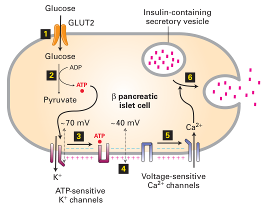
| GLUT2 | GLUT2葡萄糖转运体 |
| Glucose | 葡萄糖 |
| Pyruvate | 丙酮酸 |
| islet cell | 胰岛细胞 |
| secretory vesicle | 分泌囊泡 |
| ATP-sensitive K+ channels | ATP敏感性K+通道 |
| Voltage-sensitive Ca2+ channels | 电压敏感型Ca2+通道 |
| ATP | ATP |
| ADP | ADP |
| Ca2+ | Ca2+ |
| K+ | K+ |
Ca2+通道开放、胞质Ca2+升高以及胰岛素分泌。
在脂肪和肌肉细胞中，胰岛素触发含GLUT4葡萄糖转运体的胞内囊泡与质膜融合
释放的胰岛素在血液中循环，并与胰岛素受体结合，后者存在于许多不同种类的细胞上，包括肌肉细胞和脂肪细胞。胰岛素受体是一种受体酪氨酸激酶，可激活多条信号转导通路，包括导致蛋白激酶B（PKB）活化的那条通路（见图16-29）。在此情况下，PKB信号通路的主要作用——增加从血液中摄取葡萄糖——在数分钟内即可显现。由于葡萄糖摄取是葡萄糖利用的限速步骤，这一作用导致血糖水平迅速降低。
与大多数体细胞一样，脂肪和肌肉细胞的质膜含有GLUT1葡萄糖转运体，使细胞能够输入足够的葡萄糖
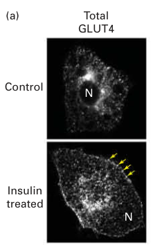
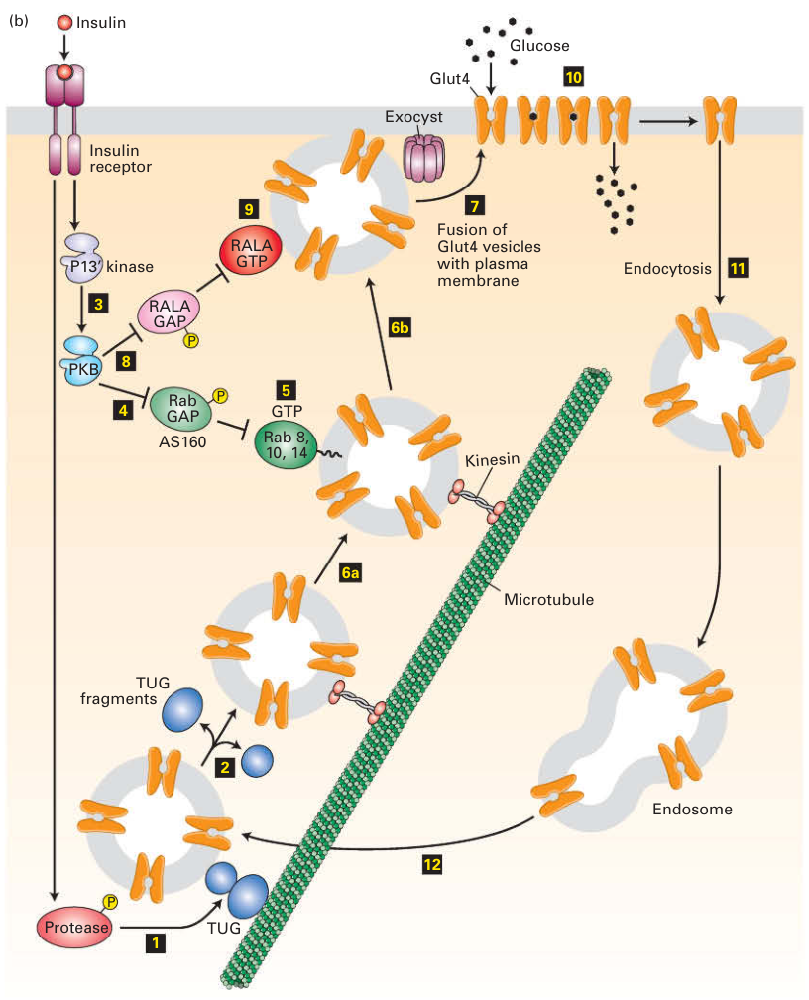
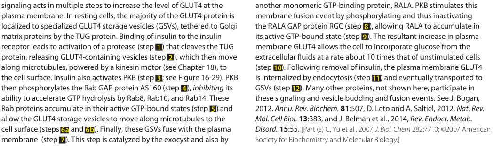
| GLUT4 | GLUT4葡萄糖转运体 |
| Insulin | 胰岛素 |
| Insulin receptor | 胰岛素受体 |
| PI 3-kinase | PI 3-激酶 |
| PKB | 蛋白激酶B（PKB） |
| AS160 | AS160 |
| Rab | Rab蛋白 |
| GAP | GAP蛋白 |
| RALA | RALA |
| GTP | GTP |
| Exocyst | 胞吐复合体（exocyst） |
| Glucose | 葡萄糖 |
| Endocytosis | 内吞 |
| Endosome | 内体 |
| Microtubule | 微管 |
| Kinesin | 驱动蛋白 |
| Fusion of GLUT4 vesicles with plasma membrane | 含GLUT4囊泡与质膜的融合 |
以满足其基础代谢需要。脂肪和肌肉细胞还大量表达胰岛素响应性葡萄糖转运体GLUT4；在静息（未受刺激）细胞中，几乎全部GLUT4都定位于胞质中的小囊泡（图16-40）。部分GLUT4位于内体中，但大部分位于一种独特的小细胞器，称为GLUT4储存囊泡（GSV）。在这些囊泡中，大部分GLUT4被一种称为TUG的蛋白质拴系到高尔基体基质上，后者是围绕高尔基体复合物的卷曲螺旋蛋白网络。
除激活PI 3-激酶/PKB通路外，胰岛素受体还磷酸化其他几个靶蛋白。这些信号共同引起含GLUT4的囊泡向质膜移动，随后这些囊泡与质膜融合。细胞表面GLUT4分子数目随即增加约十倍，使葡萄糖内流成比例增加，从而降低血糖（图16-40b）：
● 胰岛素通过一条目前才被完全鉴定清楚的信号通路，触发一种蛋白酶的活化，该蛋白酶催化TUG的特定位点内切蛋白酶解切割，将N端的GLUT4结合片段与锚定于高尔基体基质的蛋白质其余部分分开。这一切割使GLUT4囊泡得以移向质膜。
● 回想一下，某些单体GTP结合蛋白对胞内运输囊泡的出芽是必需的（如Sar蛋白；见图14-6和图14-8）；另一些即Rab蛋白，对囊泡融合是必需的（见图14-10）。PKB磷酸化并由此失活两种称为AS160和RGC的GAP蛋白。在基础未受刺激状态下，这些GAP通过提高Rab的GTP水解速率来抑制Rab的功能，从而使GLUT4储存囊泡不能移向质膜并与之融合。抑制这些GAP可使脂肪和肌肉细胞中的这些单体GTP结合蛋白蓄积于其活性GTP结合态。这些蛋白质催化GLUT4通路中的多个步骤，包括沿微管将GLUT4储存囊泡运输至细胞表面，以及与胞吐复合体（exocyst，见第14章）一起使这些囊泡与质膜融合（见图16-40b）。
随着血糖水平下降，胰岛素分泌和血中胰岛素水平下降，胰岛素受体不再被如此强烈地激活。在脂肪和肌肉细胞中，质膜上的GLUT4经内吞被内化并储存于胞内膜系统中，降低细胞表面GLUT4水平，从而降低葡萄糖输入。
胰岛素抑制葡萄糖合成并促进葡萄糖以糖原形式储存
在数分钟内，胰岛素对肌肉细胞的刺激即增强葡萄糖向糖原的转化，而由胰岛素受体下游激活的PKB在此过程中
也起关键作用。活性PKB磷酸化GSK3（与Wnt和Hh通路中发挥作用的同一种酶）。在静息（未受胰岛素刺激）细胞中，GSK3磷酸化糖原合酶，从而抑制其活性。相反，在经胰岛素处理的肌肉中，GSK3被PKB磷酸化，不能磷酸化糖原合酶；因此胰岛素刺激引起的PKB活化导致糖原合酶和糖原合成的净短期活化。
胰岛素还作用于肝细胞，抑制由较小分子（如乳酸、丙酮酸和乙酸）合成葡萄糖（糖异生，见第12章），并促进由葡萄糖合成糖原。这些效应中有许多体现在基因转录水平，因为胰岛素信号降低了一些基因的表达，这些基因编码的酶催化由小代谢物合成葡萄糖。所有这些作用的净效应是将血糖降至约5 mM的禁食浓度，同时把多余葡萄糖以糖原形式储存于细胞内供将来使用。
如果血糖水平降至约5 mM以下——例如由于突发的肌肉活动——胰腺β细胞分泌胰岛素减少，会诱导胰腺α细胞增加向血液中分泌胰高血糖素，并迅速触发血糖水平升高。
遗憾的是，这些精巧而强大的控制系统有时会失灵，引起严重的、甚至危及生命的疾病，主要是糖尿病。在糖尿病中，血糖调控受损，导致血糖浓度持续升高（高血糖），若不加以治疗，会引起重大并发症，包括失明、肾衰竭和肢体截肢。1型糖尿病常见于儿童和年轻人，由自身免疫过程引起，该过程破坏胰腺中产生胰岛素的β细胞。这种疾病有时称为胰岛素依赖型糖尿病，通常对规范的终身胰岛素注射和持续血糖监测有反应。
发达国家患糖尿病的大多数成年人患的是2型糖尿病，有时称为非胰岛素依赖型糖尿病；这种状况源于肌肉、脂肪和肝细胞对胰岛素作出应答的能力下降，以及机体试图通过过量产生胰岛素来代偿血糖升高时产生胰岛素的细胞丧失。虽然这种类型糖尿病的根本原因尚不十分清楚，但肥胖与糖尿病发病率的急剧增加相关。正如我们将在下一节看到的，肥胖还会导致脂肪细胞功能失常，脂肪细胞是以甘油三酯形式储存脂肪酸的细胞。由此在肌肉和肝脏中蓄积的脂质（特别是二酰甘油和鞘脂）会损害这些组织中的胰岛素作用。进一步鉴定控制能量代谢的信号通路，预期将为糖尿病的病理生理学提供洞见，并有望带来预防和治疗糖尿病的新方法。■
多条信号转导通路相互作用，通过主转录调控因子PPARγ调控脂肪细胞分化
胰岛素也是白色脂肪细胞（俗称"脂肪细胞"）形成的主要诱导物。脂肪细胞是机体的主要脂肪储存库；成熟脂肪细胞内含几个占据细胞大部分体积的甘油三酯液滴。脂肪细胞也是内分泌细胞，分泌多种影响肌肉、肝脏及其他器官代谢功能的信号蛋白。脂肪细胞是体内唯一一类数量几乎可以无限增加的细胞。各国的读者无需提醒也知道，肥胖是一个日益严重的公共卫生问题，而且它不仅是糖尿病的主要危险因素，也是心血管疾病（如心脏病发作和中风）以及某些癌症的主要危险因素。
正如我们将在第21章讨论的，脊椎动物中有几种干细胞被用来生成特定类型的分化细胞。存在于骨髓和其他器官中的间充质干细胞产生祖细胞，后者又可形成脂肪细胞、产软骨细胞或成骨细胞。脂肪细胞祖细胞称为前脂肪细胞，它已失去分化为其他类型细胞的潜能。当用胰岛素和其他激素处理时，前脂肪细胞发生终末分化；它们获得脂质运输与合成、胰岛素响应性以及分泌脂肪细胞特异性蛋白质所需的蛋白质。若干培养的前脂肪细胞系可分化为脂肪细胞，并表达脂肪细胞特异性mRNA和蛋白质，如甘油三酯合成所需的酶。
转录因子PPARγ是核激素受体家族成员，是脂肪细胞分化的主转录调控因子。作为证据，在许多成纤维细胞系中重组表达PPARγ，已发现足以触发这些细胞分化为脂肪细胞。相反，在前脂肪细胞中敲低PPARγ基因则会阻止其分化为脂肪细胞。大多数促进脂肪细胞生成的激素（如胰岛素）至少部分是通过激活PPARγ的表达来实现的。PPARγ反过来结合大多数脂肪细胞特异性基因的启动子，包括编码胰岛素信号通路所需蛋白质（如胰岛素受体和GLUT4）的基因，并诱导其表达。与其他核激素受体家族成员一样，例如类固醇激素受体（见第9章）在结合其配体时被激活，PPARγ也被认为可结合一种配体，可能是脂肪酸的氧化衍生物。
另一个转录因子C/EBPα在脂肪细胞分化过程中被诱导，也直接诱导许多脂肪细胞基因。重要的是，C/EBPα诱导PPARγ基因的表达，而PPARγ诱导C/EBPα的表达，导致这两种蛋白质在分化的头
两天内迅速增加。PPARγ和C/EBPα共同诱导前脂肪细胞分化为成熟脂肪细胞所需的全部基因的表达。
许多信号蛋白（如Wnt和TGF-β）拮抗胰岛素的作用，阻止前脂肪细胞分化为脂肪细胞。如图16-41所示，由这些激素的受体激活的转录因子阻止PPARγ基因的表达，部分是通过阻断C/EBPα诱导PPARγ基因表达的能力。因此，多种细胞外信号协同作用调控脂肪细胞生成，它们所激活的信号转导通路交汇于对一个关键"主"基因（编码PPARγ）表达的调控上。
炎症性激素导致肥胖中脂肪细胞功能紊乱
肥胖的问题不只是新增脂肪细胞的重量；这些细胞的代谢变得异常，胰岛素信号减弱。在许多个体中，这会导致2型糖尿病的发生。问题很大一部分来自巨噬细胞和其他免疫系统细胞，它们侵入并充斥肥胖的脂肪组织，可能是被蓄积的坏死脂肪细胞及其释放的油腻脂滴所吸引。这些巨噬细胞分泌几种所谓的炎症性激素，深刻影响附近脂肪细胞的代谢。其中两种激素TNFα和IL-1与脂肪细胞上各自的受体结合，诱导转录因子NF-κB活化（见图16-35a）。NF-κB反过来诱导几种干扰胰岛素信号的蛋白质的表达，包括SOCS蛋白；与细胞因子受体一样（见图16-14b），SOCS蛋白结合胰岛素受体胞质结构域中磷酸化的酪氨酸，抑制激酶活性，并导致胰岛素受体及相关信号蛋白降解。
此外，NF-κB抑制胰岛素信号通路若干必需组分的表达，包括GLUT4和PKB。NF-κB还诱导炎症性细胞因子（如TNFα）的表达，后者又以自分泌或旁分泌方式作用于脂肪细胞，加剧胰岛素抵抗的发展。这些"炎症性"激素诱导的脂肪细胞代谢生化改变之一，是将甘油三酯水解为游离脂肪酸和甘油；过量的脂肪酸被释放入血，进而可在肝脏和肌肉中蓄积并诱导胰岛素抵抗。这又导致血糖升高，并导致胰岛β细胞过量产生胰岛素，以试图克服脂肪、肌肉和肝细胞中日益严重的胰岛素不敏感——所有这些最终导致了21世纪所有发达国家的一个重大公共卫生问题：2型糖尿病大流行。
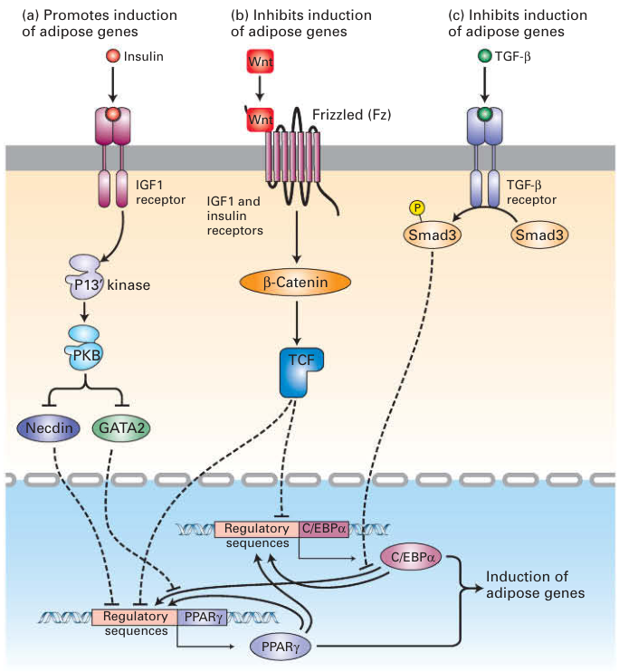
| β-Catenin | β-连环蛋白 |
| Necdin | Necdin |
| GATA2 | GATA2 |
| PPARγ | PPARγ |
| C/EBPα | C/EBPα |
| Frizzled (Fz) | Frizzled（Fz） |
| Wnt | Wnt |
| Insulin | 胰岛素 |
| IGF1 and insulin receptors | IGF1和胰岛素受体 |
| Regulatory sequences | 调控序列 |
| PI 3-kinase | PI 3-激酶 |
| TGF-β | TGF-β |
| TGF-β receptor | TGF-β受体 |
| Smad3 | Smad3 |
| TCF | TCF |
| PKB | 蛋白激酶B（PKB） |
| Promotes induction of adipose genes | 促进脂肪基因的诱导 |
| Inhibits induction of adipose genes | 抑制脂肪基因的诱导 |
- 血糖升高刺激胰岛β细胞释放胰岛素（见图16-39）。
- 随后胰岛素与肌肉细胞和脂肪细胞上的受体结合，导致蛋白激酶B活化，后者激活多条信号转导通路。这些通路连同不依赖PKB的通路，共同导致GLUT4葡萄糖转运体从胞内囊泡转位到质膜，从而增加葡萄糖摄取以及（在肌肉中）糖原合成，使血糖降低（见图16-40）。
- 血糖降低刺激胰腺α细胞释放胰高血糖素。胰高血糖素与肝细胞上其G蛋白偶联受体结合，通过cAMP触发的激酶级联（类似于应激条件下肾上腺素刺激的情形）促进糖原分解，并升高血糖（见图15-28a和图15-35b）。
- PPARγ是核受体家族成员，是脂肪细胞分化的主转录调控因子。
- 促进脂肪细胞分化的细胞外激素（如胰岛素）诱导信号转导通路，导致PPARγ生成增加。相反，阻止前脂肪细胞分化的信号蛋白（如Wnt和TGF-β）则激活阻止PPARγ基因表达的信号通路（见图16-41）。
访问LaunchPad可获取学习工具并进一步了解本章内容：展望未来、分析数据，以及包括视频、动画和测验在内的附加学习工具。
关键术语
复习题
- 1.请说出细胞因子受体与受体酪氨酸激酶激活过程中共有的三个特征。就这些受体的酶活性而言，请指出二者的一个差异。
- 2.促红细胞生成素（Epo）是一种激素，机体在血液O2水平偏低时会天然产生该激素。Epo与其细胞表面受体结合后所发生的胞内事件已被研究得很清楚。在(a) JAK2激活STAT5和(b) GRB2与Epo受体结合之后，分别是什么分子从胞质溶胶转位到细胞核？为什么一些耐力运动员曾使用Epo来提高运动成绩（"血液兴奋剂"），直到多数运动项目将其禁用？
- 3.请解释JAK的显性负性突变体的表达如何阻断促红细胞生成素（Epo）-细胞因子信号通路。
- 4.尽管GRB2缺乏内在的酶活性，它却是激活MAP激酶的表皮生长因子（EGF）信号通路的一个必需组分。GRB2的功能是什么？SH2结构域和SH3结构域在GRB2的功能中起什么作用？许多其他信号蛋白也具有SH2结构域。SH2与其他分子相互作用的特异性是由什么决定的？
- 5.活化的信号通路一旦在靶基因表达上引起适当的变化，该通路就必须被失活。否则可能产生病理性后果，许多癌症中由生长因子持续启动的信号传导就是例证。许多信号通路都具有内在的负反馈，即通路中的某个下游事件把上游事件关闭。请描述下调(a)促红细胞生成素和(b) TGF-β所诱导信号的负反馈。
- 6.某个Ras蛋白突变使Ras处于组成型激活状态（RasD）。什么是组成型激活？组成型激活的Ras如何促进癌症？什么样的突变可能使下列蛋白组成型激活：(a) Smad3、(b) MAP激酶和(c) NF-κB？
- 7.在芽殖酵母S. cerevisiae中，Ste11酶参与若干条不同的MAP激酶信号通路。在交配因子信号通路中，Ste11的底物是什么？当酵母细胞受到交配因子刺激时，鉴于Ste11也参与由高渗强度启动的MAP激酶通路，是什么阻止了细胞诱导高渗强度培养基中生存所需的渗透调节物？
- 8.请描述蛋白激酶B完全激活所需的事件。请说出肌肉细胞中由PKB介导的胰岛素的两个效应。
- 9.请描述PTEN磷酸酶在PI 3-激酶信号通路中的功能。为什么PTEN的功能缺失突变会促进癌症？预测组成型激活的PTEN对细胞生长和存活的影响。
- 10.转化生长因子β（TGF-β）与其受体结合后，可在不同类型的细胞中引发多种应答。例如，TGF-β在上皮细胞中诱导纤溶酶原激活物抑制剂1，在B细胞中诱导特定的免疫球蛋白。在这两类细胞中Smad3都被激活。鉴于该信号通路的保守性，应如何解释不同细胞类型对TGF-β应答的多样性？
- 11.由TGF-β与细胞表面受体结合所产生的信号如何传递到细胞核，并在那里引起靶基因表达的变化？细胞核中的什么活性确保活性Smad的浓度能密切反映细胞表面活化TGF-β受体的水平？
- 12.细胞外信号蛋白Hedgehog可以保持锚定在细胞膜上。Hedgehog的哪些修饰使它能够结合在膜上？这一性质为什么有用？
- 13.请解释为什么在果蝇中hedgehog和smoothened的功能缺失突变产生相同的表型，而patched的功能缺失突变却产生相反的表型。
- 14.大多数哺乳动物细胞都有一根不能运动的纤毛，称为初级纤毛；其中的纤毛内运输（IFT）马达蛋白（第18章将更详细讨论）沿微管运送Hedgehog（Hh）信号通路的组分。IFT马达蛋白Kif3A、Kif7和动力蛋白的突变会破坏Hh信号通路的哪些部分？
- 15.与细胞因子或RTK信号通路相比，为什么激活NF-κB的信号通路被认为是相对不可逆的？尽管如此，NF-κB信号最终仍必须被下调。NF-κB信号通路是如何被关闭的？
- 16.请描述多聚泛素化在NF-κB信号通路中的两个作用。
- 17.是什么特征使Delta只能向相邻细胞发出信号？
- 18.请说明γ-分泌酶催化什么生化反应？为什么曾有人提出，这种活性的化学抑制剂可能是治疗阿尔茨海默病的有效药物？这种药物可能有哪些副作用会使这一用途变得复杂？
参考文献
激活Smad的受体丝氨酸激酶
Deheuninck, J., and K. Luo. 2009. Ski and SnoN, potent nega- tive regulators of TGF-β signalling. Cell Res.19:47–57.
Massagué, J. 2012. TGFβ signalling in context. Nat. Rev. Mol. Cell Biol. 13:617–630.
Xu, P., J. Liu, and R. Derynck. 2012. Post-translational regula- tion of TGF-β receptor and Smad signaling. FEBS Lett.586:1871– 1884.
细胞因子受体与JAK/STAT信号通路
Hattangadi, S., et al. 2011. From stem cell to red cell: regulation of erythropoiesis at multiple levels by multiple proteins, RNAs and chromatin modifications. Blood118:6258–6268.
Pfeifer, A. C., J. Timmer, and U. Klingmuller. 2008. Systems biology of JAK/STAT signalling. Essays Biochem. 45:109–120.
Schindler, C., D. E. Levy, and T. Decker. 2007. JAK-STAT signaling: from interferons to cytokines. J. Biol. Chem. 282:20059– 20063.
受体酪氨酸激酶
Lemmon, M. A., and J. Schlessinger. 2010. Cell signaling by receptor tyrosine kinases. Cell 141:1117–1134.
Lemmon, M., J. Schlessinger, and K. Fergusun, eds. 2014. The EGFR family: not so prototypical receptor tyrosine kinases. Cold Spring Harb. Perspect. Biol. doi: 10.1101/cshperspect.a020768.
Levitzki, A. 2013. Tyrosine kinase inhibitors: views of selectiv- ity, sensitivity, and clinical performance. Annu. Rev. Pharmacol. 53:161–85.
Tomas, A., C. Futter, and E. Eden. 2014. EGF receptor traf- ficking: consequences for signaling and cancer. Trends Cell Biol. 24:26–34.
Ras/MAP激酶通路
Chen, R., and J. Thorner. 2007. Function and regulation in MAPK signaling pathways: lessons learned from the yeast Saccharo- myces cerevisiae. Biochim. Biophys. Acta1773:1311–1340.
Gastel, M. 2006. MAPKAP kinases—MKs—two’s company, three’s a crowd. Nat. Rev. Mol. Cell Biol.7:211–224.
Matallanas, D., et al. 2011. Raf family kinases: old dogs have learned new tricks. Genes Cancer3:232–260.
磷酸肌醇信号通路
Fayard, E., et al. 2010. Protein kinase B PKB/Akt, a key mediator of the PI3K signaling pathway. Curr. Top. Microbiol. 346:31–56.
Michell, R. H., et al. 2006. Phosphatidylinositol 3,5-bisphosphate: metabolism and cellular functions. Trends Biochem. Sci.31:52–63.
Vogt, P. K., et al. 2010. Phosphatidylinositol 3-kinase: the onco- protein. Curr. Top. Microbiol. Immunol.347:79–104.
受泛素化与蛋白质降解控制的信号通路：Wnt、Hedgehog与NF-κB
Briscoe, J., and P. Thérond. 2013. The mechanisms of Hedgehog signalling and its roles in development and disease. Nat. Rev. Mol. Cell Biol. 14:416–429.
Goetz, S., and K. Anderson. 2010. The primary cilium: a signalling centre during vertebrate development. Nat. Rev. Genet. 11:331–344.
Iwai, K., et al. 2014. Linear ubiquitin chains: NF-κB signalling, cell death and beyond. Nat. Rev. Mol. Cell Biol. 15:503–508.
Nehers, C. 2012. The complex world of WNT receptor signal- ling. Nat. Rev. Mol. Cell Biol. 13:767–779.
Wan, F., and M. Lenardo. 2010. The nuclear signaling of NF- κB: current knowledge, new insights, and future perspectives. Cell Res.20:24–33.
受蛋白质切割控制的信号通路：Notch/Delta、SREBP与阿尔茨海默病
Anderson, P., et al. 2012. Non-canonical Notch signaling: emerging role and mechanism. Trends Cell Biol.22:257–265.
Brown, M. S., and J. L. Goldstein. 2009. Cholesterol feedback: from Schoenheimer’s bottle to Scap’s MELADL. J. Lipid Res. 50:S15–S27.
Musse, A., et al. 2012. Notch ligand endocytosis: mechanistic basis of signaling activity. Semin. Cell Dev. Biol.23:429–436.
对多种信号通路的细胞应答整合：胰岛素作用
Bogan, J. 2012. Regulation of glucose transporter translocation in health and diabetes. Annu. Rev. Biochem. 81:507–532.
Leto, D., and A. Saltiel. 2012. Regulation of glucose transport by insulin: traffic control of GLUT4. Nat. Rev. Mol. Cell Biol. 1:383–396.
Rosen, E., and O. MacDougald. 2006. Adipocyte differentiation from the inside out. Nat. Rev. Mol. Cell Biol.7:885–896.